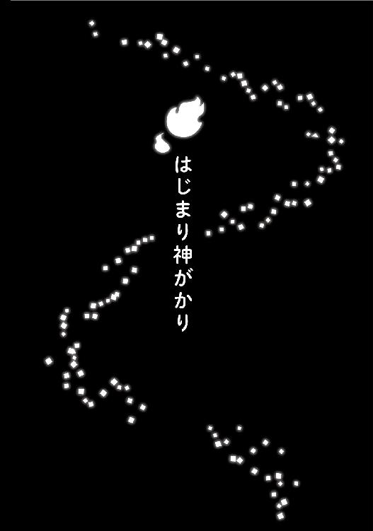
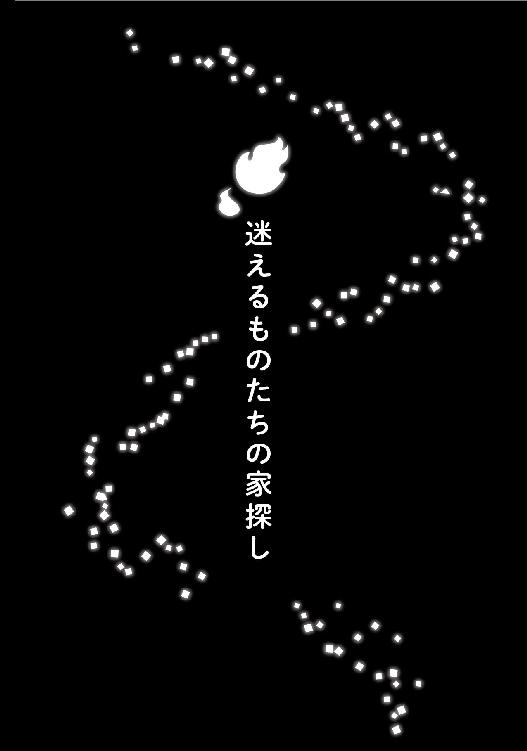
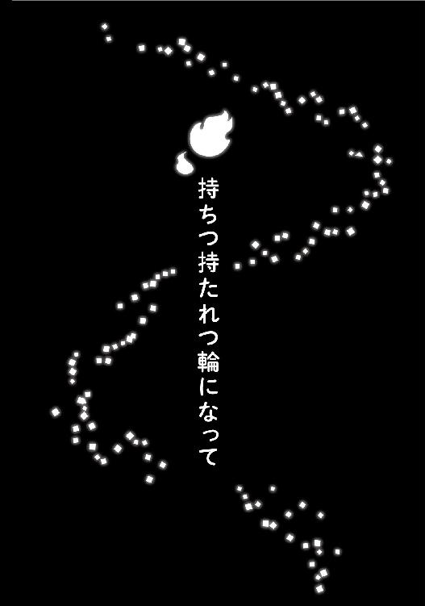
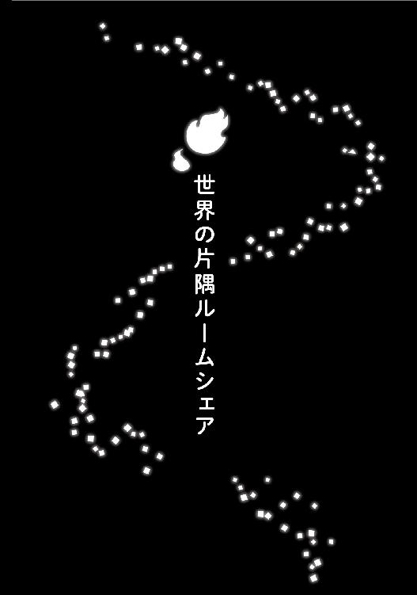

| こんこん、いなり不動産～あやかしシェアハウス、はじめます！～ (マイナビ出版ファン文庫) | |
| 猫屋 ちゃき | |
| 株式会社マイナビ出版 (2018) | |
本書はリフロー形式で制作されています。本文は文字の書体と大きさを変えることが出来ますので、お好みの設定で読書をお楽しみください。
藤代亜子［ふじしろあこ］
ブラックな職場環境だった不動産会社を辞め、井成不動産で働き始めた。お客さんに対しては親身になって話を聴き、相手が妖怪でも驚かない。根気のある女性だ。
井成幸吉［いなりこうきち］
有限会社井成不動産の社長。キツネ顔で愛想がよく、スリーピースのスーツが似合う紳士だが、ことあるごとに亜子をからかってくる。妖怪についての知識も豊富。
田沼倫太郎［たぬまりんたろう］
つり眉にたれ目が特徴的な優男。バンドのドラム担当をしているらしく、女性の前ではキザっぽくなる。とある事件をきっかけに妖怪の鳴家たちと一緒に暮らしている。
犬飼銀次［いぬかいぎんじ］
気のいいおじさんの顔がついたフレンチブルドッグ── つまり人面犬。渋めの顔つきだが愛らしい雰囲気なので、亜子は気に入っている様子。

事務所のガラス戸に吊るしていた正月飾りを外して、藤代亜子はかじかんだ手に息を吹きかけた。吸盤で貼りつけるタイプのものだったからすぐ外れるだろうと思っていたのに、意外に時間がかかってしまった。
気温はそこまで低くないのだけれど、海から吹く冷たい風のせいで体感温度はかなり低い。少しでも動かずにいると、あっという間に身体は冷えてしまう。
「あー寒い寒い」
「社長、おかえりなさい」
亜子がちょうど中に戻ろうとしたところに幸吉が帰ってきた。井成不動産の社長であり亜子の上司なのだけれど、こうして外を歩いている姿を見ると、さながらモデルか俳優のようだ。一八〇センチはあろうかというすらりとした長身に、鋭いつり目が印象的な和風のイケメンだ。歳の頃は三十代半ばに見えるものの、亜子ははっきりとした年齢は知らない。以前尋ねたときに「いくつに見える？」と逆に尋ねられて面倒くさかったため、もう聞かないことにしている。
「社長が寒いって言っても、何だか説得力がありませんね。高そうなコートとマフラーですし」
幸吉は仕立てのよさそうなコートにマフラーまで巻いて防寒しているのに、寒くてたまらないというように目まで細めている。その顔は、まるでキツネのようだ。
「コートとマフラーの値段は関係ないよお。それに僕は、皮下脂肪が少ないし」
「......それだとまるで、私が皮下脂肪が多いみたいじゃないですか！ それこそ、脂肪と寒さは関係ないでしょう？ 社長、少ないのは脂肪じゃなくて筋肉なんじゃないですか？」
店の外を掃除するだけだからとコートを着ていなかった亜子は、両腕をさすりながら幸吉をにらむ。そうしてにらまれ、幸吉はなぜか嬉しそうだ。
この井成不動産の社長である幸吉は、唯一の社員である亜子を珍獣を愛でるような感覚で気に入っているらしい。だから、からかったりセクハラまがいのことを言ったり、わざと怒らせて楽しんでいる節がある。
「筋肉が少ないなんて失礼だなあ。僕、細マッチョだよ。見る？ 触る？」
「......結構です」
うんざりという顔をして、亜子は事務所の中へそそくさと入る。その後ろに幸吉も続いた。
「社長、このあと外出の予定はありますか？」
「ないよ。銀行に行って通帳の記帳とかは済ませたから、しばらくは事務所で仕事だよ。年末年始、金融関係が営業してなかったぶんの仕事が溜まってるからねー」
朝、営業を開始してすぐに銀行を回っていた幸吉は、やっと自分の席につくことができてホッとした様子だ。
井成不動産では経理関係を幸吉が、営業を中心にその他の雑多な仕事を亜子が引き受けている。この店は客層が特殊なため、亜子の仕事は多岐にわたっている。
「社長が事務所にいてくれるなら、安心して外出できます。っていっても、年明け早々、うちの店に来客はないと思いますけど」
幸吉の机にコーヒーを置きながら、亜子は遠い目をした。
以前勤めていた別の不動産屋がノルマの厳しいブラックな会社だったため、この会社の来客が少なめのゆったりペースに、昨年の春に転職したばかりの亜子はまだ慣れていないのだ。
以前の勤め先である駅チカ不動産では、嫌な先輩社員に雑用を押しつけられ、そのせいで売り上げノルマを達成できず、上司から叱責される日々を送っていた。そんなとき、縁あって幸吉に声をかけられ、この井成不動産に転職したというわけだ。新卒で入社して三年近くも耐えた会社を辞めるのは少し勇気が必要だったけれど、今では後悔していない。
井成不動産は、お客さんを物件に案内して契約してもらったときの仲介手数料などで売り上げをあげる客付け業務よりも、オーナーから預かった物件や駐車場の管理をすることで手数料をもらう管理業務をメインに経営しているため、一日一日の業務の流れは緩やかなことが多い。暇ともいう。
「そんなこと言うものじゃないよ。一応、業界的にはこれから就職や進学に伴って物件が動き出す時期ではあるんだから」
「うーん。業界的には、でしょう？ でもうちの客層、別に就職も進学もないですからねえ」
今まで関わってきたお客さんの姿を思い浮かべて、亜子は苦笑した。もちろん普通の人間のお客さんもいるけれど、そうではないお客さんが井成不動産のメインだからだ。
「そういえば、出かけるってどこに行くの？」
「預かっている物件の掃除に。本当は年内に終わらせたかったんですけど、それなりに数が多いのでまだ済んでないんです。お客さんを案内したとき、埃にまみれているのは避けたいので」
「定期的に持ち家を見て回ってくれてるのって、高村さんくらいだもんね」
高村さんとは、所有している古い家を井成不動産に預けている家主の老婦人だ。前の職場にいたときに知り合った家主さんで、彼女が幸吉に頑張り屋のいい子がいると亜子を紹介してくれなければ、亜子は今頃ここで働いていない。よい家主さんなだけでなく、亜子と幸吉の縁を結んでくれた恩人でもあるのだ。
「遠方に住んでらっしゃる家主さんもいますからね」
そんなことを話していると、来客を知らせるドアベルがカラランと鳴った。ドアに視線を向けると、外の冷気と共に入ってくる犬の姿があった。
「犬飼さん！ あけましておめでとうございます！」
「おう、嬢ちゃん。あけましておめでとう」
亜子が嬉しそうに駆け寄ると、白いフレンチブルも笑顔で応じた。そのフレンチブルはただの犬ではなく、普通なら犬の顔がついている部分に渋めの中年男性の顔がついている。つまり、人面犬だ。
犬飼さんも、かつて亜子が接客して物件を紹介したことがあるお客さんだ。ここ、井成不動産は妖怪たちに物件を紹介する不動産屋なのである。
「わあ......犬飼さん、冷たくなってる！ これじゃ、冷やし犬になっちゃう。ホットミルク、用意してきますね」
「冷やし犬って何だ。でも、あったかいもんもらえるのは助かる」
「亜子ちゃん、キミって僕と犬飼さんとで態度が違いすぎないー？ 僕にももうちょっとそうやってキャッキャとしてくれたらいいのに」
上司の不満の声は華麗に聞き流し、亜子は奥の給湯スペースに向かった。それから、マグカップに牛乳を入れて電子レンジで温め、犬飼さん専用の器に移し替える。
「犬飼さんはこれから私についてきてくれるんです。社長より頼りになるんですよ」
「そんなあ......」
ニコニコして犬飼さんの前に器を置く亜子を見て、幸吉はがっくりと肩を落とした。美男だけれど軽薄なところがある幸吉よりも、男気あふれる犬飼さんのほうを贔屓してしまうのは仕方がないことだ。
「そういえばな、この近くにカメラとか俳優が来ていたぞ」
犬飼さんは犬らしくちびちびとホットミルクを飲みながら、思い出したように言った。
「ドラマか映画のロケですかねえ。この辺り、レトロなシーンにもってこいですもんね」
井成不動産がある尾白地区は、寂れていく一方の古い町ではあるけれど、味わい深い建物も多い。特にこの事務所の近くはかつて花街だった名残で、モザイクタイルの洋風な建物が多く、古きよき時代の雰囲気ばっちりなのだ。だから、これまでに何度も映像作品のロケ地に使われている。
「あ、そうやって撮影してるってことは、回り道したほうがいいかもしれませんね」
しばらく何か考えていた様子の亜子が、真剣な顔で言う。
「そうだね。人面犬だもんね。見つかったら大変だ」
「そうなんですよ。ただの妖怪ではなく、何てったって人面犬ですから！ かつて一世を風靡した人面犬！ スカウトされたら大変なので、安全な道を通ります！」
「......そっちの心配？」
幸吉が驚き呆れているのに亜子は気づいていない。亜子にとって、犬飼さんはかつて世間を騒がせた妖怪ではなく、引退したスターみたいな感じなのだ。
犬飼さんがホットミルクを飲み終わると、亜子は自分のマフラーで丁寧に犬飼さんを包んで出かけていった。
犬飼さんに付き添われ、亜子は井成不動産が預かっている物件をめぐっていった。
井成不動産が預かっている物件の多くは、驚くほど古い。そのため、害虫や害獣が勝手に棲みついてしまうこともある。
そういった物件はリノベーション可の物件としてお客さんに紹介するので古いことは構わないのだけれど、ゴキブリやネズミがいるのは困る。お客さんの印象も悪くなるし、何より亜子が嫌だ。
そういった厄介な存在は犬の気配を怖がるのか妖怪を恐れるのか、犬飼さんが家の中を走り回ると逃げていってしまう。だから、亜子は古い物件に行くときはほとんどの場合、犬飼さんを伴っているのだ。
「嬢ちゃん、年末からずっと熱心に掃除しとるが、客のほうはどんな感じだ？」
ハタキをかける亜子を見つめながら、犬飼さんが陽だまりの中から問う。冬だからか、害虫・害獣の気配はほとんどなく、犬飼さんの役目はあっという間に終わってしまった。
「ぼちぼちですねえ。古民家を改装して住むことに興味を持ってくれる人は結構いるんですよ。なかなか案内や契約には至らないんですけど。いつか案内する日のために、なるべく掃除をしておこうと思って」
「普通の不動産屋の仕事じゃないだろ、ここまでするのは」
「そうですけど、うちは普通の不動産屋じゃないですからね。妖怪さんたちに案内するにしても、きれいなほうがいいでしょうから、掃除は無駄じゃないです」
亜子はハタキからフローリングワイパーに持ち替える。ハタキとこのフローリングワイパーが、亜子のお掃除セットの定番となっている。幸吉にハンディタイプの掃除機の購入をお願いしているのだけれど、今のところのらりくらりとかわされている。事務所にエアコンの設置を求めたときもそんな感じだったから、亜子はまだねばってみようと思っている。
「そういえば妖怪といえばだな、最近何だか騒がしいんだよ」
「え!?」
うつらうつらしていたように見えた犬飼さんが、唐突にそう言い出し、亜子は焦った。
かつて、井成不動産で預かっている物件に鳴家という妖怪が勝手に住みついて物音を立てていたという事件があったのだ。鳴家というのは、子猫くらいの大きさの小鬼だ。物音を立てる習性があり、その習性ゆえに彼らが普通に暮らしているだけで騒ぎになってしまったのだ。
犬飼さんがすぐに気づいて知らせてくれたから発覚したけれど、先に人間たちに気づかれなくてよかったという、冷や汗ものの事件だった。
「騒ぎになって人間に知られて、ＳＮＳで心霊スポット突撃実況とかされても困りますから、早めに対処しないと！」
妖怪たちが人の世に紛れて暮らすのをお手伝いしたいと思っている亜子としては、人々の話題になることは避けたい。
「心霊スポット突撃って、人間はそんなことするのか？ 普通に不法侵入じゃねぇか」
「そうなんですよ。人気なのは山奥の廃墟とかなんですけどね。許可とってるんだかいないんだか。とにかく、古い家をたくさん預かってる立場としては、この手のブームって他人事ではなくて」
「まあ、近所で知らねえ妖怪をよく見かけるようになったってだけで、まだ勝手に住んでるかはわからんけどな」
慌てる亜子をなだめるように、犬飼さんは言った。
「知らない妖怪かあ。案外、町の下見をしているのかもしれませんね。もしかして、妖怪にも転勤なんてものがあったりして」
犬飼さんの話に緊急性がないとわかって、亜子の気持ちは緩んだ。緩んだついでに、妖怪たちがぞろぞろとこの町を練り歩く様を想像した。
不動産業界的には、これから春先にかけて繁忙期だ。人間のお客さんが来なくても、せめて妖怪のお客さんにだけでもたくさん来てほしいと思ったのだ。
＊＊＊
パソコンの画面をジッと見つめ、亜子は眉間に皺を寄せていた。問い合わせのメールが入ったと喜んで、それをチェックした直後のことだ。
年が明けて営業を再開してから仕事らしい仕事をしていなかっただけに、かなり嬉しかったはずなのに。
「亜子ちゃん、どうしたの？ 難しい顔というか、怖い顔してるけど」
向かいの席から様子を見守っていた幸吉が、心配そうに声をかけた。声をかけられた亜子は、眉間に皺を寄せたままパソコンから顔を上げる。
「......社長、尾白って田舎なんですか？」
「あらら。お客さんに、田舎だって言われたの？」
「はい。『都会暮らしに少し疲れたので、尾白のような素敵な田舎でゆったり暮らしたいです』ってメールに書いてあって」
唇をとがらせて言う亜子を見て、幸吉は笑った。
「そりゃ、東京のほうと比べれば田舎だよね。尾白駅からは多い時間で電車は一時間に何本くらい？」
「えっと、五、六本ですかね」
「東京は何と十本以上。五分待てば次の電車が来るんだ。だから、都会の人は遊びに行くときにわざわざ電車の時間を調べないなんて話も聞くね」
「......信じられない。五分？ こっちは十分間隔でもすごいと思ってたのに」
「まあ、田舎かどうかの基準って、そういうことではないと思うけどね」
尾白が田舎かもしれないことよりも、東京の電車の本数の多さに亜子は震えていた。旅行でしか東京に行ったことがなかったから、そういう便利さについてあまり意識していなかった。
「たぶんね、田舎って言葉には複数の意味があるんだよ。不便とか奥まってるとか過疎化が進んでるとかいうネガティブな意味の田舎と、東京とか大阪と比べて地方って意味の田舎と、失われた理想郷とかノスタルジアを感じる場所という意味の田舎。たぶんそのお客さんは、〝素敵な田舎〟って言葉を使ったってことは、一番最後の意味合いだと思うよ」
「そっか。いい意味での田舎っていうのもあるんですね」
これまでの仕事での経験から、亜子は田舎という言葉に対してよいイメージがなかった。ここより発展している隣の小佐木地区で働いていたときですら、都会から転勤などでやむなくやって来た人たちから、「ここは田舎すぎて楽しくない」だとか「こんな田舎に来たくなかった」などと八つ当たり気味に言われてきたからだ。
でも、幸吉に言われて考えを改めることができた。
「私もそういえば、疲れ果てたときとかに北海道や東北の景色をネットで見て、『田舎を旅行したいなあ』とか『田舎で暮らしたいなあ』とか思うことありますもん。ノスタルジアってやつですね。エア旅行は田舎に限ります」
「......待って。休暇をあげられるときにあげるから、旅行に行っておいでよ......！ 社員のキミが自宅でそんな寂しい趣味で心をなぐさめてるなんて、僕は耐えられないよ！」
思わぬ形で社員の趣味を知ってしまった幸吉は、ひどくショックを受けたらしく胸を押さえていた。
「そうだ！ どうせなら一緒に旅行に行こう！ 混浴！ 家族風呂！ 亜子ちゃんとドッキドキ、初の温泉旅行だ！ 今すぐ宿をチェックしよう」
「さて、このお客さんに返信しなくちゃ。連絡可能な時間も尋ねて、一度電話でお話ししてみたいなあ」
妙なスイッチが入ってしまった幸吉の発言はスルーして、亜子はパソコンに向き直った。お客さんが好意的に尾白の町に興味を持ってくれているかもしれないと思うと、俄然やる気が出てきた。
問い合わせをしてきたお客さんは、東山杏奈さんという。メールを送るとそう待たずに返事が来て、自宅で仕事をしているから電話はいつでも大丈夫ということだった。
「へえ、漫画家さんなんですか！ それで、自宅でお仕事ってことなんですね」
『まだまだ駆け出しではあるんですけど、アシスタントをしたり読み切りを掲載していただいたりして何とか漫画家を名乗れている感じですね』
「すごいですね！ わあ、素敵です」
電話をかけると、東山さんはすぐに出てくれた。年齢や職業、単身者かファミリーなのかということをまず最初に尋ねるのだけれど、職業を聞いた途端、亜子は感激してしまった。日頃、接点を持つことが少ない職業の人に出会うと、子供のように興奮してしまうのだ。
「それで、お引っ越ししようと思ったきっかけは、どういったことだったんですか？ 漫画家さんって、都内とか関東にいたほうが仕事しやすそうなイメージですけど」
『私の師匠にあたる先生が東京を離れて故郷に戻って仕事をされることになったので、私もこれを機に拠点を移してみようかと思いまして。アシスタントの仕事も、今ではネット環境が整っていればできる時代なので』
「そうなんですね。尾白に何かご縁があったんですか？」
東京の漫画家さんが、どうしてこの尾白に興味を持ったのかということが亜子は気になっていた。外の人の目に、この土地がどんなふうに映っているのか知りたくて、つい勢い込んで尋ねていた。
『大好きな映画のロケ地が、尾白だったんです。全編通してというわけではなかったんですけど、すごく印象に残っているシーンはすべて尾白で撮影されたものだって知って、それ以来、ずっと行ってみたい場所だったんです』
そう言って、東山さんはある映画のタイトルをあげた。
その映画は、過去にタイムスリップした主人公が、かつて救えなかった好きな人を救うために奮闘するファンタジー作品だ。わりと好きな俳優が出ていたということで亜子も見たことがあったけれど、井成不動産で働きはじめてからロケ地が尾白だと知り、もう一度見直したのだ。知っている場所がカメラを通して切り取られ、画面の中で魅力的な場所として映っているのは、見ていてとても嬉しいことだった。
「あの映画、いいですよね。あの映画を見て尾白に興味を持ってくださった方になら、安心して物件をご紹介できます」
ホッと安心して、亜子はつい本音をもらしてしまった。でも、それを聞いて東山さんも嬉しそうな声をあげる。
『よかったー。知らない場所で心機一転はじめるなら、絶対に尾白がいいって思ってたんです。それで、知らない土地で家探しをするなら、大きい不動産屋よりも小さな町の不動産屋さんがいいって人から聞いたので、そちらにご連絡したんです。古民家改装のブログも、すごく興味を惹かれました』
「ブログも見てくださったんですか？ ありがとうございます！」
年齢が近いということもあり、そのあとも亜子と東山さんは尾白の話題で盛り上がる。
若い女性のひとり暮らしであることに加え、漫画家という特殊な職業だ。必要とする条件もこだわりも、一般的なものとは少し違ってくる。そういった要望を聞き取りながら、亜子は東山さんにぴったりの部屋をイメージしていった。
＊＊＊
初めて電話をしてから二週間後、亜子は尾白駅まで東山さんを迎えに行った。
今日まで、候補の物件の資料をメールで送ったり、物件の中を歩き回りながら撮った動画を送ったりして、イメージを掴んでもらえるよう努めた。
そうはいっても、物件は自分の目で見るのが一番だ。だから、亜子は今日の案内をとても楽しみにしていた。
「あの、東山さんですか？」
待ち合わせの時間よりも少し早く到着すると、指定の場所にひとりの女性が立っていた。ダークグリーンのタータンチェック柄のワンピース、その裾から覗く生成色のレースのアンダースカート、それらの上にオフホワイトのロングカーディガンをまとったナチュラル系ファッションのやわらかな雰囲気の女性だ。その女性は、亜子に声をかけられてパッと顔を上げた。
「藤代さんですか？ 初めまして。東山です」
「初めまして！ 藤代です。本日はよろしくお願いします」
目の前の人物が東山さんだとわかり、亜子は名刺を差し出した。名刺交換にあまり慣れていないらしく、東山さんはちょっと慌てた様子でそれを受け取る。それから、何かを取り出そうとしたのか、肩にかけていたカバンに手を入れた。
「これ、私の漫画が掲載された雑誌なんですけど......わわっ」
何がどうしてそうなったのか。東山さんは盛大にカバンの中身をぶちまけた。亜子に渡したかったという漫画雑誌、何冊もの本、スケッチブック、画材が入っているらしいペンポーチ、のど飴、財布、音楽プレイヤーなどなど......おそらくカバンの中身すべてが出尽くしたであろう散乱ぶりだ。
「わあっ恥ずかしい！ すみません！」
「いいですよ！ というより、私が拾うので東山さんは立ってください！ さっきから首から下げたカメラが地面に......」
「きゃあっ」
大慌てで拾おうとする東山さんをなだめ、亜子は落ちたものを拾っていく。この人はドジだ、何もさせてはいけない――東山さんを見て、そういう印象を持ったからだ。
「......すみません。では、あの、改めまして。名刺がないので、代わりに私の作品が掲載されている雑誌を持ってきたんです。漫画家って職業は、こうして自分の作品でしか証明できないので」
「わざわざありがとうございます」
「押井アンニってペンネームなんですけど......」
東山さんは恥ずかしそうに、巻末の目次を指差した。これはきっと今すぐ見てほしいのだとわかって、亜子は目次に従ってページをめくった。
その作品は背景や小物まで丁寧に描き込まれた、日常系ファンタジーのようだ。面白そうで、亜子はつい読みふけってしまいそうになった。
「あれ......もしかして、東山さんって大森瓜子先生のアシスタントの〝アンニンちゃん〟ですか？」
背景の絵に見入っていた亜子は、あることに気がついた。それは、その背景のタッチが亜子も愛読している大森瓜子という漫画家の近年の作品の背景によく似ているということだった。大森先生はアシスタントの人たちをとても可愛がっていることで有名な人で、単行本の巻末のあとがきスペースで背景担当のアシスタントのことも〝アンニンちゃん〟という名前で紹介して、すごくほめていたことを思い出した。だからこそ、その背景イラストのタッチが印象に残っていたのだ。
「......わかるんですか？ そうです！ 私、大森先生のアシスタントなんですよ。杏奈って名前なので、それに引っかけて先生が〝アンニンちゃん〟ってあだ名をつけてくれたので、そのまま〝おいしい杏仁〟から〝押井アンニ〟ってペンネームにしたんです」
絵を見ただけで気づいた亜子に感激したように、東山さんは自分のことを語った。
「そうなんですね！ すごいなあ。私、これからすごい人の物件案内するんだ......改めて、今日はよろしくお願いします」
「こちらこそ、よろしくお願いします」
思わぬところで縁があったとわかり、初めて顔を合わせたにもかかわらず好感触で案内はスタートした。
「見て回りたいところって、どこかありますか？」
亜子は、デジカメを構えてキョロキョロしている東山さんに尋ねた。尾白の資料集めをしたいという希望もあり、今日は徒歩で案内をすることになっている。
住むかどうかを決めるにあたって町の雰囲気を知るのは大事なことだし、細い道や入り組んだ道をいちいち車を止めて案内するのも骨が折れるから、亜子としても都合がよかった。
「じゃあ、あの映画の、おばあさんがお花にお水をやってるシーンのロケ地にまず行ってみたいです」
「わかりました！」
今回の案内が、東山さんにとって聖地巡礼を兼ねているのは想定済みだ。だから、あらかじめルートも考えておいたし、それに沿って物件を回ることも計画している。
遠方から来るお客さんを案内するときは、その一度だけで物件を決めなければならないことがほとんどのため、入念な準備が必要になってくるのだ。
亜子は東山さんの希望が叶うように、予定していた場所を順々に見せて歩いた。
映画のロケ地になっていたところを中心に、その近くにある候補の物件や、生活していくときに必要なスーパーやコンビニ、小さな商店の説明もしておく。
「今まで見たものの中で、何か気になる物件はありましたか？」
いくつか案内し終えて、亜子は東山さんに聞いた。
東山さんの希望は、築年数は問わないけれど、仕事をするスペースと寝る部屋を分けたいから部屋数は二つ以上ほしいということと、資料が大量にあるため床の強度はある程度必要ということだけだった。
その条件に合う物件を亜子は見つくろったつもりなのだけれど、今のところ東山さんの反応は「これだ！」という物件に出合えていないように感じられる。
「そうですねえ......どこも素敵なんですけど、何だか新しいといいますか。築二十年とか三十年が、決して新しいものではないってことは、わかってるんですけど。もっとこう、レトロな感じがいいんですよね。せっかく尾白に住むわけですから」
「やっぱり、そうですよね」
何が何でも新築がいい、おまけに駅近でスーパーもコンビニも近いほうがいいという要望よりも、東山さんの要望はやりやすくはあった。けれども、〝レトロ〟と〝古くてボロい〟は紙一重なため、その言葉をどこまで反映するかというのも難しいものだ。
特に、若い女性のひとり暮らしだ。安全性などを考慮すると、古すぎる物件を勧めるのも少しためらわれた。
「大森先生が、『心の中に描きたい景色を持ちなさい。描きたいと思える景色は、それだけで創作の源になるから。そして、その場所が行ける場所なら、どんどん訪れなさい』ってよくおっしゃってたんです。先生にとってはそれがご実家のある故郷だったみたいで。私は東京出身のせいか郊外の景色にずっと憧れがあって、心の中でピタッとはまったのが尾白の景色だったんです」
カメラを構えながら、東山さんはうっとり語った。
前の職場で働いていたときから尾白地区を案内することはあったけれど、こんなにもこの土地に惚れ込んでくれているお客さんを案内するのは初めてのことだった。だから、亜子も嬉しくなる。
「知らない土地に住むなら、絶対に尾白がいいって決めてたんですよ」
「あ、前を見てください」
「痛い！」
亜子の注意もむなしく、東山さんは電柱にぶつかってしまった。涙目で額をさすっている。自分もなかなかのドジだけれど、この人はさらにその上をいくなと、亜子は内心かなり驚いていた。
「それなら、ピタッとはまるお部屋、見つけましょうね！ あの、ちゃんと気をつけて歩きながら」
「はい！」
決意を新たに、二人は再び歩きだした。
尾白地区は駅の近くの平地と、井成不動産のある辺りを境にぐんぐんと坂を上っていくエリアに分かれる。地元の人たちには〝海岸方面〟と〝山手方面〟と呼び分けられているのだけれど、東山さんをまず案内していたのは海岸方面のエリアだった。
海岸方面は平地のため開発がしやすかったのか、わりと新しいマンションやアパートが多く、何より道が平坦なため歩きやすい。そちらを先に案内したのは、亜子自身が暮らすなら山手よりも海岸だなと思っていたからだ。毎日坂の上り下りをすることを考えると、山手方面はちょっと嫌だろうなというのが亜子の感想だった。
でも、坂を上っていくにつれて、東山さんの目はどんどん輝いていった。
「うんと古いアパートなので、今まで見てきたものより手狭なんですけど......」
しばらく歩いて、ようやく候補の物件にたどり着いた。
モスグリーンのタイル貼りの外装が特徴の、三階建てのアパートだ。外観写真を見て東山さんの食いつきが一番よかったのは、この昭和の香りが漂うアパートだった。
「すごい......可愛いです！ 写真で見たときから気になってたんですけど、実物はさらに可愛い！ すっごくレトロ！」
東山さんは手を叩かんばかりに喜んでいた。
写真だといくらでも脳内補完できるため、実物を見たら粗も見えてがっかりするのではと思っていたのだけれど、どうやら杞憂だったらしい。感激する東山さんを見て、亜子は安心した。
「見てください！ アパートの敷地に入るための門扉と窓のところの柵がアールデコ風なんですよ。古いですけど、建てられた当初はすごくハイカラだったんでしょうね」
「素敵......こういうの見ると、本当に胸キュンなんですよね。早く中も見てみたいです」
二人はうきうきとしながら、アパートの中に入った。
このレトロなアパートは相当気に入るものだったらしく、東山さんはどこを見ても感嘆の声を漏らしていた。
昔の日本人の体形を基準に造られた少し低めのキッチンも、色あせた花柄の壁紙も、冬場は冷たそうな風呂場の陶器のタイルも、亜子にとっては懸念事項でしかなかったそれらのものが、東山さんにとってはすべて加算ポイントらしかった。
「窓際の、この畳の部屋を仕事場にします。それで、キッチンと続きになっている居間にコタツつきのテーブルを置いて、寝るときはテーブルをずらして布団を敷くんです。......想像するだけで、すごくわくわくしちゃいますよね」
部屋の中を歩き回って、東山さんは存分に想像の翼を羽ばたかせているようだった。物件の案内中にいろいろ考えて楽しそうにするお客さんというのは、これまでに何人も見てきたけれど、ここまで楽しそうにしているのは東山さんが初めてかもしれない。
「この窓際に机を置いて、そこで自分が漫画を描くって考えるだけで楽しくなっちゃいます。......こんなこと言うのも変ですけど、この部屋って漫画家っぽいですよね」
「ぽいですね、ぽい。......でも東山さん、立派に漫画家じゃないですか」
「そうでしたね」
言いたいことはわかったけれど、あまりにおかしくて亜子は笑ってしまった。それにつられて、東山さんも笑う。
その笑顔は楽しそうで、晴れ晴れとしていて、「ここだ！」という部屋に出合えたお客さんみんながする表情だった。この表情を見られたときが、働いていて一番嬉しい。
「もう一件、候補の物件があったんですけど、もうここで決めちゃいますか？」
念のために尋ねると、東山さんは迷うことなくうなずいた。
「はい、この部屋に運命を感じたので」
「わかりました」
よほど気に入ったらしく、部屋を出るとき東山さんは少し名残惜しそうにした。そんなに気に入ってもらえたこの部屋は幸せだなと、亜子はしみじみ思う。
人によっては、ここはただの古いアパートだ。立地が特別いいわけでもないし、設備各所の古さや傷みは普通の人にとっては減点ポイントだろう。でも、東山さんはそういったところも含めて、この物件に愛着を持ってくれたらしい。
「私、これが初めての、自分ひとりでの部屋探しと引っ越しなんですよね。今住んでる部屋は大森先生の仕事に行くのが便利なようにって、ほとんど先生が選んで決めてくださったので。高校を出てすぐのことだったから、すごく助かったんですよ」
「高校を卒業してすぐからアシスタントの仕事をされてるんですか？」
「はい。先生の大ファンで、先生の作品の中で一番好きなキャラクターと一緒にお気に入りの風景のイラストを気合いを入れて描いてファンレターに同封して送ったら、それがきっかけで声をかけられてアシスタントになったんです。絵を描くのが大好きだったから、先生のもとでいろんなことを勉強できたのは、本当に幸せでした」
アパートの外に出て、自分がこれから暮らす予定の部屋を見上げて、東山さんは感慨深そうに言った。
高校を卒業したあとといえば、亜子は何をしたいかも何をすべきかもわからずに大学に進学したのだ。それと同じ頃に自分のやりたいことを見つけ、しっかりと仕事をしていたという東山さんを、亜子は尊敬の眼差しで見つめた。
「自分で部屋を選んで契約するのって、大人になった気分ですよね」
「本当、そうですよね。私、やっと今から大人になります」
嬉しそうに、少しだけ心細そうに、東山さんは微笑んだ。その心細さがわかるから、亜子は優しい気持ちになって言う。
「親元から離れて、お世話になった先生のもとからも離れて、今回は本当の意味での巣立ちなんですね。東山さんにとって尾白が、新しい居心地のよい場所になればいいなって思います」
「ありがとうございます。私、ここで素敵な漫画を描いていきます！」
決意を新たにすると、どうやら心細さは吹き飛んだらしい。東山さんの顔にもう憂いはなかった。
「あ、ここ段差があるので気をつけてください」
「きゃっ......！」
案内を終え、東山さんの今日泊まるホテルまで付き添おうと歩いていると、彼女は盛大に転んだ。
今日一日で、もう何度目になるかわからない。おっとりしているからか、東山さんは本当にドジだ。カバンの中身をぶちまけたり電柱にぶつかったり転んだりするほかにも、ヒールの高い靴を履いているわけでもないのに足首をひねったり、よくわからないところに引っかけてカバンの持ち手が取れてしまったりと、とにかく何かしらのトラブルに見舞われている。
「大丈夫ですか？ どこか怪我したりしてません？」
亜子が手を差し伸べて助け起こすと、東山さんは恥ずかしそうに笑った。
「......普段はこんなんじゃないんですよ。何か、引っ越しを考えはじめたあたりからこういうことが続いてて......。先生のところから離れるのが不安だからなのか、運気が変わりつつあるからなのか」
「そういうこと、あるかもしれませんね」
「そういうことにしておいてください」
今日一日ですっかり打ち解けた二人は、そんなことを言い合って笑った。
「うう......何か、寒気がするなあ。肩も重いし」
東山さんを送った帰り道、亜子は猛烈な寒気を覚えて身震いした。
風邪をひいたような感覚はないのに、ただただ寒くて肩が重い。そのせいか、ひんやりとした重たい何かが肩に負ぶさっているイメージが頭に浮かんでしまった。
「帰ったら、シュワシュワの入浴剤のお風呂に入ろう」
亜子は何となく嫌な予感がしつつも、楽しいことを考えながら会社への道を急いだのだった。
＊＊＊
「あ痛っ......！」
立ち上がろうとして、亜子は卓上電気スタンドで後頭部をしたたかに打ちつけた。その日何度目かになるドジをやらかして、涙目になる。
「亜子ちゃん、それ何回目なの？ その電気スタンドもらってきて設置してから、もうかなりの回数、頭ぶつけてるよね。その電気スタンド、いる？」
呆れ半分、心配半分で幸吉は言う。上司の端正なキツネ顔を見て、亜子はふるふると頭を振った。
「せっかくもらったものだから、ちゃんと使いたいんですよ。だって、もったいないじゃないですか」
「もらったって言ったって、不要品でしょ？ キミって、そういうところあるよね」
幸吉が貧乏性だと言いたいのだとわかっても、亜子はこの電気スタンドを撤去する気にはならなかった。
この電気スタンドは、引っ越しに際していらなくなったからと、東山さんがくれたのだ。東山さんは新しい部屋に合わせて、アンティーク調の可愛らしいスタンドを買ったのだという。そういう経緯で、手元がもっと明るければと思っていた亜子は、喜んでそのスタンドをもらってきたというわけだ。
「頭を上げないまま立ち上がるからいけないのはわかってるんですよ。こう、前のめりでパソコンを見てるのを姿勢を正して、それから立ち上がればいいんですよね......」
ブツブツ言いながら姿勢を正したり崩したりしていた亜子だったけれど、疲れ果てたように深々と溜息をついた。
「最近、何だかついてないんですよね。気がついて連絡してどうにかなったからよかったものの、クレジットカードを不正使用されてるし、坂道で転んでスマホを落として画面にひびが入っちゃうし、雨の日にコンビニに行ったら傘を盗まれるし、車のキーを側溝に落とすし、足の小指を箪笥にぶつけるならまだしもドアで轢いたりしちゃうし......。誰かに呪われてるのか厄年なのかって言いたくなっちゃいます」
ここ最近の不幸を振り返ると、げっそりした気分になる。ひとつひとつはそれぞれ小さな出来事でも、積み重なると精神的ダメージがすごい。
「東山さんのことをドジっ子だと思ってたんですけど、これじゃあ私も人のこと言えないですよね。......というより、東山さんのドジがうつったのかな」
東山さんのドジっぷりを見て放っておけない人だと思っていたのに、今の自分のほうがよほどひどいことに気づいてしまう。
「......もしかして亜子ちゃん、疫病神が憑いてるのかもね」
それまで黙って亜子の愚痴を聞いていた幸吉が、ふと気がついたというように手を打った。明るい調子で言われても不穏な響きを感じ取り、亜子はおののいた。
「......何か憑いてるんですか？ えー、嫌だー！ そういう悪霊的なものって怖いし困るんですけどー」
「いや、だから悪霊じゃなくて疫病神だって」
「どう違うんですか？ 見えるんだったら取ってくださいー！」
「見えないよ。妖怪と違って、神様は見えないよ。僕はね。あと、取るって、髪についたゴミとかじゃないんだから無理だよ」
面白がってからかっているでもなく淡々と言う幸吉に、亜子はさらに涙目になった。数々の不幸に見舞われているだけでも嫌なのに、その上、疫病神が憑いてるだなんて踏んだり蹴ったりにもほどがある。
「......うう。私が一体何をしたっていうんですか」
「疫病神って、そう悪いもんじゃないんだよ」
今にも泣きだしそうな亜子を見て、幸吉はほっこりとした笑顔になって言う。
「疫病神はね、頑張る人間が好きで、そういう人間に取り憑いては頑張り屋さんのいいエネルギーを吸い取るんだ。そして、そのエネルギーで成長するんだよ」
「成長して、ハイパー疫病神になろうってんですか!? それなら私、頑張らない！ 省エネモードで生きてやる！」
幸吉に言われたことを認めたくないと、亜子はイヤイヤをするように激しく頭を振った。認めようと認めまいと、憑いているのが本当なら仕方がないのだけれど。
「省エネモードで生きても解決しないよ。そんなことしたって、押し寄せる不幸につぶされるだけだ。疫病神をどうにかしたいなら、やれることは二つしかない。ひとつは、疫病神が去っていくまで、まるで嵐をやり過ごすように歯を食いしばって不幸に耐えること。もうひとつは、頑張って頑張っていいエネルギーを与えて疫病神を成長させて、福の神にクラスチェンジさせることだね」
「......クラスチェンジ？」
幸吉の口からＲＰＧの世界でしか聞かないような単語が飛び出して、亜子は面食らった。でも、すぐにその言葉に光明を見出す。
「クラスチェンジって、次のステージに上がるみたいな意味ですよね？ ゲームの中で経験値を溜めたらシスターが聖女になったり、戦士が勇者になったりする、あれですよね？ つまり、疫病神という下級神格から福の神という上級神格になれるってことですね？」
「......亜子ちゃん、ゲーム好きだったっけ？」
目を輝かせて尋ねる亜子に、幸吉は若干戸惑っていた。先ほどまでこの世の終わりみたいな顔をしていたのが、嘘みたいに明るくなっている。立ち直りが早いのはよいことだけれど、この変わり身の早さに幸吉は驚いたようだ。
「なあ〜んだ。ずっと疫病神のままだったら困りますけど、福の神になってくれるならいいや。よかったよかった」
まだ不幸の連鎖から抜け出せたわけではないというのに、亜子は晴れやかな顔で笑っていた。そんな亜子を見て、幸吉は苦笑する。
「亜子ちゃんがそれでいいならいいんだけど、まだ問題は何ひとつ片づいてないんだけどね......」
「何よこれー!?」
その日の夜、亜子は帰宅してそう叫んでいた。
家に帰ると、寝室として使っている部屋の天井が大きくたわんでいたのだ。その真下の床には、水が滴って溜まっている。その薄汚れた水溜まりを見てもう一度叫びそうになるのをこらえ、亜子は頭を働かせた。
「まずは天井と床の様子を写真に撮らなきゃ。片づけはそれから......。上の階の人の水漏れかもしれないから知らせるべきか......でも、真上とは限らないし、その両隣にも知らせるってなると面倒。それに、こういうのはもしものときのために個人で動くより管理会社を通したほうが安心だよね」
口に出して言っているうちに、少しずつ亜子は落ち着きを取り戻していった。けれども、衝撃が過ぎ去ると今度は別の感情が押し寄せてくる。
「何かこの部屋、カビ臭いと思ってたんだよね。昨日とか今日とかの話じゃなくて、少しずつ時間をかけてこの状態になったってわけか......うわあー臭いよー汚いよー！ 掃除したくないよー！ こんな部屋で寝たくないよー！」
プツリと糸が切れたように、亜子は泣きはじめた。
ここのところ、ただでさえツイてなかったのだ。小さな数々の不幸に見舞われ、足の小指や後頭部を痛めつけ、それに仕事の疲れも少しずつ重なっていたせいで、感情が爆発して涙が出てきた。
悲しいのか悔しいのか怒っているのか、自分でもわからないまま亜子は泣き続けた。ダイニングの床にペタンと座り込んで、子供のように。
極限まで追い詰められると泣いてしまうのは、亜子の癖みたいなものだ。イライラしたり悩んだりするのがあまり尾を引かない代わりに、そのときにすっきりできなかったぶんが少しずつ溜まっていってしまう。そして、それがうんと溜まって決壊すると、こうして泣いてしまうのだ。
でも、泣くとストレス発散できるのか、すっきりとする。
すっきりすると頭も冴えてきて、とりあえず今すべきことがわかった。
こんなひどい状況は、これまで不動産業界で働いてきても見たことがない。見たことがないということは、どうすればいいか判断できないということだ。こういうときは、自分よりベテランに相談するにかぎる。
『もしもし、亜子ちゃん。どうしたのー？』
助けを求めようと、亜子は幸吉に電話をかけた。私用で電話するのは気がひけたけれど、幸吉の明るい声を聞くとホッとした。
「ご相談したいことがあってお電話したんですけれど。帰ったら自宅の天井が大きくたわんでいて、その真下の床が水浸しになっていて......」
『それは大変だ！ たしか、亜子ちゃんの部屋ってワンルームだよね？ ということは、ベッドとか食事を取るところも水浸し？』
「いえ、ベッドは無事です。それと、食事はキッチンの小さなカウンターで取るので大丈夫です」
『そっか。ならひとまずよかった。いや、よくはないんだけどさ』
幸吉は、まず亜子が食事する場所と今夜寝る場所の心配をしてくれた。意外だったけれど、亜子はすごく嬉しかった。それだけでも、電話をしてよかったと思える。
『とりあえず、今の状況をスマホでも何でもいいから写真に残しておいて。それから、その部屋の賃貸借契約書を見つけておいて。どこかにしまってあるでしょ。明日、一緒に読み直してあげるから。管理会社に一報する前に読み直しておくべきでしょ。掃除は、気にならないなら放置でいいよ。疲れてるもんね。それに、管理会社を通じて業者に来てもらうにしても、ありのままを見せたほうがいいだろうし』
幸吉は穏やかな声で、テキパキと亜子にするべきことを指示してくれた。日頃のセクハラ発言でかすんでしまいがちだけれど、幸吉はできる上司なのだ。
電話を切る頃には、亜子は元気と幸吉への尊敬の気持ちを取り戻していた。
元気になった亜子は、こぶしをグッと握りしめる。
「もー！ 疫病神めー！ こうなったらいつか、宝くじ一等を当てさせてくれるような福の神に育っていただこうじゃないの！」
これまでに出た損害額と、今回のことでこの部屋を退去することに伴い必要となるであろう金額を考えると、そのあまりの痛手に亜子はまた泣きたくなった。でも、泣く代わりに握りしめたこぶしを突き上げて、決意を新たにした。
「絶対絶対、お金持ちになってやるー！ 福の神にお金持ちにしてもらうんだからねー！」
次の日から、亜子は井成不動産での業務に加え、自分の新しい部屋探しをはじめなければならなかった。
管理会社に連絡するも、部屋を契約した当時に担当してくれた人はすでに退職していなくなっていた。けれど、前任から引き継いだ人もそこそこいい人そうで助かった。
亜子の前の職場である駅チカ不動産の嫌な先輩社員のような人間をもし引き当てたら、退去の手続きが難航して最悪だと思っていたのだ。
「よかった。無事に交渉できました」
亜子はスマホの終話ボタンを押し、事の成り行きを見守ってくれていた妖怪三人娘たちに報告した。ろくろ首のクロエさん、のっぺらぼうの咲子さん、雪女の小雪さんの美人妖怪三人は、亜子の言葉を聞いてその美しい顔をほころばせた。
クロエさんたちとは、以前古民家を仲介したとき以来の付き合いだ。今彼女たちが住んでいるこの家こそがその古民家で、彼女たちは自分たちで改装して暮らしている。古民家の改装に興味があった亜子は資材の買い出しなどを手伝ったり、改装の様子を撮らせてもらったりしていたから、それが縁で今も交流が続いている。
今回、亜子が一時的に住むところをなくしたことを相談すると、彼女たちは快く滞在を許可してくれたのだ。
おかげで、幸吉からの「この際だから僕と一緒に住もうよ」というセクハラまがいの誘いを一蹴することができた。
「やったね！ じゃあ、敷金も戻ってくるし、今月の家賃も戻してくれるって？」
「家賃は、半分だけ。でも、助かりました」
「だよねー。だって、月末に退去っていっても実質的に今は住めてないんだもん。大変なことになって住めなくなった部屋の家賃を払うなんて、おかしな話よね」
しっかり者の咲子さんは、特に今回のことを心配して憤ってくれていた。というのも、敷金が返ってこないどころか、さらに修繕費と称してお金を請求される可能性があったからだ。
「天井をああしたのが私なのだとしたら、敷金から修繕費を引かれた上、足りない分を支払うのもわかるんですよ。でも、天井をたわませることなんてできませんし、そもそもやってませんし、あの部屋に一分一秒でももう住んでいたくありませんし、引っ越しまでの間、もし私がどこかのホテルにでも宿泊するとしたら、一体誰がその代金を負担するのか？ ......って話を丁寧に説明したら、管理会社の担当さんもわかってくださいました。敷金三ヶ月敷引二ヶ月だったところが、敷金は丸々返金されますし、今月の家賃も半分で手打ちです」
「......亜子ちゃんって、やり手」
お茶を運んできてくれたクロエさんが、感心したように言った。勝利に気分が高揚している亜子は、調子に乗ってピースサインなんてしてみせる。
「社長にちょっと入れ知恵してもらったんですよ。『不具合のあった部屋から退去するのに、そのときの部屋の状況から修繕費を算出するなんて嫌な話だね』って。今回のことは、どうやらマンションの構造的欠陥というか、経年劣化によるものだったらしくて、管理会社も強気には出られなかったみたいです。......もし言い分がぶつかり合ってたら、裁判とかだったかも」
「うわあ......」
部屋の退去をめぐる問題を聞かされて、咲子さんもクロエさんも驚いたように顔を見合わせた。不動産業界に身を置いている亜子にはわりと慣れていることだけれど、不慣れな人が聞けば怖い話に違いない。
「この業界に身を置いて三年ですけど、やっぱり自分のこととなると怖いですね。社長が相談に乗ってくれなかったら、うまくやれなかったかも......」
「社長さん、亜子ちゃんのことだから張り切ったでしょ？」
恋バナが好きなのか、咲子さんはニヤニヤするけれど、亜子は渋い顔をするしかない。幸吉が亜子の退去に関して張り切っているのは、あわよくば同居しようと考えているからだろう。からかっているか本気なのかわからないし、下心があると思うと素直に感謝できない気持ちになる。
「今回は亜子ちゃんが出ていく側の住人だったわけだけれど、不動産屋さんの立場でもこういうトラブルってよくあるの？」
怖いもの見たさという様子で、クロエさんが尋ねた。好奇心を抑えられないらしく、首が少し伸びている。
「うーん......。いろいろありますよ。退去のときに壁に穴が開いてたから、その修繕費を請求しようとしたら『開けてない。やったのは自分じゃない』って言い張られたり。喫煙禁止の部屋なのにあきらかにタバコの煙による壁紙の汚れとにおいがあったので壁紙の貼り替え代を請求したら、『吸ってない』って言い張られたり」
「お金のことが絡むと、嘘ついちゃうんだねえ。それは結局、どういう形で落ち着いたの？」
「入居前に部屋の写真を撮っていたので、それを証拠としてお見せしたら、どちらのケースもご理解いただけましたよ。壁に勝手にこぶしくらいの大きさの穴は開きませんし、タバコの焦げ跡もつきませんから。その代わり、修繕費は複数の業者から見積もりを出してもらって、一番安いところに頼みましたけど。少しでも敷金が戻ってきてほしいとか、手出しを少なくしたいっていうお客さんの気持ちもわかりますから」
「だったら、穴を開けたりタバコ吸ったりするなって話だけど。......うわあ、不動産屋さんの仕事ってそういうところが特に大変そうだね」
亜子の経験した中でもマイルドな話をしたつもりだったのだけれど、それでも十分、クロエさんたちはドン引きしていた。
「前の会社での話ですよ。トラブルはいろいろありますけど、たぶん敷金とか修繕費をめぐる問題がわりとハードかも......」
前の会社で経験したあれこれを思い出して、亜子はげんなりした。お客さんには心地よく部屋に住んでほしいし、出ていくときも気分よく退去してほしいと願っているのに、うまくいかないことも結構あるのだ。
その上、そういったトラブルが起きるとそこに時間を割かれ新規の案内及び契約のチャンスを逃し、ノルマが達成できず上司に怒られるという嬉しくないコンボが発生する。......そんなことを久しぶりに思い出し、亜子の胃はキュッとなった。
「そういえば、敷金とか敷引とか礼金とか保証金って聞くけど、あれってそれぞれどういうものなの？ 私、いまいちよくわからなくて」
亜子の顔色が悪くなったのに気づいたのか、小雪さんがさりげなく話題を変えた。
「まずですね、敷金っていうのは契約したときに管理会社に預け金として支払うお金で、家賃を滞納したときの補填や退去時に部屋の修繕費にあてられるもので、そういったものが差し引かれたあとで退去時に返金されるものです。保証金というのも、意味合いとしては同じです」
あまりにも部屋が汚損している場合にはクリーニング代や補修費用が追加されることもあると、亜子は一応言い添えた。
「それから『敷金四ヶ月敷引二ヶ月』みたいに敷金と一緒に聞くことが多い敷引というものは、基本的に退去時に返金されないものですね。そして礼金っていうのは、字のごとく『貸してくれてありがとう』というお礼のお金なので、返金されません」
「なるほど......私たち、そういうのなしで住まわせてもらってるから、言葉として聞いたことがあっても今までよくわかってなかったんだよね」
小雪さんが言うと、あとの二人もうんうんとうなずいた。
「地方によって風習が違うから、これらの用語って難しいんですよ。特に転勤とかでやって来る人が聞いたことないこれらの用語に驚いたり困ったりっていうのは、わりによくあるんです。近年では、敷引が違法かどうか争う裁判も起こってるらしくて......すっごくデリケートな問題ですよ。部屋を借りるときには、ほとんど必ずつきまとうことですけど」
「高村さんに家を借りられてよかった」
「家主の高村さんは、本当に奇特な方ですからねえ」
井成不動産が預かっている多くの古民家やこの家の持ち主である高村さんのことを思い出し、亜子はしみじみと言った。
高村さんは所有している物件を財産というよりも大切なものとして扱っているため、住んでいる人たちのことも店子というより、家に住んで手入れをしてくれる存在と考えている節がある。だからこそ、妖怪でも何でも受け入れて、持っている家を貸してくれるのだ。
「亜子ちゃん、このままここに住んじゃえばいいのに。きっとひとり住人が増えても、高村さんは何も言わないよ。まだ改装してない部屋もあるから、好きにできるよ？」
疲れている亜子を見て、笑顔で咲子さんは言った。疫病神に憑かれているようだということも、ここ最近の小さな不幸の積み重ねについても話しているため、心配してくれているのだろう。
それをありがたいと思いつつ、亜子は首を振った。
「その申し出はすごく嬉しいです。こうして次の部屋が見つかるまでの間、ここにいさせてくれるのも。でも、朝型の私が夜型の咲子さんたちと生活したら、いずれきっと迷惑をかけてしまうので」
この家に身を寄せて数日で、もうそれを実感してしまっている。
咲子さんたちは飲み屋で人間として働いているため、夕方から出勤して深夜から明け方に帰宅する。そこから昼頃まで眠って身体を休めるのだろうに、この数日は亜子が出勤するときに見送っているのだ。静かに起き出して支度しているつもりでも、やはり気配で起こしてしまうものらしい。
「あー、あたしたちも昼間の仕事ができたらいいのに。そしたら亜子ちゃんに気を使わせることなく、一緒に暮らせるのにな」
「そうはいっても、私たちは人間に化けて仕事ができるだけでもありがたいからね。人間に化けられないから働けないし、そのせいで自分たちだけで部屋を借りられない妖怪もいるわけだし」
残念そうにする咲子さんを、クロエさんがなだめた。クロエさんも小雪さんも残念そうにしてくれているから、そんなふうに思ってもらえている様子だけで亜子の気持ちは救われた。
それを同時に、人型でなかったり人間に化けられなかったりする妖怪の家探しについて思いをめぐらせて悲しい気持ちになった。
井成不動産は家探しをする妖怪の手助けをしているけれど、すべての妖怪に物件を紹介できるわけではないからだ。
かつて空き家に勝手に住みついて物音を立てるという騒ぎを起こしていた鳴家という妖怪も、人間に化けられないために自力で部屋を借りることができない。だから、田沼という化けタヌキのマンションに同居することで今はとりあえず落ち着いている。
「尾白で部屋を探すのは間違いないので、ここを出てからも一緒にご飯食べたりしましょうね」
出勤前、名残惜しそうにする咲子さんたちにそう言って、亜子は玄関先で見送った。
（生活スタイルの違いさえなければ、人間も妖怪も一緒に暮らせそうなのにな）
ひとりきりになった家の中、布団に横になって亜子はそんなことを考えた。
「何で亜子ちゃん、僕と同棲してくれないのに田沼がいるマンションに住むんだ!?」
井成不動産の事務所の中に、幸吉の悲痛な叫びが響いた。
来客がない時間帯だったからいいものの、営業時間中にあるまじきことだ。向かいの席でパソコンを見ていた亜子と犬飼さんは、そんな幸吉を冷ややかに見ている。
「若い娘のひとり暮らしだ。高層階のほうが安全だろうし、それならエレベーターつきがいい。どうせならオートロックつきのほうがいい。その条件でいくと、ネコマチパレスがこのあたりだったら妥当だろうが」
「そうだけど！ でも！ 田沼と同じマンションなんてだめ！ というより嫌！ 僕は耐えられない！」
きちんと説明する犬飼さんに対して、幸吉はまるで駄々をこねる子供だ。もともと日頃からそう感じることもない社長としての威厳は、今は皆無だ。
「私としては、ＤＩＹで改装して理想のお部屋に住んでみたいんですけど......」
駄々っ子な幸吉を無視して、亜子は言う。でも、その視線は不安げに左手の親指に注がれている。親指はぐるぐるにテーピングされて痛々しい状態だ。
「......嬢ちゃん、そんな指をしてまだ言うのか。やめとけ。次は指じゃなくて頭を打ちつけるんじゃないのか？ 命は大事にしろ」
「ものは試しで釘一本打っただけで、その怪我だもんね......僕も古民家に住むのはお勧めしないな」
妖怪三人娘たちの家に滞在させてもらっている亜子は、新しく棚を作るという彼女たちに交じって金槌を手にしたのだ。ＤＩＹに憧れていたし、自分で改装するなら釘の一本でも打てなければと。そして、開始数秒で負傷したというわけだ。
「疫病神がどうにかなるまでは、部屋は無難なところにするのがいいと思うよ。たとえば、この上の部屋で僕と一緒に暮らすとか」
幸吉はこの井成不動産の二階にある部屋で暮らしている。幸吉と同居というだけでも戸惑う話なのに、住居が職場のすぐ上なんてあり得ない話だと亜子は思っている。
「ネコマチパレスがだめなら、景山さんが住んでるマンションですかねえ」
幸吉の発言を無視して、亜子はパソコン内の資料を見つめる。
「オートロックもエレベーターもないが、手入れはされた物件だし、何より賃料が今より五千円高いだけだ。一万五千円も高いネコマチパレスよりは、現実的で無難だな」
「ですかね」
唇をとがらせつつも、亜子は納得してうなずいた。具体的に賃料のことを言われたのでは、納得するしかない。何より、こうしてどこに住むかの相談に乗ってもらえるのはありがたいことだ。
「どうせ引っ越すんだったら、今よりうんといい部屋か理想の部屋がよかったんだけどなあ......」
「何事もステップバイステップだな、嬢ちゃん。わしら妖怪のように姿が見えるわけじゃなくても、やっぱり神はいるんだろうからな。いつかいいもんになるってんなら、うまくやっていくしかないさ」
「そうですね」
度重なる不幸や、幸吉や犬飼さんの言葉によって、疫病神の存在は信じざるを得ない感じだ。それに、はっきり姿を見たことがないけれど、時折、頭の中に何らかのヴィジョンが浮かぶ気がするのだ。思えば、東山さんを案内した帰り道に寒気がして頭に不吉なイメージが浮かんだあの日に、疫病神に取り憑かれたに違いない。
そんなことがわかったところで、対抗策は何も浮かばないわけだけれど。
「犬飼さんの助言に従って、景山さんとレイさんのいるマンションにします」
上司の言葉よりも、犬飼さんの言葉のほうを亜子は真面目に受け止めた。幸吉の誘いは、いつだって現実味がない。
＊＊＊
亜子が無事に新居へ引っ越しを済ませてから数日。
二月に入ってからぼちぼち来るようになったメールでの問い合わせや電話対応がようやく終わり、もう間もなく営業時間が終わるという頃、亜子はスマホを手に、難しい顔をしていた。
「亜子ちゃん、どうしたの？ お腹空いた？ 晩ご飯、何食べようか迷ってるなら、僕と一緒にどこか食べに行こうよ」
幸吉は、亜子が食いしん坊なのをよく心得ている。だから、ご機嫌ななめだなと思ったら空腹だろうと判断するし、亜子とプライベートの時間を一緒に過ごしたかったら食事に誘うのが一番なのだ。
でも、その日の亜子はいつもと違った。
日頃なら、少し考えてから幸吉の誘いに乗るのだ。幸吉はいろいろと美味しい店を知っているし、何より食い気には逆らえないのだ。
「......こういう、突然誘ってくるところが嫌いだったんだよね。しかも、こちらが断るっていう可能性について一切頭にないことも」
スマホを見つめてブツブツ言う亜子に、幸吉は一瞬ぎくりとした。けれども、最後まで聞くとどうやら自分のことを言っているのではないとわかって、ホッと胸を撫で下ろした。
「誰か嫌いな人にでも食事に誘われたの？」
「元カレに。......厄だ。厄のほうから寄ってきましたよ」
「え......!?」
余裕の笑みを浮かべて尋ねたのに、思わぬ答えが返ってきて幸吉は再び固まった。
「『転勤することになったから、向こうで暮らす部屋のアドバイスをしてほしい』って言われたんですよ。物件資料とか一緒に見てって」
「......当然、断るよね？」
「でも、もう店の予約をしてあるって言うんですよ。しかもなかなか、予約が取れないって噂の。ここ、一回行ってみたかったんですよね」
メッセージが表示されたままのスマホの画面をジッと見つめて、亜子は悩んでいた。
連絡に飛びついて会いに行きたい相手ではない。でも、「行かない」と一蹴できる相手でもない。その微妙な心情を慮ったのか、幸吉は何も言わなかった。
「別に、会いたいわけではないんです。未練もありません。今さら会って、関係がどうにかなるとも、なりたいとも思いませんし。ただ......もしかしたら、これが最後になるかもしれないじゃないですか。今はそれでもいいって思えるんです。でも、十年後とか二十年後とかおばあちゃんになって死ぬ間際とかに、一ミリも後悔しないのかって考えたら自信がないので。だから、行ってきます」
亜子は、きっぱりとした口調で言う。その顔に、恋する乙女の甘さはない。どちらかというと、仕事のときの顔だ。その顔を見て納得したらしく、幸吉はうなずいた。
「そうか。それなら仕方ないね。僕はまた今度、お誘いすることにするよ。気をつけていってらっしゃい」
「はい。あ、八割は食い気なんで！ お疲れさまでした」
摑んだコートを素早く羽織ってカバンを手にすると、亜子は一礼してから事務所を出ていった。
＊＊＊
「よっ。久しぶり」
「久しぶり」
待ち合わせの店に行き、案内された個室の障子を開けると、元カレの亮司が明るく手を上げた。黒髪をきちんと短く整えて、スーツを着こなしている。学生時代、伸びているのか伸ばしているのかわからない髪にパーマをあて、ゆるふわなバンドマンのような雰囲気を漂わせていた人と同一人物とは思えない。ヘラッと笑う顔だけが、変わっていない。
約二年ぶりの再会だ。それなのに、そんなブランクを感じさせない。そして、ぴくりとも感情が動かないことに、亜子はホッと安堵した。
「何か、雰囲気変わった？ 落ち着いたね」
「そりゃ、社会人も三年目ですから。学生時代とか新卒の頃とかと比べりゃね。でも、亜子はあんまり変わってないか。いい意味でな」
「変わってないかなあ」
髪色も髪形も落ち着き、スーツに着られることがなくなった元カレを見て、亜子はこっそり溜息をついた。何も見ていないのは、相変わらずだなと。
「で、部屋のアドバイスがほしいんでしょ？ 物件資料見せて」
飲み物と料理を注文してから、亜子はさっそく本題に入った。思い出話に花を咲かせることはない。近況報告をする必要もない。そう判断したのだ。
「相変わらずせっかちだな。それに、物件好きすぎかよ」
何もわかっていない亮司は、そんな的外れなことを言いながら、ビジネスバッグの中からクリアファイルを取り出した。
「結構遠くに行くんだね」
物件資料に載っている住所の県名を見て、亜子は気がついた。わざわざ部屋探しをするというのだから、通えない距離なのはわかっていたのだけれど、馴染みのない地名を見るとぐっと実感がわいた。
「そうなんだよ。縁もゆかりもない土地に行くんだよ。だからさ、部屋だけはちゃんと選びたいと思って」
「なるほどね」
「あ、注文したものきたから、食べながらでも見てくれよ」
話しているうちに、頼んでいたものが運ばれてきた。
今日来たのは水炊きが美味しいと評判の店なのだけれど、元カレと鍋をつつく気にはなれなかった。だから、頼んだのは一品料理ばかりだ。
鶏もも肉の炙り焼きに鶏天に唐揚げに茶碗蒸しに......と、亜子は食べたいものを注文していた。運ばれてきたそれらのものをウーロン茶と一緒に楽しみながら、亜子はプロとして物件の資料に目を通していった。
「この物件は広いけど、収納が少ないね。で、奥の部屋を寝室に使うとなると窓の位置とクローゼットの位置から考えて、ベッドを置くのは難しいと思う。クローゼットをベッドで塞ぐのはおかしいし、窓にベタづきにすると結露とかカビとか気になるでしょ。こっちの部屋はそういった問題はないけど、水回りが......」
資料を一件ずつよく見て、それぞれの部屋の問題点を亜子は説明していく。問題点のない部屋なんてものは、ほとんど存在しない。けれども、人それぞれ看過できるものとできないものが違うため、問題点を説明するのはよい点を説明するよりも選ぶ後押しになることもあるのだ。
「ベッドを置けないのは困るから、この物件はなしかな。あとは俺は全然どの部屋でもいいんだけど、亜子は何か気になることあったか？」
亜子がひと通り説明すると、亮司はヘラッと笑った。
学生時代は、この力の抜けた笑みが人好きがすると感じて好ましかったのだけれど、今はそういった感情はわかない。
亜子は笑い返さず、もう一度資料に目を落とした。そうして見れば見るほど、やはり違和感しかない。
「見せてもらった物件、どれもひとりで住むには広いよね。基本、２ＤＫか２ＬＤＫなのが気になってた。あと、賃料も高いんじゃない？ 誰かと住んで家賃を折半するなら、広さも賃料も納得なんだけど」
「やっぱわかるのか。すげえな」
気になったことを指摘しただけなのに、なぜか亮司は照れたように頭をかいた。
それを見て、これはのろけだったのかと亜子は理解する。現在交際中の彼女と住むための部屋を元カノにアドバイスをもらって選ぶなんて悪趣味だと思い、亜子はスナギツネのような顔で元カレのことを見た。
でもどうしてなのか、そんな顔をしても亮司は嬉しそうにしている。
「察しがいいからもう気づいてるだろうけど、お前と一緒に住みたくて広めの部屋なんだよ。俺と一緒に来てくれ、亜子」
「......は？」
何を言われたのかわからず、たっぷり間を空けてから、ようやくたった一文字だけ声を発することができた。
脈絡がなさすぎて、意味がわからない。でも、わからないなりに客観的に情報を整理すると、見えてきたものがあった。
「......もしかして、プロポーズ!? それで今日は、復縁デートのつもり!?」
ドン引きしながら尋ねると、亮司は満面の笑みでうなずいた。
なぜこのタイミングでプロポーズなのか、なぜこんなにも笑顔なのか、まったく理解できなくて、亜子は心霊写真を見たとき以上の恐怖を感じていた。
「亜子と別れてからほかの子と付き合ってみたけど、やっぱり思い返せば一番仲よくて、一番楽しかったのはお前と付き合ってるときだなって気がついたんだよ。だから、結婚するならお前とがいい」
ここ一番のいい笑顔で、亮司は言う。
きっと、彼なりに真剣に考えてのことなのだろう。でも、亜子の心にはまったく響いてこなかった。
二十五歳。いわゆる結婚適齢期だとか第一次ウェディングラッシュだとか言われる年齢ではあるけれど、ぴくりとも動かされるものはなかった。それどころか、ふつふつと静かに怒りがわいている。
「結婚しようとか一緒に来てくれとか言うけどさ、向こうでの私の生活のこと、考えてくれてる？」
嬉しそうな亮司の顔を見るにつれ、亜子の気持ちはぐんぐん冷めていっていた。
「ついていくってことは、今の仕事を辞めるってことだよね？ 引き継ぎが必要になるし、それをしながら新しい土地での転職活動をしなくちゃいけないんだよ？ 次の職が見つかるまで無職になるのに、住む候補の物件は二人で払うこと前提の賃料のところばっかり。無計画にもほどがあるよね？」
早口でまくしたてるように言われ、ようやく亮司は亜子が怒っていることに気がついたらしい。上気していた頬から、血の気と笑みがサッと引いた。
「ごめん......まさか怒るとは思わなかったんだ。亜子ってフットワーク軽いから、いざとなったら短期間で何でもできるって思ってたんだよ。そういうところが、好きだったから」
叱られた子供のように、亮司はしゅんとなっている。初めてプロポーズされたという場面でまさかその相手を叱らなければならないと思っていなかった亜子は、彼以上にしゅんとしたい気分だ。
「フットワークの軽さを認めてくれるのは、嬉しいよ。そりゃね、突然の思いつきで『北海道に行こう』って言い出す彼氏にその日のうちについていける女子、なかなかいないだろうし。でもね、あれは学生だからできたことだし、何より亮司のことが好きだったから多少の無理もしてたってことをわかってほしい」
冷静に、淡々と亜子は言った。一瞬わきあがった激しい感情は、すぐになりをひそめてしまった。
目の前にいるのは、激しい感情をぶつけるべき相手ではない。全力で怒るのも腹を立てるのも、好きだからできることだ。
「二年近くも前に別れた私にプロポーズしようと思ったのは、きっと寂しかったからだと思うよ。転勤でまったく知らない土地に行く心細さから、楽しかった大学生の頃のこととか思い出しちゃって、それでそのとき一緒にいた私との思い出が美化されちゃってるだけなんじゃないかな」
「......そうかもな」
「楽しいことばかりじゃなかったよ。私たち、合わない部分はとことん合わなかった。だから、別れたんだよ」
亜子の至極真っ当な指摘に、亮司は何も言い返すことはできなかった。熱が冷めたように、真面目な顔をしている。もう、ヘラッと笑ってはいなかった。
「部屋も人生の伴侶も、ある程度の妥協は必要だけどね。それでもしっかり悩んで考えて。――これが、不動産業界に身を置く元カノができるアドバイスかな」
そう言って、亜子は笑ってみせた。亮司はそれに、弱々しい笑みを返す。
もうこれ以上長居する必要はない。亜子は会計を頼むときっちり半分の金額を伝票の上に置いて個室を出た。
店の外に出ると、二月の夜の空気が肌に突き刺さった。暦の上では春が近いというのに、うんと冷え込むのはこれからの時期だ。
帰り道に凍えているなんて、一体自分は何をしに来たのだと思ってしまう。人気店の名前につられてホイホイ呼び出されてしまったのは、疫病神のお導きとしか思えない。
こんなことなら、やはり温かい鍋でも食べればよかったのだろうかと考えて、亜子はふと幸吉のことを思い出してしまっていた。
「社長は今日、どこに連れていってくれる気だったのかな......」
幸吉の連れていってくれる店は、どこも外れがなく、いつも美味しい。今日みたいな寒い日にはきっと、身体の芯まで温まるようなものを食べさせてくれたのだろう。そう考えると、すごく惜しい気がしてきた。
幸吉に心は掴まれていなくても、胃袋はしっかり掴まれている亜子なのだった。
翌日。亜子は商店街のお気に入りの食堂で温かな天ぷらうどんを食べていた。その隣で幸吉も、ほくほくとした顔できつねうどんをすすっている。亜子から前の晩の顛末を聞かされるまで、どことなくそわそわしていたくせに。
「そっかあ。プロポーズ、断っちゃったんだね」
「というより、ノーカンです、ノーカン。基本的に一生に一度あればいいわけじゃないですか、プロポーズって。その貴重な一回が元カレからの気の迷いによるものだなんて、嫌ですもん」
「亜子ちゃん、きついなー」
どこかさっぱりした様子の亜子を見て、幸吉は嬉しそうだ。ご機嫌なキツネみたいな顔になっている。
「年頃の女子としては、やっぱりプロポーズって嬉しいものなのかと思ったんだけどな。亜子ちゃんって、恋愛に興味ないの？」
男性上司が女性の部下にするにしては、なかなか際どい質問だ。いつもなら「セクハラですよ」と怒るか、「社長には関係ありません」と言うところだろう。
けれども、その日の亜子は少し考えてから首を振った。
「誰かと一緒に歩いていくには、まずは自分で立つことからはじめないとと思って」
そんなことを言う亜子の瞳には、強い意志が宿っている。それを見て、どこかあてが外れたように、そして心配そうに幸吉は笑う。
大方、亜子の反応を見てからかうか口説くかするつもりだったに違いない。
「少しはさ、誰かに寄りかかることを覚えなきゃ」
そう言って、幸吉は苦笑する。暗に自分を頼ってくれと言っているのだろうけれど、それが亜子には伝わっていない様子だ。
「じゃあ、ここの代金は社長にお願いしちゃいまーす」
語尾にハートマークがついていそうなほど可愛らしく言ってから、亜子は颯爽と店から出ていった。
「......もう、亜子ちゃんは」
ここ最近疲れている様子の社員をねぎらうつもりで、幸吉は笑顔で伝票を手に取った。

ひどくぶつけてしまった額を保冷剤で冷やしながら、亜子は困った顔で受話器を耳に当てていた。
相変わらず、疫病神のせいだと思われる不運に見舞われ続けている。慣れた道で少しよそ見をして歩いたというだけで出勤中に電柱に頭をぶつけてしまったのだ。朝、会社に行く途中で頭の中に落とし穴に落ちるイメージが浮かんで、それに気を取られていたせいだ。
今現在対応している電話も、不運といえば不運だ。
激昂して延々と苦情をぶちまけてくる相手にうまく相槌も打てないまま、亜子は少し遠くを見つめた。すると、電卓を叩いていた向かいの席の幸吉と目が合い、「大変だね」と唇の動きだけで言われた。
幸吉にもばっちり聞こえるほどの大きな声で、電話の相手は話しているのだ。
『ご近所さんから苦情を入れられるんだったら、何のためにおたくに預けてるのかわかんないでしょうが！ 預かるだけ預かって、一向に客付けもしやしないし。そんなんじゃ困るんだよ。わかる？』
電話の相手は、今は尾白地区を離れて遠くに住んでいる人だ。かつて住んでいた古い家を賃貸物件にしたいと井成不動産に預けているのだけれど、いまだに連絡を取り合っている近所の人に何か言われたことがよほど嫌だったらしい。同じ話をもう三回も聞かされている。
これが管理料をもらっている物件だとしたら、亜子も平謝りしなければならないところだ。けれども、井成不動産はこの人から物件の鍵を預かっているだけで、客付けをしていない今の状態では金銭的な契約は一切成立していない。
物件をお客さんに紹介して賃貸借契約が成立して初めて、仲介手数料や管理委託費が発生するのだ。つまり、その物件にお客さんがつくまでただ鍵を預かっているというだけである。
こんなに怒られても、一円もお金が発生していないのだと思うと、気持ちがやさぐれそうになってしまう。でも、理不尽に耐えるのも仕事のうちだと思い直して、亜子は遠くに行きかけていた意識を引き戻した。
『なあ、さっきからずっと黙ってるけど、ちゃんと聞いてるの？』
口を挟ませなかったのはどこの誰だという言葉をグッと飲み込んで、亜子は努めて丁寧に対応した。
預かっている物件には注意を払うようにしているけれど、毎日すべての物件をパトロールしているわけではないし、できないこと。苦情の件を確認し、解決したいのはやまやまだけれど、この電話を切らせてもらえないと不可能だということ。なかなか客がつかないことに多大な不満を抱いているのだったら、賃料を下げるかリノベーション可にしないと難しいこと。
それらのことを慇懃無礼になりすぎないように、亜子は伝えていった。
火に油を注ぐことがあってはならないけれど、こういった場合、腰が低すぎたり謝罪の言葉を口にしてもいけないのだという。「落ち度がなければ謝らない」というのは、前の職場の先輩に教わったことだ。見習うことなどほとんどないような嫌な先輩でも、この言葉だけは役立っている。激昂したり恫喝したりしてくる相手に謝るということは、新たな火種や付け入る隙になるのだという。
『いや......こっちも困ってただけで、別にあんたに怒ってるわけじゃないんだよ。近所からの苦情をどうにかしてくれたら、リノベーション可の物件として貸し出してくれてもいいと思うし。きれいにして住んでくれるなら、大歓迎だ』
怒鳴っても亜子が動じないどころか、自分の物件をお客さんに紹介するのが難しいとまで言われて、電話の相手は途端に弱腰になった。強気でいたけれど、実際のところ井成不動産以外の不動産屋が預かりたがるかも微妙な物件だ。その自覚があるからか、亜子の冷静な対応に頭が冷えたようだ。
「リノベーション可ですか？ ありがとうございます！ 古い物件でも改装が自由にできれば興味を持ってくださる方が増えますよ。では、苦情の件についてこれから現地に行って見て参りますので、後ほど改めてご連絡いたします。失礼いたします」
うまいこと話をすり替え、言質を取り、穏便に電話を切ることに成功した亜子は、受話器を置いて思わずガッツポーズをした。
向かいの席で一部始終を見守っていた幸吉は、目を丸くしていた。
「すごいね、亜子ちゃん。怒鳴ってた家主さんを静かにさせた上に、リノベーションの許可まで取りつけちゃったの？ あの家主さん、そのままの状態で住んでほしいって頑なだったのにね」
「こう、社会人歴が長くなってくると、図太くなるんですかね。怒ってる人の対応にも結構慣れてきちゃいました」
照れたように言いながら、亜子はカバンを肩にかけた。家主さんに怒鳴られたことで、ずいぶんと時間を無駄にしてしまった。それを取り戻すためには、迅速に行動しなければならない。
「じゃあ、今から苦情のあった家を見てきますね。何かあれば、連絡入れてください」
「待って。犬飼さんのところに行って、ついてきてもらえるよう頼んでね。心配だから」
いつもならすんなり送り出す幸吉が、めずらしく亜子を呼び止めた。しかも、日頃はやきもちを焼く相手である犬飼さんの同行を勧めてくるなんて。
「......わかりました。行ってきます」
何だか不安になってしまい、亜子は途中にある小さな稲荷神社に手を合わせてから犬飼さんの家に向かった。
昼の日射しが明るい中問題となっている一軒家の前に立ち、亜子は神経を研ぎ澄ましていた。
築五十年ほどの一軒家。ボロボロというわけではないものの、うんと坂の上にあるという立地と戸建てにしてはわりと小さめであるということを考えると、強気な価格設定ではなかなか借り手がつかないだろうという物件だ。
いくら集中してジッと見つめても、亜子の頭に浮かぶのは妥当な家賃価格とリノベーション例くらいだ。
でも、亜子の足元にいる犬飼さんは違う。
「......いるな」
真剣な顔で犬飼さんは言った。何の気配も感じ取れなかったくせに、それを聞いて亜子は怖がるように身をすくめた。
「幽霊ですか？ 妖怪ですか？」
「妖怪だな。大方、鳴家のように勝手に住み着いたやつらがいるんだろう」
「困りましたね......」
気を引き締めて、亜子は鍵で戸を開けようとした。ところが開錠すると、家の中から何かの気配が押し寄せてきて戸を内側から押さえて開かなくしてしまった。
「え......？」
「入らせないぞ！ ここはオイラたちの住み処だ！」
「いや......あなたたちの住み処じゃありませんよ」
勝手な言い分の戸の向こうの住人たちに亜子は文句を言おうとしたけれど、大暴れして壁や戸をドンドンやられて閉口するしかなかった。
「あのですね、ここはある人の持ち家で、勝手に住むのはしてはいけないことなんですよ。わかりますか？ 不法侵入とか不法滞在とか、そういうふうに言うんです。人間の家に、許可なく住むのはいけないことだってわかりますよね？」
コソコソと、囁きかけるように亜子は言う。ドンドンとかガンガンとか、そういう騒音が止んだ隙にだ。すると、戸の向こうで何やら相談する声が聞こえてくる。
「じゃあな、オイラたちが出すなぞなぞに答えられたら、言うこと聞いてやってもいいぞ！」
リーダー格と思しき者の声に続き、クスクスという笑い声も聞こえてくる。よほど自信があるのだろう。不安そうに犬飼さんを見ると、穏やかな顔でうなずいてくれた。
「受けて立とう！ 出してみろ」
「よし、行くぞ！ 『百グラム五千円の数の子がある。この数の子は百トンでいくらになるか？』」
キリッとした犬飼さんの声に答えるように、妖怪のリーダーは自信満々で出題する。
いきなり計算を使った問題なのかと亜子は慌てたけれど、そんな亜子の脚を犬飼さんは前足でつついた。
「嬢ちゃん、計算の必要はない。これはなぞなぞだからな。――答えは『ならない』だ。数の子は数の子、いくらになることはないからな！」
亜子がスマホを取り出して電卓機能で計算しようとしているうちに、犬飼さんが華麗に答えを導き出してしまった。戸の向こうから「ぐぬぬ......」と悔しそうな声が聞こえてくる。
「約束通り、正解したんだから言うことを聞いてもらうぞ。即刻この家から立ち去れ」
びしっと言い放つ犬飼さんに、思わず亜子は拍手したくなった。かっこいい。やはり犬飼さんは頼りになる。
そう感激して安堵したのも束の間、ゆっくりと戸が開いた。観念して不法滞在妖怪たちは出ていくのかと思いきや、立ちはだかるように巨大なものが現れた。
それは、玄関いっぱいいっぱいの大きさの、巨大なカニだ。そのカニはギロリと亜子と犬飼さんをにらんだ。
「ずるい奴め！ この妖怪の敵！ 正々堂々とひとりで来い！」
大きな声でカニが叫んだかと思うと、その後ろからひょいひょいとゴミが飛んできた。それがぶつかって、亜子はよろけた。紙屑や空き缶がぶつかったところで痛くも痒くもないはずなのに、カニの一言にもう立っていられないような気持ちになったのだ。
「お前たち、調子に乗るんじゃないぞ！ いい加減にしねえと噛みついてやるからな！」
「......犬飼さん、もういいです」
「おい、嬢ちゃん」
「今日のところは引き上げます」
勇ましく立ち向かおうとする犬飼さんをひょいと抱きかかえて、亜子は妖怪たちに背を向けた。それから、半ば逃げるようにしてその場から立ち去る。その背中に、勝ち誇ったようにブーイングの声が投げつけられる。
「嬢ちゃん、いいのか......？」
腕の中から、心配そうに犬飼さんが見上げてくる。視線を合わせないまま、亜子は首を横に振った。
「よくないです。でも、また日を改めます。......確かに、ひとりで行かなかったのも、妖怪の犬飼さんを連れていったのもずるいと思いますし」
「でもよ、向こうだってわんさかいただろ。それこそ、嬢ちゃんひとりで行ったら、多勢に無勢じゃないか」
「それでも、私ひとりで行けば、犬飼さんまで『妖怪の敵』って罵られることはないので......」
しょんぼり言う亜子に、犬飼さんはそれ以上何も言わなかった。下手ななぐさめが役に立たないことを、この男気あふれる人面犬は知っている。
胸に突き刺さった棘は、自分の力で抜くしかない。そのことを亜子自身も、犬飼さんもわかっているのだ。
「それで帰ってきたってわけか」
「はい。......戦略的撤退というやつです」
「まあ、妖怪相手なら、相手を見定めてから出直すっていうのも手だと思うよ」
肩を落として帰ってきた亜子の頭を、幸吉はポンポンと叩いた。
「相手を見定める、ですか」
「そうだよ。何の妖怪だかわかった？」
しょんぼりと自分の机に戻った亜子は、少し考えてから首を振った。大きなカニを見ただけで、それが正体かはわからない。
「よし、そんな亜子ちゃんにいいものをあげよう」
そう言って幸吉が差し出したのは、一冊の分厚い本だ。表紙には箔押しで『妖怪事典』と書いてある。
「......これはもしかして、〝秘伝の書〟みたいな？」
「違う違う。普通に書店で買えるものだよ」
あははと笑われ残念に思いつつも、亜子はそれをありがたく受け取った。それから、パラパラとめくってみる。
少し見てみるだけと思ったのに、気がつけば亜子はその本を読みふけっていた。
「私、自分は妖怪の理解者のつもりでいたんですけど、全然何も知らなかったんだって思い知らされました。〝妖怪の敵〟って言われちゃったんですけど、それも否定できないかな」
本をパタンと閉じて言うと、それを聞いた幸吉は困ったような、寂しそうな顔をした。
「そんなことないのにね。味方じゃないのと敵なのとは違うし。それに、こちらが味方してやれないような振る舞いをする者たちに敵だと言われたって、いちいち傷ついてやる必要はないよ」
「そうですね。でも、歩み寄ったりわかり合おうとしたりするのは、やめたくないです」
亜子は井成不動産でやりたいと思っていることについてもう一度考えながら、改めて妖怪事典を開いた。
前の職場はノルマ重視で、丁寧な接客はなかなかできなかった。困っている人に寄り添いたい。「これだ！」と思う物件探しのお手伝いがしたい。そう思う亜子にとっては、なかなかつらい職場だったのだ。
でも、井成不動産は違う。人間から妖怪まで、物件探しの手伝いができるところだ。物件探しをしている人限定にはなるけれど、困っている人の味方をしてあげられる職場だと思っている。
そのことを思い出して、くじけかけていた亜子の気持ちは持ち直した。
「えーと、カニの妖怪でなぞなぞを出してくる妖怪がいるのか。......でも、この蟹坊主って妖怪は廃寺に住んでるっていうし、出してくるなぞなぞは答えが全部カニになるっていうから、違うなあ」
「ということは、何かが化けてるのかもしれないね」
本とにらめっこしながら呟くと、幸吉がヒントをくれた。それを聞いて、さらに亜子は考える。
「化けられるといえば、タヌキとキツネ、あとはイタチとかネコですかね。気配は小さな気がしたから、イタチかネコかって気はするんですけど、尾白は地域ネコを大事にしてますから、ネコがわざわざ空き家に不法滞在する必要もないか。じゃあイタチだ！ とりあえずそういうことにして、また行ってきます！」
本を閉じると、よしと亜子は気合いを入れ直す。やる気が戻ると、いてもたってもいられなくなったらしい。
「日を改めなくていいの？」
「最初はそのつもりでしたけど、先延ばしにすると家主さんも気になるでしょうし、ご近所の方々の迷惑になりますから」
「そうだね。まあ、イタチ相手なら亜子ちゃんのほうが強いか。何たってあのチャラタヌキのみぞおちに強烈パンチをお見舞いしちゃうもんね」
「それは......」
以前、田沼倫太郎という化けタヌキのところに滞納している家賃を回収しに行ったとき、セクハラされかけてこぶしひとつで撃退したという出来事があった。そんなことを持ち出されて、亜子は恥ずかしさに顔を赤くする。
あれは乙女的に非常に由々しきことで、忘れ去りたい事件だ。
それに、これからはこぶしではなく言葉でわかり合いたいと思っている。
味方ではなくても、敵ではないことも伝えたい。
敵ではないのなら、きっと折り合いをつけることはできるはずだ。
「すみません。井成不動産の者ですが。イタチさん、いらっしゃいますか。正体はカニではなく、イタチですよね？ 化けてたんですよね？」
世界が茜色に染まる頃、再び問題の家まで行くと、亜子は今度はいきなり鍵で開けたりせず、ノックをしてから家の中へ語りかけた。すると、何やら焦ったような気配と、「何でバレたんだろ」とか「どうしよう、手強い人間だ」という可愛らしい声が聞こえてきた。どういう出方をしようか決めかねているうちにたたみかけてしまおうと、亜子はさらに言葉を続けた。
「あなたたちがここに勝手に住み着いて騒いでいることが、近所の人間たちの間で話題になっているので来ました。空き家のはずなのにうるさいと、そういうふうに言われてるんですよ。空き家から音がすると、人間は不審がるんです。不審だと思えば、その原因を探ろうとします。そうして探られて、あなたたちイタチが住みついていることを知れば、退治しに来ますよ。なぞなぞを出してもだめです。脅かしてもだめです。人間っていうのは、妖怪よりもおっかないんですからね。害獣をやっつけるための怖い道具も、たくさん持ってます。......これを聞いても、まだこの家に居座りますか？」
ちょっぴりひどいかと思ったけれど、亜子は淡々と告げた。脅しでも何でもなく、今言ったことは事実だ。たとえ亜子が見逃したとしても、ここの家主はどうだろうか。
遠方に住んでいるにもかかわらず、かつてのご近所さんから持ち家についての苦情を言われるのは、なかなかのストレスだろう。どうにかしたいと本気で思いつめたら、今度は井成不動産を通さず何らかの業者に依頼するかもしれない。そうなると、イタチたちも危険だろう。
できれば、その前に穏便に済ませたい。
そんな亜子の願いが通じたのか、戸が開かれた。戸の向こうには、後ろ足で立ち上がったイタチたちがズラリ。猫より少し小さなその姿は、とても可愛らしい。
「......この町なら、オイラたちにも居場所があると思ったのに。妖怪がたくさん暮らしてて、妖怪に優しい町だって評判を聞いてきたのに」
「そんな評判が......」
「もう側溝の中で野良猫やハクビシンと縄張り争いをするのは嫌なんだ。でも、昔みたいに化けるのがうまいイタチなんてほとんど残ってないし、弟たちにいたっては化けることすらできない。そんなんじゃ、他の妖怪たちみたいに人に化けて、人の社会に紛れて暮らすわけにはいかないし......」
リーダー格と思しき少し体の大きな個体がえぐえぐと泣きはじめると、つられたようにほかの子たちも泣きはじめた。
自分の膝下くらいしかない小さな妖怪たちを泣かせているのだと思うと、亜子の胸はちくりと痛んだ。でも、ここで情に流されるわけにはいかない。
「いいですか？ もう一度言いますけど、空き家から物音がすると近所の人から苦情が来て退治されるかもしれないし、そうならなくても心霊スポットだと噂になれば人間に追い立てられるようになるかもしれないんですよ？ だから、空き家に勝手に住んじゃだめです。わかりましたか？」
念押しすると、イタチたちはえぐえぐ泣きながらうなずいた。それから、とぼとぼと家から出ていった。
その後ろ姿にあまりにも哀愁が漂っていて、亜子はつい呼び止めてしまっていた。
「あの......私はあなたたちの味方ではないかもしれないけれど、敵でもないです。それと、お家探しをしている妖怪さんの味方なら、できると思います！」
そう言って、亜子は名刺を差し出す。
「もしも家を借りられるようになったら、ぜひうちに来てください！ 妖怪さんでもＯＫなお家、ご紹介できますので。小さなお稲荷さんの近くのお店ですよ」
名刺を受け取り静かに去っていくイタチたちに、亜子はそう声をかけた。
もしかしたらそんなことを言うのは、自己満足なのかもしれない。ただのお節介なのかもしれない。
それでも、それが今の亜子にできる精いっぱいだったのだ。
＊＊＊
二月も半ばを過ぎると、就職や卒業、入学に伴って物件の動きが活発になる春の繁忙期に入る。
といっても、それは世間一般の不動産業界の話。
井成不動産は駐車場の解約と問い合わせが数件あっただけで、いつも通りのんびりしたものだ。でも、そのくらいのほうが案内の予定が入ったときに一件一件丁寧に対応できるため、亜子としてはありがたい。
「あ、亜子ちゃんったら早弁してるー」
「もー、社長。朝、言ったじゃないですか。お昼から案内のお約束があるから、今日は早めの昼食にさせてもらいますねって」
「うんうん、そうだったね。ひとつもーらいっ」
「あ！」
油揚げを狙うトンビのごとく、さっと素早い動きで幸吉はいなり寿司をひとつかっさらっていった。
近くの小さな稲荷神社に供えるために、気合いを入れて作ったものだ。自分でも納得の出来だったため、奪われたショックは大きい。
「ひどい！ 私のお昼ご飯！」
「これ、とびきり美味しいね。ちょっと普通のと味が違うような」
「黒糖で味つけしてるんです。もうすぐバレンタインだから、お稲荷さんにあげようと思って作った余りです......」
「バレンタイン！ やったー！ 亜子ちゃんからバレンタインもらっちゃったー！」
メラメラと怒りの炎を燃やす亜子には気づかず、幸吉は浮かれていた。嬉しそうにステップを踏み、鼻唄まで歌いだした上司を見て、亜子は何か言うのはやめておいた。どうせ何を言ってもこたえはしないのだから、時間の無駄だ。
緑茶を飲み干して、亜子は今日案内で回る物件の資料を確認することにした。
今日案内することになっているのは、以前から少しずつ話を進めてきた佐々木さんのところの若い人だ。
設備屋の社長である佐々木さんは、自分のところの若い従業員がひとり暮らしをしたいと言いだしたのを聞いて、わざわざ自ら不動産屋に足を運んで物件情報を集めようとしていたのだ。
そうして井成不動産を気に入ってくれ、実際に今日案内することになった。
「藤代です。本日はよろしくお願いします」
「お願いしやっす。綾瀬です。あ、これ、俺の名刺なんで、風呂とか水道とか壊れたら呼んでください」
「あ、はい」
井成不動産前で待ち合わせた綾瀬好彦さんは、ジャージが目を引く元気な若者だ。ジャージだけではない。オレンジ色に近い金髪も、静かな住宅街の中ではものすごく目立っている。
日頃あまり接することのないタイプに面食らいつつも、亜子はきっちり仕事モードに切り替えて向き直った。
「それで、本日のご案内なんですけど......本当に古い一軒家やアパートを中心に見て回るのでよろしいんでしょうか？」
佐々木さんに頼まれて資料を集めたときは、立地のよい、わりときれいめのアパートやマンションが中心だった。それが、直接綾瀬さんと電話でやりとりすると、古めの物件に興味があると言いだしたのだ。
「いいんですよ。だってそういうところって、ぶっちゃけ独身の頃くらいしか住めないでしょ？ 結婚するってなって新居を探すとなると、絶対そんなとこ嫌って言われますからね」
「結婚のご予定があるんですか？」
「そうなんすよ！ でも、彼女がまだ学生なんで、もう少し先ですけどね。だから結婚前にひとり暮らしをして、こう、生活する大変さを知っとこうかなって」
「おお......！」
見かけによらず綾瀬さんがしっかりとした考えを持っていることに亜子は感激した。寂しいからといって二年前に別れた元カノにプロポーズするような男に、爪の垢を煎じて飲ませたいと思ってしまう。
「古い家のほうが妖怪に出会えそうだなってのが、一番の理由なんすけどね」
「えっ」
爽やかな笑顔で言われて、亜子は固まるしかなかった。
普通なら、ここは冗談として受け止めて笑うところなのだろう。でも、普通の人より妖怪と距離が近い亜子としては笑えない。
「俺、妖怪がすげえ好きなんですけど、わかってくれる人ってなかなかいないんすよね。この前も人面犬を見たって話しても、誰も信じてくれない上にネタだと思われちゃって。社長まで、『お前は純粋なんだなあ』なんて子供扱いしてくるし。ひどいでしょ？」
「あはは......そうですね」
その人面犬と懇意にしているから、否定も肯定もできない。乾いた笑い声を立てながら、亜子の背中には冷や汗が流れていった。
妖怪を好きだと言ってくれる人間の存在は、非常にありがたいと亜子は思う。それは、何だってそうだ。嫌われたり憎まれたりするより、好かれているほうが生きやすいのは当たり前だ。
でも、犬飼さんは町で暮らしたいけれど、騒がれたくないと言っていた。
だったら、綾瀬さんのような人間とはあまりお近づきにならないほうがいいのかもしれない。
そう考えて、なるべく犬飼さんの家から離れた物件を案内しようと亜子はこっそり考えた。
「古い家がいいなんて要望、わがままじゃなかったですか？ 社長には『あの姉ちゃんは親切な不動産屋さんなんだから、あんま困らせんなよ』なんて言われちゃったんすよ」
目的の物件まで歩きはじめて世間話が途切れたとき、綾瀬さんはぽつりと言った。
見た目からは想像できないほど気遣いができる彼に、亜子はまたひとつ感心した。設備屋として働きながら身につけたのだろうか。一緒にいる人を退屈させない話術もたくみだ。
「全然、わがままじゃありませんよ。お部屋探しにおいてはみなさん、無意識のうちにわがままになってしまうものなんですから、古い家がいいと言っていただけるとむしろ助かるくらいで。多くの方が〝安く〟〝築浅で〟〝広くて〟〝おしゃれで〟なんて言いますから。月三万円で築浅でおしゃれで海が見える物件を、なんて本気で言ってくる方もいますからね」
「うわー。それもう、防波堤のそばに自分でダンボールででも家建てろって話っすねー。好きなだけ海見てろよー」
困ったお客さんの話がツボに入ったらしく、綾瀬さんは手を叩いて大笑いした。しかも、切り返しが面白くて亜子も笑ってしまう。
つらかった接客の経験も、別のお客さんとのトークに活かしていけるのがこの仕事のよいところかもしれない。
そんなふうに話しながら、尾白の山手方面特有の長くきつい坂道をぐんぐん上って物件を案内していった。
東山さんが暮らすレトロなアパートや、高村さんが所有している古民家などを中心に案内したのだけれど、その間、綾瀬さんはいまいちしっくりきていない様子だった。古さに不満を感じているわけではなさそうなものの、特別気に入ったふうもなかった。
「今見てきた中で、気に入った物件ってありましたか？ もしないのでしたら、事務所に戻って別の物件をお探しすることもできますし、日を改めてまたご案内することも可能ですけど」
手元にあと何軒か案内していない物件の資料と鍵は残っているけれど、正直お勧めの物件ではなかった。だから、これまで見せた候補の中に気に入るものがなければ難しいだろうというのが亜子の感触だった。
でも、綾瀬さんはまだあきらめていなかったらしい。少しの間「うーん」とうなってから、亜子の手からひょいと資料を奪い取った。
「まだめっちゃいい家、隠してたんじゃないですか。俺、この家を見てみたいっす。この家、めちゃくちゃ気になる！」
そう言って綾瀬さんが掲げてみせたのは、この前まで勝手にイタチたちが住み着いていた家だ。リノベーションの許可ももらったし、家賃の値下げ交渉にも応じてもらったけれど、亜子はまだ不安に感じているのだ。
「番地を見るかぎり、近いっすね。行きましょう！ 俺、全然疲れてないし、まだ時間に余裕があるんで」
「わかりました」
綾瀬さんの目は、少年のようにキラキラしていた。これは、気に入るものを見つけたときの人の目だ。資料を見ただけでも、何か強烈に惹かれるものがあったのだろう。
これはもう、運命の恋みたいなもので、引き離そうとしても、きっと難しい。だから、亜子は言われるままに案内することにした。
「いいっすね。一軒家なのに広すぎなくて、このくらいなら俺ひとりでも維持できるだろうし、友達を泊まらせるのにもちょうどいいや。やっぱ、マンションとかアパートで集まるのって気兼ねするんですよね。ちょっと盛り上がっただけでも壁一枚しか隔ててないから隣に響くみたいで」
家の中を歩きながら、綾瀬さんはご機嫌だ。一階に台所と居間、二階に二部屋という手頃な広さが気に入ったらしい。それに、多少傷んだ箇所があっても「俺、このくらい直せますよ」と言ってしまうのが頼もしい。
妖怪三人娘たちのように大々的なリノベーションはしないものの、気になった部分を適宜直したり新しくしたりして暮らしていきたいと言う。
いきいきと家の中を見てもらえて、亜子は幸せな気持ちになった。新しいからよいものだとか、古いからだめだとか、そういうことではなく、誰かが何か〝よい〟と思えるものに出合う現場に立ち会えるのは、いつだって気持ちがいい。
そんなふうに亜子がほくほくとした気持ちでいたとき、視界の端を茶色の毛玉が横切った。埃の塊などではない。ネコよりひと回りくらい小さな毛玉だった。しかも複数。
それを見て、亜子はギョッとした。
間違いなく、イタチだろう。泣きながら出ていったと思ったのに、また舞い戻ってきているらしい。家主さんに報告して、近所からの苦情も入らなくなったようで、すっかり油断してしまっていた。
「あの、綾瀬さん。妖怪がお好きって言ってましたけど、もしこの家に妖怪が住んでいたら、どうしますか......？」
毛玉の集団移動に気づいていなかった綾瀬さんに、亜子はおそるおそる尋ねてみた。すると、何やら柱を撫で回して考えごとをしていた彼は、弾かれたように亜子のほうを見た。
「すっげえ嬉しいっす！ 友達になりたい！」
即答だった。それから、キョロキョロと周囲を見回す。
「いるんすか？ もしかして、何か見ました？ いやー、ここ、当たりの気配がしたんですよね」
綾瀬さんは興奮した様子で、今にも家中を走りだしそうだった。そのことに驚きつつも、亜子はホッとして、嬉しくなった。
「見てません。でも、いたらいいですね。もしいたら、仲よくしてあげてください」
亜子は、襖の隙間から覗いているイタチたちにも聞こえるように言った。
＊＊＊
尾白ではめったに雪は降らないし、降ったとしても積もることはあまりない。そんなめったに降らない雪が降り、うっすらと積もったある日のこと。
亜子は雪に足を取られてすってんころりんと転んでしまい、どんよりとした気分で出勤した。
そして今、井成不動産のカウンターで、自分以上にどんよりとした空気を放つ存在と向き合っていた。
「田沼さん、用件があって来たんだったら早くそれを話してさっさと帰ってください」
「おいおい、それが客に対する態度かよ」
「客っていっても、家賃をたびたび滞納する迷惑な、っていう言葉が頭につくんですけど。社長が留守だからよかったものの、いたら塩をまいて追い払われてますよ」
カウンターにぐでっと伏せているのは、田沼倫太郎という化けタヌキだ。井成不動産が管理しているネコマチパレスという物件に暮らしているのだけれど、よく家賃の振り込みを忘れるし、幸吉と何やら因縁があるらしく顔を合わせれば喧嘩になる困ったやつなのだ。
「なあ、客なんだからさあ、お茶くらい出せよお」
「淹れて数時間経ったコーヒーならありますよ。社長が淹れたのですけど」
「いらね！ 絶対いらね！ 俺は若い女の子が淹れてくれたお茶が飲みたいわけ」
「おっさんみたいなこと言わないでくださいよ。バンドでドラムやってるからモテるとか言ってましたよね？」
「うっせ！ 若くて可愛いって注文つけなかっただけありがたいと思え」
「腹立つなあ......」
遠回しに侮辱されたとわかりつつも、亜子は素直に席を立って給湯スペースに向かった。腹は立つものの、田沼の様子がいつもと違うことに気がついたのだ。
とはいえ、何かと失礼な相手に丁寧にお茶を淹れてやる気にはなれなくて、ティーバッグで簡単に淹れられる緑茶を客用の湯吞みに入れて出した。
「それで、今日はどういったご用件ですか？ めちゃくちゃ疲れてるみたいですけど」
「んーとな、まあいろいろあるから順を追って話そうと思うんだけど」
お茶をひと口飲んでから、田沼は深い溜息をついた。
モテると吹聴するのは伊達ではなく、田沼はつり眉にたれ目が特徴の甘い顔立ちをしている。でも今は、その顔立ちがすっかりくたびれて、苦々しい雰囲気を醸し出していた。これではキツネ顔のイケメンである幸吉と、いつものように張り合えないかもしれない。
「言いにくい話なんだけど、最近、鳴家っちがうるさいんだよ」
「あれ？ 仲よく暮らせてるとばかり思ってたんですけど」
田沼の口から飛び出したのは、まさかの同居人に関する愚痴だった。
この田沼が、例の鳴家という小鬼たちと現在同居している化けタヌキだ。
田沼は、かつて鳴家たちが空き家に勝手に住みついて騒いでいたとき、漫画雑誌とドラムのスティックを持ち込んでセッションなどと言って一緒に騒いでいたのだ。
そういう経緯で鳴家たちを引き取った上、音楽が好き同士だし、田沼の部屋にはドラム用の防音室があるからうまくやっていけてるとばかり思っていた。
「うるさいって、どんな感じなんですか？ あの子たちは小さいですし、防音室があるから騒ぐのにも限度があると思うんですけど」
「あいつらだけならいいんだけどさ、少しずつ数が増えてきてるんだよ。いつの頃からか、鳴家の仲間がうちに集まるようになってきて。小さい妖怪でも、集まればやっぱ騒がしいんだよ」
「小さい妖怪、ですか......」
亜子は小さな妖怪たちがワイワイ楽しそうにしているのを想像して、思わずにんまりしてしまった。
鳴家たちは、子ネコほどの大きさの三頭身の小鬼だ。その仲間というのだから、きっとサイズも同じくらいだろう。子猫サイズの妖怪が大集合しているのを想像すると、どうしても表情が緩んでしまう。
「可愛いものの集会でも思い浮かべてニヤついたんだろうけどな、実際はそういう和むものでもないぜ？ 大きさ関係なく、仲いいやつらが集まってるんだからな。琴古主とか小豆はかりとか、音のなる妖怪と音楽好きな妖怪が集まってるんだよ。で、バンド活動してるってわけ」
「バンドですか......」
「うるせーとは思うけど、俺もあんまり言いたくないわけ。だって、友達と集まりたいって気持ちはわかるし、集まればうるさくなるのは、当然といえば当然だろ？ だからさ、そこをとやかく言うのも、心が狭いみたいで嫌だし」
「たしかにそうですね」
田沼が不満に思いつつも鳴家たちの気持ちに寄り添おうとしているのがわかって、それが亜子には意外だった。もっと強気に出たり、部屋の借り主としての主張を押し出したりするのかと思っていた。
「俺がさ、妖怪らしくっつーのもあれだけど、鳴家たちみたいに好きなときに好きなことしてる妖怪ならまだいいわけよ。でも、こちとら化けてなんぼのタヌキで、人間に化けて暮らしていくには働いて金も稼がなきゃならんわけで。そうすると、仕事して帰ってきて静かじゃねえってのが......めっちゃきついんだわ」
そう言い終えて、再びがっくりとカウンターに伏せる田沼を見て、亜子は気の毒に思った。亜子だって、同じ目に遭ったらかなりこたえるに違いない。仕事で疲れて帰ったのに自分の家で静かにくつろげないのは、ストレスが溜まるに決まっている。
防音室があるにしたって、妖怪が数集まればそれなりにうるさくなるだろうし、何より常に他人がいるというのはつらいものがあるだろう。
「そんなに大変な思いをしてるのに、ここに来て愚痴を言うだけで済ましてしまうなんて、田沼さんって意外に偉いんですね。私だったら直接文句を言っちゃいそうです」
「あれ？ 惚れ直した？ やっぱ俺ってかっこいいだろ？」
亜子が素直に感心すると、田沼は突っ伏したままウインクしてみせる。そうやって疲れていても女たらしな仕草をするあたりが、やはり嫌いだなと亜子は思ってしまう。
「まあ、文句言って解決するならいくらでも文句言うけど、あんま建設的じゃないだろ？ それにさ、俺みたいに人間に化けて働きに行ける妖怪ばっかじゃないのもわかってるから、文句言って追い出すってのもあんまりしたくねえってのが本音なんだわ」
「そうですね。お金がないと家は借りられませんけど、お金を稼ぐのも簡単じゃありませんもんね」
田沼の言葉に、亜子はイタチたちのことを思い出していた。
住みよい環境を求めて勝手に空き家に住み着き、今では綾瀬さんのお宅になったその家に住み続けている。今のところ苦情になっていないからいいものの、もし何か言われれば亜子は動かざるを得ない。
「何か、ちっせえあやかしが集まって一緒に暮らせる場所があったらいいんだけどな。シェアハウスっつーの？ もたれかかるわけではなく、支え合える環境っつーか。今日はほとんど愚痴になっちまったけど、本当はそういう話がしたかったんだよ」
亜子がイタチのことで物思いにふけっていると、思い出したように田沼が言った。
「あんま金にならねえことに力を入れるなってあの社長は言うだろうから強くは言えねえけど、そういうことを俺はあんたにお願いしたいわけ。だってさ、俺たち妖怪が家のことで困ったら、頼れるとこはここ以外ねえんだもん」
「田沼さん......」
口調は軽いものの、田沼が真剣に言っているのがわかった。だから亜子も、真剣に聞こうと身を引き締める。
「簡単にはできねえのも、すぐには無理なのもわかってる。でも、そういう需要があって、それに応えてくれるのはこの井成不動産しかないってことをわかっといてくれよな」
「わかりました。貴重なご意見、ありがとうございます。前向きに検討してみます」
「うん、頼むな。あんたの『前向きに検討してみます』は本当に前向きな感じがしていいな。期待できる」
来たときよりも少しだけ元気になった田沼の背中を見送ってから、亜子は彼に言われたことをしみじみと考えていた。
「シェアハウスか」
口に出してみると、これまでずっと考えていたけれど形にできなかったことが、スッとまとまった気がした。
もたれかかるわけではなく支え合える環境というのも、まさに亜子が探していた言葉だった。
単独では家を借りられない妖怪たちでも、集まれば何とかなるかもしれない。力を合わせ、自分のできることを持ち寄り、お互いに支え合うことができれば、きっと素晴らしいことだと思う。
古民家をリノベーションして暮らしている妖怪三人娘のように、仲よく寂しくないように生きていけるのが一番いい。
自分でお金を稼ぐ術がない妖怪たちを助ける方法がこれまでないのがもどかしかったけれど、このシェアハウスの構想がもしかしたら突破口になるかもしれない。
「よし！ 頑張ってみよう」
田沼の愚痴から思わぬ収穫があったその日、亜子には新たな目標ができたのだった。
＊＊＊
「共有スペースがなければ、ただの同居ってことになるのか。部屋数があって、みんなで集まれる広いスペースがある家かあ」
世間一般のシェアハウスのイメージと、井成不動産が預かっている古民家中心の物件の数々を見比べて、亜子は溜息をついた。
妖怪たちのためのシェアハウスをつくりたいと思いはじめたものの、まだ一歩も進めていない状態だ。一から建てるわけにはいかないからどこか手頃な物件を見つけて改装するのが一番なのだろうけど、その土台となる家を見つけるのも簡単ではない。
「亜子ちゃん、今度は何を悩んでるわけ？」
この前、田沼が来たことは、幸吉には話していない。そのため、亜子が何に取り組んで、何に悩んでいるのか知らないのだ。
妖怪たちのためとはいえ、田沼絡みのことだ。まだ話さないほうがいいだろうと思い、亜子は頭を悩ませた。
「えっとですね、みんなで集まって楽しくお菓子を持ち寄って、ＳＮＳ映えする女子会をやりたいと思ってるのに、手持ちのお金があまりなくて、おまけに家にあったお菓子がお煎餅だけ......みたいな状況です」
「何それ。つまり、めちゃくちゃ無理な話ってことでしょ？ お煎餅がおしゃれじゃないとか女子会に向かないとかは言わないけど、なぜそれでＳＮＳ映えを目指そうとしたの？ 無謀だよね。やめときなよ」
「ですよね......」
亜子のわけのわからないたとえ話に、幸吉は丁寧にツッコミを入れてくれた。口説いてきたりセクハラ発言したりするのは困りものだけれど、こういうところはいい上司だと思う。
でも、たとえ話であったとしても幸吉に無謀だと言われたことで、亜子は少し冷静になった。
「やっぱり、難しいかあ」
「亜子ちゃんが今、何をしてるのかはわからないけど、ビジネスにならないことにあまり身を入れないでよー」
「うう......」
向かいの席から幸吉にジトッとした目で見られ、亜子は弱った。
妖怪たちのシェアハウスは亜子の叶えたい夢であり目標だけれど、それ以前に会社員としてしなければならないことがあるのだ。
井成不動産は以前勤めていたところのように、厳しい売り上げノルマを設定されて追い立てられることはない。それでも、幸吉も亜子も霞を食べているわけではないのだから、利益は出さなければいけないのだ。預かっているマンションや駐車場の管理手数料がこの会社の主な収入源なのだけれど、それだけではやはりギリギリで、賃貸借契約の仲介手数料などの売り上げもほしいところだ。
つまり、妖怪たちのためのシェアハウスを実現するには、井成不動産にとってもうまみのあるものにする必要があるということだ。
今していることが慈善事業ではなくれっきとした仕事だと言うのなら、仕事としての成果を上げなければいけないということは、亜子も理解している。
「......いいビジネスをするために、種まきやら畑を耕すやらしているつもりです」
とりあえず、苦し紛れに答えておいた。今はまだ、概要すら出来上がっていない状態だ。はっきりしたことは何ひとつ説明できないのが歯がゆいけれど、その状態で反対されたり論破されたりするのも癪だから、抽象的なことを言い返しておくしかない。
「今度は何の話？ 畑仕事のことを言ってるんだったらね、種をまいてから耕すんじゃ順番が逆だよ。いい作物を育てたいんだったら、まずいい場所を見つけること。そして、育てる作物に合わせて土質を改善すること。種をまくのは、もろもろ整ってからなんだからね」
「......わかりました」
たとえ話に幸吉もたとえ話で返してくれたのがわかって、亜子はうなずいた。
たしかに亜子の今していることは、大事に握りしめていたはずの種を、どこでもいいからと放り投げようとしているようなものだ。それでは、育つものも育つはずがない。
「ちょっと、物件調査に行ってきます！」
幸吉の言葉によって目が覚めて、亜子は畑にする場所を探しに事務所を飛び出した。
亜子は、尾白の坂道を井成不動産を起点にぐんぐんと下っていた。
下った方面にあるのは、のっぺらぼうの咲子さんたちがリノベーションしている古民家や、なつかしい雰囲気の駄菓子屋だ。古い家が多くて非常に気になるエリアではあるのだけれど、持ち家の特定が坂の上よりも進んでいないのがネックだった。
でもその分、掘り出し物が多いだろうと考えている。
空き家が多いせいか、昼間なのにひっそりと静かで、寂しい雰囲気のする場所だ。時間の流れから切り取られ、置き去りにされ忘れられたような雰囲気。
けれどこの場所の時間が止まっているわけではないとわかるのは、住む人のいなくなった家々の庭に、ひっそりと桜の木に蕾がついているのが見えるからだ。
「ここ、いい雰囲気の家だな......」
亜子は、ソメイヨシノよりも早く満開を迎える寒桜が植えられた一軒の家の前で足を止めた。
それは二階建ての長屋風の建物だった。その周りを亜子の身長と同じくらいの高さの板塀が囲んでいるから、一階部分のプライバシーもばっちり守られている。桜が植えられているのは、前庭部分だ。
その木に見とれつつ長屋の正面に回り込んだけれど、しんとして人の気配はしなかった。入居者募集の貼り紙など、家主や管理者に関する情報がないかと探しても、何も見つけられなかった。
「そこはね、今は誰も住んでいないよ」
あきらめきれずにそれからしばらくその長屋の周りをうろうろしていると、ふいに声をかけられた。驚きつつそちらを見ると、小柄なおじいさんが立っていた。
「誰かを訪ねてきたのかね？」
「いえ......私、不動産屋の者なんですけど、この建物の持ち主の方がわかるものがないかと探していたんです。素敵なところだなあって思って、うちでお客さんにご紹介できたらなって」
ご近所の方だろうかと、亜子は考える。もしそうならありがたいのだけれど、自分の行動は思いきり不審に見えていたのではないかと焦る気持ちも生まれてくる。そのせいで、余計に怪しさが増しているのではないかという気がする。
それなのに、おじいさんは不審がることなく朗らかに笑ってくれた。
「そういうことだったんだね。連絡先まではわからないけども、どこの誰が持ち主かはわかるよ。海岸方面の、駅の近くに食べ物屋さんが並んでいる一角があるだろう？ その中の小料理屋さんが、ここの持ち主なんだ」
「そうなんですね！ ありがとうございます！」
スマホを取り出して地図アプリを起動させ、念のためにその小料理屋の場所を確認した。おじいさんはスマホを覗き込んで一緒に確認してくれ、店の外観や近くにある目印になりそうな建物のことまで教えてくれた。
「お隣の小佐木が開発されてからは、便利だからみんなそっちに移り住んじゃってね。気がつけばあっという間にこの辺りは空き家だらけになってしまって。しかもこの一画はマンションがたくさん建ってるあっちのほうと小学校の校区が違うばかりにね、土地としての人気の差が出てしまったんだよ」
おじいさんの話を聞いて、亜子はこれまで不思議に思っていたことがいろいろと腑に落ちた。
小中学校はどこに住むかによって校区が決められているため、希望する学校があってもその校区に住んでいなければ通うことはできないのだ。そのため、同じ古い住宅地でも人気の校区である場所には早々にマンションが建ち、土地も手放しやすかったけれど、そうでない場所はこうして取り残されているというわけである。
「ファミリー向けによさそうな土地であっても、そういう事情で不人気で寂れていくことがあるんですね」
「それは仕方がない。誰だって便利なところで暮らしたいし、子供がいるなら評判のいい学校に通わせて安心したいだろう。人が減って寂しくなっていく場所より活気のある場所がいいと思うだろう。特に若い人はね」
おじいさんは寂しそうに、でもどこかあきらめたように笑った。寂れていく町を前に、きっといろいろと思うことがあったに違いない。
「尾白って、いいところですよね。たしかにお隣の小佐木地区に比べると活気はありませんけど、ここが好きで、愛着を持って住んでらっしゃる方がいるのがいいなって思います」
寂しそうなおじいさんの気持ちに寄り添いたくて、亜子はついそう言っていた。でもそれは、お世辞でも社交辞令でもなく、本心だ。ここで働くうちに、亜子もすっかり尾白の町に愛着を持っている。
「そうだよ。尾白はいいところだ。この町に、死ぬまで暮らしたいものだね」
嬉しそうににっこり笑うと、おじいさんは「それじゃあね」と言って去っていってしまった。亜子は慌てて頭を下げてそれを見送る。
それからしばらく、長屋の前で亜子はぼーっとしていた。先ほどのおじいさんとの会話が、どうしても引っかかってしまっているのだ。
（あの言い方だと、今は尾白に住んでないってことなんだよね。でも、このへんの事情に詳しかった......）
尾白の町は、妖怪という不思議なものが暮らす場所だ。そのせいか、まるで生きていると思うような幻と会話してしまうこともあるのだ。
もしかしたらさっきのおじいさんもそういう類の幻なのかもしれないと、そのとき亜子は思っていた。
＊＊＊
尾白の山手方面と海岸方面のちょうど中間あたりに、亜子のお気に入りの古民家カフェがある。
築百年近い家を最近流行りの町家風に改装し、近隣の工房で作られた陶磁器を中心に和食器を取り揃え、こだわりの食材を使った軽食やデザートを提供してくれるよい雰囲気の店だ。
亜子はもともとこういう町家建築や古い家というものに興味があったのだけれど、井成不動産に転職して本格的にリノベーションできる古民家の賃貸に力を入れようと思ったのは、この店の存在が大きい。
この店に惚れ込んでいる亜子はたびたび訪れて写真を撮らせてもらっているし、それらの写真は妖怪三人娘たちの家の写真と並んで井成不動産のブログの目玉となっている。写真に惹かれてリノベーションをして古民家に住むことに興味を持って問い合わせをしてくる人もいたり、古民家改装に強い工務店を紹介してもらったりもして、かなりお世話になっている店なのである。
そのお気に入りの店で、亜子は今日、東山さん――漫画家の押井アンニと待ち合わせをしていた。
「お待たせしました。すみません、外で待ってもらっちゃって」
「いいですよ。初めての店にひとりで入っていくの、緊張するタイプでしょ？」
「そうなんですよ。この店も井成不動産のブログを見てからずっと気になってたんですけど、なかなか入る勇気が持てなくて」
待ち合わせ場所に少し遅れてやってきたアンニは、今日も可愛らしいナチュラル系ファッションだ。ふんわりとした雰囲気を放ちながらそわそわするアンニを伴って、亜子は店の中に入った。
「せっかくのお休みの日に、付き合ってくれてありがとう」
「いえいえ。休みでも、なかなか友人と時間が合わないことが多くてひとりで過ごしてるのがほとんどだから。さあ、何か頼んじゃおう」
「うん」
アンニにレトロなアパートを斡旋して契約したのをきっかけに、年齢が近い二人は親しくなって連絡を取り合うようになった。亜子がアンニの師匠にあたる人気漫画家の大森瓜子のファンで、アンニがサインをもらってきてくれたことに恩を感じているということもある。
というわけで、尾白の景色を撮影するのと新作のネタ出しに付き合ってほしいと言われ、こうして今日はお気に入りの店にいるのだ。
「ウェブでの長期連載の話をいただいたときから、絶対に尾白を舞台にしたいなって思ってたの」
「へえ。いいなあ。アンニちゃんのタッチで描かれた尾白の風景、見てみたい」
「でもね、尾白を舞台にしたいってこと以外、まだ何も決まってなくて」
注文したものが運ばれてきて、二人はポツポツとお互いのことについて話しはじめた。
「一応担当さんからは、いわゆる最近の売れ線がどういったものでって話は聞かされているの。だから、そういったものの中で自分の作風とかやりたいものに合うものがあれば、寄せていきたいとは思うんだけど」
そう言って、アンニは少し困った顔をしてハムエッグのガレットをフォークでつついた。春野菜と小海老のクリームパスタを頬張りながら、亜子はどんな仕事も大変だなと考えた。好きなことを仕事にしているように見える漫画家も大変なのだから、働くことやお金を稼ぐことそのものが大変なのだと割り切るしかないなと、妙に悟ったような気分にもなってくる。
「今の売れ線って、たとえばどんなの？ 漫画は読むけど、最近は流行を追うっていうより好きな作家さんの新刊を買うだけになってるんだよね」
「読者が男性か女性かとか年代によっても違うんだけど、私の作品の読者層に人気が出てきてるのはあやかしものっていうの？ 妖怪が出てきたり、妖怪をかっこいい男の子に擬人化したりしたものだって言われたよ。あと、オタクとか腐女子っていうちょっとニッチな趣味人を扱ったものとか、カフェものやご飯ものらしいよ」
「へ、へえ......」
何の気なしに話題を振ったのに、思わぬ答えが返ってきて亜子は驚いた。そうか、自分は流行に乗っていたのかなどとふざけたことを考えてみたけれど、基本的に妖怪は妖怪のままでかっこいい男の子になったりしないぞとすぐに冷静になる。
「流行を追うばかりじゃだめなのは当たり前なんだけど、売れ線に寄せていかないと読んでもらえないのも現実なんだよね。特にウェブ漫画はひとつのアプリに絞ったとしても配信本数が多いから、人気が出なきゃすぐ埋もれちゃうんだ」
「厳しいんだね。消費者としては、読むものがたくさんあって幸せな時代なんだろうけど」
読者の立場から考える漫画家という職業は、大変にしてももっと優雅なものだった。けれども、案外泥臭くて自分のしていることと変わらないのかもしれない、それより過酷かもしれないと思うと、途端に親近感を覚えるようになった。
「私も今ね、ちょっとワケありな人たちが身を寄せ合って暮らしていけるようなシェアハウスを考えてるんだけど、なかなか実現するのが難しいんだよね」
アンニの創作にまつわる悩みに重ねて、亜子は構想中のシェアハウスについて考えた。
候補の物件を見つけ、家主に連絡をつけて計画について話して賛同は得られたのだけれど、どう成り立たせていくのかということまではまだ思いついていない。
妖怪は妖怪でも勤労妖怪ではないというのが、やはり難しいのだ。
「え？ シェアハウス？ すごく素敵な響き！ ......待って、何か浮かびそう」
なかなか思い浮かばない新作のネタのことでどんよりとしていたアンニの目が、亜子の話を聞いた途端、キラッと光った。それから、カバンからメモ帳とペンを取り出して、何か描きはじめた。
その豹変した様子にびっくりしつつも、しばらく亜子は黙って見守った。
「......できた！ まとまったよ！ 女子高生があやかしたちが暮らすシェアハウスの大家さんになる話ってどうだろう？」
キラキラの笑顔で、アンニはメモ帳を亜子に見えるように掲げた。そこに描かれていたのは、趣ある古いアパート風の建物と、その前に立つセーラー服の女の子だ。足元には大中小いろいろな妖怪たちがいる。
「可愛い！ すごく面白そう！」
短時間で描かれたものだから線は粗いけれど、それでも十分惹きつけられる絵だった。
「これは人面犬？ それだったら、もっと渋くてかっこいい感じにしてほしいな」
「かっこいい人面犬！ そのアイデア、いただくね。おじさま系？ それともおやっさん系？」
「わー、どっちも捨てがたい。でも、主人公ちゃんがこの絵だとほんわか系だから、おじさま系かなあ」
「おじさま系ねえ......だったら、蝶ネクタイつけちゃおう」
「素敵！」
亜子が人面犬の絵に食いついたことで、思いのほかこの話題は盛り上がった。
食事が終わってからも、追加で飲み物を注文して、二人はワイワイ盛り上がりながら細かい部分のネタ出しをやっていった。
アンニはそんなに妖怪に詳しいわけではなかったから、そのあたりは亜子が補った。
カフェを出て、漫画の舞台となりそうな場所の写真撮影に付き合ってから、亜子はアンニと別れた。その帰り道、亜子も雷に打たれたようにひらめいた。
「そっか......大家さんというか人間がいれば、もしかしたら実現に一歩近づくかもしれないんだ」
それはまさにアンニがカフェで思いついた漫画と似ている。
これまでシェアハウスを、妖怪たちだけの住み処にしようとしていたから行き詰まっていたのだ。でも、人間も一緒に暮らすのならうまくいくかもしれない。
亜子が今暮らしているマンションには、幽霊のレイさんと同居している景山さんという作家さんがいる。幽霊のレイが話を思いつき、それを景山さんが書くという変わったスタイルで作家活動をしているわけだけれど、人間とそうでないものの共同生活としてはかなり理想的といえるかもしれない。
アンニの創作活動の一端に触れることで、亜子も刺激を受けることができた。そのおかげで、発想を変えれば難しい問題も解決できるかもしれないという希望が出てきたから、亜子にとっても収穫のある一日だった。
鳴家をはじめとした小さな妖怪たちが自分で部屋を契約できないのは、人間社会でお金を稼ぐことができないからだ。けれども、幽霊のレイさんのように生活しているものもいる。つまり、人間と一緒に暮らして、何らかの役目を果たすことができれば共存も夢じゃないということだ。

業界が本格的に繁忙期に突入し、井成不動産も少しずつ忙しくなってきた。
とはいっても、いつもより少し来客が多くなる程度だ。亜子のメインの仕事は相変わらず、管理している駐車場をパトロールして違法駐車に注意の貼り紙をしたりゴミを拾ったり、貸し出せそうな古民家がないか歩き回って探したりすることである。
「梅が咲いてる......そっか。もう春か」
コンクリート塀から道に梅の木の枝がはみ出している。そこに咲いた白く小さな花に、少しの間、亜子は見とれた。
気がつけば三月だ。
まだ海から吹き寄せる風は冷たいけれど、気温はちょっとずつ上昇してきている。
去年までこの時期は、春らしさを感じることなく忙しく働いていた。だから、まだこんなに空気が冷たいときに梅の花が咲くことも、この小さな花が意外といい香りがすることも、すっかり忘れていた。
「って、きれいなのは梅だけか、この家......」
ふと目の前に視線を動かし、亜子は現実に引き戻された。
「貸し出しが無理なら古家つきの土地として売却したいですって言っていた意味がわかったわ」
この家は、最近井成不動産が預かったものだ。家主さんはこの家の扱いにかなり困っていたらしく、貸すも売るもどちらでもいいと言っていた。それがあまりにもボロボロだったからなのだと、実物を見て納得した。
「庭つきだし家もなかなか広そうだし、雨漏りさえしなければ平気って人もいるんじゃないかな......わっ！」
まずは外から確認しようと、亜子が門から入り庭を歩き回っていると、足に何か冷たいものを感じて飛び上がった。見ると、足元には緑色の水溜まりがあった。
「沼？ じゃなくて池か。何か棲んでそう......」
危うくその汚水に落ちるところだったことに気づいて、亜子は身震いした。まだ寒い時期に水に落ちるのだけでも大変なのに、それがこんな汚い水だったら悲惨だ。すんでのところで回避はしたけれど、まだ疫病神による不幸は続いているらしい。
「水難の相ってやつか。犬飼さんについてきてもらって出直したほうがいいかも」
駐車場のパトロールのついでの下見だったため、今日は犬飼さんについてきてもらっていない。古い家につきものの害虫や害獣がいても、犬飼さんについてきてもらっていれば安心なのだ。
その安心感が今日はないし、何より汚水に落ちかけて気持ちが萎えてしまっている。
本当なら、中に入って間取りを確認したり傷み具合を調べたりするべきなのだろう。でも、少し考えてから亜子は引き返すことにした。
「命は大事だからね」
沈んだ気分の中、そう言い訳して井成不動産への道のりを引き返した。
「何あれ？」
コインパーキングから車を出して道を走っていると、その前を小さなものが横切った。驚いて、路肩に車を止めた。
ネコなどの動物にも、風で飛ばされてきたゴミにも見えなかった。なぜなら、赤や水色といった動物にはあり得ないカラーリングだったし、意思を持ってちょこちょこ歩いている動きだった。
そういえば、ここから細い路地を上っていったところには、綾瀬さんが住みはじめた家がある。そのことを思い出して、亜子の脳裏にはイタチたちの言葉がよぎった。
――妖怪がたくさん暮らしてて、妖怪に優しい町だって評判を聞いてきたのに。
家を追い出そうとしたとき、たしかにイタチたちはそう言っていたのだ。
そんな評判が流れているのだとしたら、尾白の町には今、住み処を求めた妖怪たちが続々とやって来ているのかもしれない。隣の小佐木地区と比べ、尾白は高齢化と過疎化が進む町だ。空き家も増えている現状を考えれば、妖怪たちが暮らしやすい環境かもしれない。
「あの家、空き家じゃなくて今は人が住んでるんだけど」
小さな妖怪たちが消えていった方向を見て、亜子は呟く。
追いかけていって確認したほうがいいのだろうかと考えたけれど、やめておいた。空き家だったときのように敷地に入り込んで、妖怪たちに話しかけるわけにもいかないのだ。それなら、今できることはない。
今の亜子にできることは社長である幸吉に相談することと、妖怪である犬飼さんの耳に入れておくことくらいだ。でも、きっと幸吉は「苦情が入ったわけじゃないんだから放っておきなよ。また自分の身に余るようなことをしようとしちゃって」などと言うに違いない。
幸吉は基本的に、亜子が自分のキャパシティを超えそうなことをすると冷たい反応をする。亜子が何でも抱え込む性格をしているから、その反応は彼なりの優しさなのだとは思うのだけれど。
自分の力のなさが、時々亜子は嫌になる。こういうときに、上司に相談することか知り合いの妖怪を頼ることしか思いつかないのだから。
汚水に落ちかけて萎えてしまった気持ちに加え、無力感をひしひしと味わいながら、亜子は車に戻って残りの道のりを走らせた。
沈み込んだ気持ちを浮上させるために、帰宅した亜子は部屋着に着替えてからキッチンに立って料理に励んでいた。
何か特別嫌なことがあったわけでなくてもむしゃくしゃして仕方がないという日には、少し手の込んだ料理を作るにかぎる。
いざ料理をはじめてしまえば、そのうち各工程のことしか頭になくなるし、そうして集中した末に出来上がった料理が美味しければ幸せな気持ちになる。お腹が満たされれば、大抵の嫌なことは忘れられるというのが、亜子の持論だ。
というわけで、今はビーフシチューを作っている。
市販のルゥを使わずに、赤ワインとトマトの水煮を使って作るものだ。
赤ワインは一本数百円のお手頃価格のものにしたけれど、牛肉は奮発して良いものを買った。
まずはその牛肉に下味をつけて焼いて取り出し、その肉汁でタマネギを飴色になるまで炒めるのだ。もうその肉とタマネギに火が通っていく匂いだけで、心の中の幸せメーターは上がっていく。
タマネギがいい色になったら、ほぐして軽く洗った舞茸を加えて炒め、牛肉を鍋に戻し、赤ワインとトマトの水煮とローリエの葉を投入して煮込む。
十分に火が入ったら、ローリエを取り出して塩コショウや出汁を加えて味を調えていく。とろみがほしければ、バターと小麦粉を練ったブールマニエを加えたり、より煮込んだ味にしたければ少し中濃ソースを入れるのだ。
この、そんなに難しくないのに手をかけた気分になれるのが、ビーフシチューという料理のよいところだと亜子は思っている。
完成が近づくにつれて、亜子の幸せメーターはぐんぐん上昇していく。
この幸せメーターが最高値に達した状態で食事を楽しむには、シンクの洗い物を片づけておくというのも大切なことだ。
だから亜子は、グツグツと煮込まれている鍋の火を調整して、まな板や包丁を洗っておこうとした。
「きゃあっ！」
洗い物をしようと水道のレバーを上げた瞬間、嘘みたいにポッキリとレバーが折れてしまったのだ。折れたというより、継ぎ目のところから外れてしまったというべきか。水量を調節するためのレバーを失った水道は今や、水量マックスで水を垂れ流し続けている。
「......や、疫病神い」
しばらくオロオロして取るべき行動が思いつかなかった亜子だったけれど、これが予想していた水難だと気づいてからは行動が早かった。
流れ続ける水の下にボウルを置き、仕事用のカバンの中から名刺入れを取り出した。数ある名刺の中から選び取ったのは、綾瀬さんのものだ。「風呂とか水道とか壊れたら呼んでください」という、そのとき軽く聞き流してしまった言葉が、今は唯一の光のように感じられた。
時間は七時少し過ぎ。勤務時間外だろうと思いつつも名刺に書かれた携帯番号にかけてみると、快く来てくれると言ってもらえた。
相変わらず、水はザーザーと流れ続けている。けれども、亜子の気持ちはかなり落ち着いていた。
「お邪魔しまーす。うわーめっちゃザーザーいってるー」
「そうなんです！ お願いします」
五分と経たずに、作業着姿の綾瀬さんは工具箱を手にやって来てくれた。
亜子の住んでいるマンションは玄関を入るとすぐにダイニングキッチンがあるため、やってきた途端、惨状を理解してもらえた。
「とりあえず、水はすぐ止められるんで大丈夫っすよ」
そう言って、綾瀬さんが一旦外に出ると、本当にすぐに水は止まった。亜子はそのときになってようやく、元栓を閉めればよかったと思い至った。
「ちょっと古いマンションかなと思ったんですけど、それにしてもひどい壊れ方っすね。しかも使われてる部品が古いなー。でも大丈夫。そんなこともあろうかと、新しいのを一式持ってきましたからねー。取り替えますよー。取り替えたら、大・丈・夫......っと」
まったりとおしゃべりしながらも、綾瀬さんは鮮やかな手つきで作業を進めていった。細かな部品がひとつひとつ外されていき、それとは逆の手順で再び組み上げられていく。
綾瀬さんの仕事は、彼のトークと同じくらい軽快だ。
そばで見ていた亜子は、彼が見た目のチャラさとは違って一流の仕事をするのだと知ることができた。
「いやー、災難でしたね。なかなか、こんな派手な壊れ方しませんよ」
元栓を開け、きちんと水道が使えることを確認してから綾瀬さんは明るく笑った。その笑顔を見て、亜子もホッとする。
「今、疫病神に憑かれてるみたいなんです。そのせいで不幸続きなんですけど、その不幸に負けずに頑張り続けたらいつか福の神になるらしいので、今はその最中ってわけなんです」
「何か、パチスロみたいっすね。当たりが出るまでその台の回転数を上げてくしかない、みたいな。俺、そういうの行かないから知らないんすけど」
「......お金が出ていくという点では、似てるかもしません」
疫病神の話をパチスロの話につなげられてしまい、亜子は苦笑いするしかなかった。でも、引っ越しやら何やらでお金は出ていっているし、福の神になる前にあきらめてつぶされてしまえば、お金を吸い上げられるだけ吸い上げられて終わりだから、本当にパチスロみたいなものかもしれない。
亜子の場合、自らの意思で疫病神スロットの台に座ったのではなく、東山さんという不運続きの人と関わったことがきっかけなのだけれど。
「そういえば俺は最近、夢の中で妖怪の友達と酒盛りしたり麻雀したりして超ハッピーなんすよ」
「え？」
顔見知り割引というよくわからない良心的な価格の修理代を払って玄関まで見送ったとき、綾瀬さんが思い出したように笑顔で言った。
「夢、ですか？」
「そう。引っ越したその日の晩からちょいちょい見はじめた夢なんすけど、しゃべる襟巻みたいな生き物たちに引っ越し祝いっつって酒を差し入れられたところからはじまって、そいつらがどっかから花札とかトランプとかゲーム類を持ってくるから遊んでる、みたいな夢なんすよ」
「へ、へえー。楽しそうですね」
それは襟巻じゃなくてイタチなんじゃとか、それは夢じゃなくて現実なんじゃとか、そういったツッコミは心の中だけにしておいた。
「ありがとうございました。助かりました」
「また何かあったら、いつでも呼んでください」
綾瀬さんは笑顔で去っていった。きっと、家に帰るのが楽しいのだろう。そう感じさせられる、幸せそうな笑顔だった。
「......何で夢だと思い込んでるんだろう？」
疑問だけれど、幸せそうな綾瀬さんの新生活に水を差したくなくて、聞けないなと亜子は思った。
＊＊＊
「亜子ちゃん、そうしてると悲愴感が半端じゃないよー。可哀想になってくるよ......」
向かいの席から、幸吉が目元を手で押さえて泣き真似をした。涙なんて出ていないのに。「よよよ......」と古風な声を出すところも、何だか憎らしい。
そんな上司を目を細めて少しにらんでから、亜子はヒールに接着剤をたっぷり塗りつけて脱いだ靴の踵部分にぐいぐいと押しつけた。
業界の繁忙期に乗っかって、井成不動産も忙しくなるのか！ と身構えたところで、増えたと思った来客の波はパッタリと途切れてしまった。
波が来ているときは、これは書き入れ時だと、かなり張り切って何組ものお客さんを案内したのだけれど、結局成約に至ったのはそのうちのわずかだった。
終わってみて、何だかキツネにつままれたみたいな気分になりつつも、亜子は歩みを止めなかった。
来客がないのなら、他の仕事を頑張ればいい。古民家のリノベーションという、力を入れているものが亜子にはある。普通の来客があまり望めないのなら、尾白の古い町並みと古民家改装を前面に押し出して、もっともっと売りにしていこうと張り切ったのだ。
古民家の写真や改装例もいいけれど、尾白の町の写真があってもいいかもしれないと思い、デジカメを片手に坂道を上ったり下りたり、山手方面から海岸方面まで写真を撮って回っていたのだ。
その最中、亜子の仕事用のパンプスのヒールはポッキリと折れてしまった。
「靴はまあいいとして、足首をひねったりしてない？ 大丈夫？」
「大丈夫です」
「それ、二足目だよね？」
「二足目です」
「そこのメーカーの靴、やめておきなよ。次はちゃんと靴屋さんに行って買ったほうがいい」
幸吉のもっともな指摘には返事をせず、亜子は机の上にひっくり返していたパンプスを手に取って、ヒールの接着具合を確認した。ヒールが折れてしまったのは実は一度目ではなく、ここ最近立て続けに二度折った。去年のことを入れると三度目だ。そう続けざまにそんな目に遭うと、気持ちが荒んでしまう。
働きに行って帰るだけという単調な生活の中にあっても、靴やちょっとした小物などおしゃれで気に入ったものを身につけるという楽しみくらい亜子にもあったはずなのに、気がつけば大手通販サイトで大して悩みもせず、二度ほど同じ何の変哲もない黒のパンプスを注文していた。
同じものを二度も購入したのは、こうして壊れても大して懐が痛まないことと、注文すれば驚くほどの早さで届くからだ。
「......何か最近の亜子ちゃん、見てると心配になってくるよ。ハムスターが何かに追い立てられて回し車を回してるみたいでさ」
からかうわけではなく本気で心配されているのがわかって、亜子は返答に困った。
いつもみたいに面白がったりセクハラまがいのことを言ったりしたのなら、まだうまく受け答えできたかもしれないのに。
「回してるのは回し車じゃなくて、疫病神スロットなんですけどね」
「何それ、怖いな。楽しめないギャンブルなんてだめだよ」
心底心配した様子の幸吉が説教じみた話をはじめようとしたちょうどそのとき、来客を知らせるドアベルがカラランと鳴った。
幸吉の視線から逃れ、亜子はパーティションの向こうの接客スペースへと向かった。
「いらっしゃいませ」
「今日は我々でも借りられそうな家を探しに来たんですけど」
「どうぞ、おかけください」
入ってきたのは、和服姿の男女だった。
恰幅のいい男性と、色白で黒髪がつややかな楚々とした美女だ。
夫婦なのか、何なのか。歳の頃はいくつくらいなのか。職業は何系だろうか。第一印象で推測して、どんな物件が必要なのか予想するのが仕事として大事なのだけれど、この二人組については雰囲気がちぐはぐでわからなかった。
「まず、このアンケートにご記入いただけますか？」
「わかりました」
紙とペンを差し出すと、それを受け取ったのは女性だった。どうやら女性のほうが主導権を握っているらしい。
アンケート用紙には予算、希望する広さや間取り、その他もろもろの要望を記す欄のほかに、職業を書く欄もある。大抵の場合、そこには〝会社員〟や〝自営業〟などと書かれるのだけれど、その女性は流麗な文字で〝占い師〟と書き記した。
「え？ 占い師さんなんですか？ 占い師さんを接客するの、初めてです」
初めて接客する職業の人に、亜子は素直に驚きを表した。その反応がおかしかったらしく、女性はクスクス笑った。
「占い師と書かずに、自営業って書いてる人が多いのかもしれませんね。だから本当はきっと、占い師なんてめずらしくないのよ」
「あ、そうですね。会社員ってひと言に言ってもいろんな業種があるのと同じですね」
そんなとりとめもない会話をしながらも、亜子の視線はアンケート用紙に書かれたことを素早く読み取っていく。
希望する家賃の価格帯や広さの項目をふんふんと見ていた亜子だったけれど、備考欄のところまでいって固まってしまった。
「......えっと、このプールというのは？」
家賃も広さも特別わがままな希望ではなかっただけに、備考欄に書かれたことには目を疑った。なぜなら、そこには「大きなプールつき希望」と書いてあったのだ。
これまで様々なわがままな要望を聞いてきたつもりだったけれど、プールというのは初めてだった。
売買でなら、こういった要望もあるかもしれない。でも、ずっと賃貸部門にいた亜子は初めて目にしたものだったのだ。
「プールといえば、プールだよ。あれは大事だよ。なければ家とは呼べんな。プールがないのなら、わざわざ引っ越す意味はない」
それまでずっと黙っていた男性のほうが、のっそりと口を開いた。
つややかな美女とは対照的に、ずんぐりとしている。平べったい顔といい、横に大きな口といい、何だかカエルに似ているような気がしてきた。プールへの思い入れが尋常ではないとわかると、ますますその思いは強くなる。
「お風呂が広いところでは、だめなんでしょうか？」
「だめだね。外の水場じゃなくちゃ意味がないんだよ」
「......外の水場？」
男性の容姿だけではなく、プールに対しての言い回しも気になってきた。泳ぐのが特別好きだったり、健康のために泳ぐのが必要なのであれば、屋内のプールでもいいはずだ。それなのに、わざわざ〝外の〟と強調したということは、泳ぐのが目的なのかどうかもわからない。
「プールつきの家ですと、一般的に大きなお家......いわゆる豪邸と呼ばれるものになりますよね。尾白は古くて小さな町ですので、まずそういった物件がないんです。それに、ほかの地域で探したとしても、賃貸ではなかなか見かけないのが現実です。あったとしても、ご希望の価格帯よりもぐっと家賃は上がりますし。ですので、〝外の水場〟が必要なのでしたら、庭に池のあるお家なんてどうでしょうか？」
プールつきの物件が難しそうであるということを説明している間、男性の機嫌は見る間に悪くなっていっていた。けれども、池という単語を聞いた途端、男性の顔はパッと明るくなった。
「池つきの家があるのか？」
「プールよりは、ぐっと現実的ですね」
亜子の言葉を聞いて、感激したようにお客さん二人は手と手を取り合った。ちぐはぐでデコボコな組み合わせに見えていたけれど、二人はとても仲がいいらしい。
「もう、最近の人間の家には池なんてなくて、全部プールになってしまっとるのかと思っとったんだ！ 池はまだあるんだな。よかったよかった！」
「よかったわねえ。せっかく評判を聞いてきたのだものね」
放っておくと、二人は椅子から立ち上がってクルクルと回り出しそうに喜んでいる。それを見て微笑ましい気持ちになりながらも、亜子は男性の言葉に引っかかりを覚えていた。
「人間の家......？ 今、人間の家っておっしゃいましたか？」
聞き捨てならない言葉に、思わず食いついてしまった。
これが普通のおじさんが発した言葉だったのなら、ある種の冗談か言葉のあやだと思って聞き流しただろう。でも、目の前にいるのはカエルっぽいおじさんだ。
井成不動産で働きはじめて亜子は、人面犬にアカナメ、のっぺらぼうにろくろ首と雪女という、妖怪たちに物件を斡旋したことがある。そのため、普通の人より妖怪というものの気配を感じ取ってしまうのもしれない。
「もしかしてお二人とも、妖怪だったりしますか......？」
ぎくりとしているように見えるお客さんたちに、重ねて尋ねてみた。これがまかり間違って人間のお客さんに言ってしまったのだとしたら、大変な質問だ。
けれども、単刀直入なその質問にさらに焦った様子になったところを見るかぎり、外れではないようだ。
「......ここでは、妖怪だとバレても大丈夫って本当なのかしら？」
不安げな女性の問いに、亜子は笑顔でうなずいた。
「大丈夫ですよ。井成不動産はとてもめずらしい、妖怪さんにも物件を斡旋している不動産屋ですので」
「よかった！ 私は猫又だし、この人はガマちゃんだから、普通の不動産屋さんでは家が借りられないのよ。だから、ここの評判を聞いておっかなびっくり訪ねてきたんですけど」
ホッとしたのか、猫又だと名乗った女性は自分たちのことをいろいろ話しはじめた。
普通のネコから猫又になって、食事や住むところの問題が大変だったこと。飢え死んでしまいそうだったときにガマに助けられ、それから一緒にいること。人に化けるのを練習して、化けられるようになってからは見様見真似で占いをやってみたら意外にお金が稼げたことなどなど。
「私もガマちゃんも、適度ににぎやかなのが好きだから。本当は妖怪なんて人里離れて生きていくべきなんでしょうけど、それもできなくて......。だから、ここみたいな不動産屋さんがあってよかった」
「カエルはあれだけど、ネコは人と生きるものだからな。人間の真似事をしてでも、人の近くにいられたほうがいいだろ」
妖怪にもいろいろあるのだなと、猫又のシロコさんとガマの玉三郎さんの話を聞いて亜子は思った。いろいろあるけれど、妖怪同士で支え合って生きているのだ。
それならば、亜子はそんな妖怪に頼られた立場の人間として、できるかぎり力を貸してあげたいと思う。
「では、さっそくですけれど、物件の内見に行きましょうか。一軒だけ、池つきの物件をすぐにご案内できますので」
亜子の頭に浮かんだのは、まだ写真も間取り図も用意できていないあの家だ。
「これは......池ではない。汚れた大きな水溜まりだ」
「ですよね......」
池を見て玉三郎さんはがっくりと肩を落とした。池は前回見たときよりもひどい有様になっていて、亜子もがっかりした。
目的の家は徒歩でも案内できる距離なのだけど、車に乗ってみたいという二人を乗せて近くのコインパーキングまで走らせた。坂道をぐんぐんと歩いて上っている最中は喜びではちきれんばかりになっていたのに。
「ガマちゃんは、きれいなお水が好きなのよ。こんなに濁ってちゃ、スイスイ泳げないわ......」
「数日前の雨で、さらにひどい状況になってしまったみたいで」
気温が低ければきっと雪になっていただろうというひどい雨が、数日前に降ったのだ。風も強かったため、木々の葉がたくさん落ちたようで、池の表面には落ち葉がどっさりと浮かんでいる。これでは池ではなく大きな水溜まりだと言われても仕方がない。
「あの......池の問題はあとで考えるとして、家の中を見てみませんか？」
玉三郎さんにとって重要なのは池のみだから、無駄なことだとわかっていた。それでも、消沈させたまま帰らせるのは忍びなくて、亜子は努めて明るく家の中を案内した。
幸いなことに家の中は荒れ果てた様子はなく、雨漏りもしていないようだった。そして陽気なシロコさんが、「これだけ広さがあれば、好きに踊り回ることができる。猫又なんて、手ぬぐいさえあれば、それをほっかむりにして楽しく踊れるからいいもんですよ」と言ってくれたのが救いだった。
とはいえ、その日の案内が成功か失敗かといえば、失敗だった。
亜子は池を何とかする方法を考えると同時に別の物件を探すと伝え、シロコさんと玉三郎さんをなだめて帰ってもらった。
本来なら、貸し出すのか売りに出すのかも悩むような、難ありな物件だ。それが池つきということで、需要が生まれているのだ。せっかく物件と借りたい人がマッチングしそうなチャンスを逃すまいと、亜子は事務所に戻ってすぐにノートパソコンに向かった。
「亜子ちゃん、皺。眉間の皺がひどいよ。せっかくの可愛いお顔が台無しだ。ご機嫌が直るように、僕がハグしてあげようか？」
難しい顔をしていると、向かいの席で幸吉がトントンと自分の額を人差し指で叩いてみせた。それから、次は両腕を広げた。
「今、調べものをしてて忙しいので、そういうのやめてください」
「......え？ あとでならいいみたいに聞こえたけど。亜子ちゃんのツッコミにキレをなくさせるほどの調べものって何？ 何を調べてるの？」
暇なのか亜子に構ってほしいのか、幸吉は身を乗り出して亜子のノートパソコンを覗きこんだ。けれど、わからなかったらしく、すぐに自分の席へと戻っていった。
「庭池の修復方法を調べてたんです。どこかの業者に頼むにしても、どういった修理が必要で、どのくらいの費用が必要なのかっていう見当はつけておきたかったので」
「庭池って、最近預かったあの家？ あそこは、そういった費用は家主さんが一切出さないと思うよ。家主さんとしては、あの家は売るのでも貸すのでも、とにかくどうにかできればと思っているようだから。となると、費用は借り主さんの負担になるだろうね」
「やっぱりそうなりますよねえ......」
いくつかの業者の庭池リフォームの費用がわかるサイトにたどり着き、亜子の眉間の皺はさらに深くなった。そこに書かれた費用は、予想よりもはるかに高額だった。誰かにほいと払ってくださいと言える額ではない。
でも、よく考えれば修繕費が高額なのは当然かもしれない。そもそも庭池というものが一般人の感覚でいえば生活必需品ではなく、そういう不必要なものにお金をかけられるのはそれなりにお金を持っている人にかぎられているのだから。庭池を持つのにも維持するのにもお金がかかるのは、当たり前ということだ。
それに、不動産屋に預けた持ち家に一切お金をかけたくないという人もいるのだ。
井成不動産にたくさんの古民家を預けてくれている高村さんという家主さんは、定期的に持ち家を見て回っているし、契約に際して借り主から要望があれば畳の交換も行ってくれる人だ。
でも、そういう家主さんが非常にめずらしく、貴重だということはわかっている。
「費用を抑えなければならないとなると、やっぱり自分でやるしかないですよね。......ＤＩＹで庭池修理かあ」
検索ワードを変えて調べてみると、動画も含めていろいろなものがヒットした。庭池の分野でも、ＤＩＹは熱いらしい。
試しにいくつかの動画を再生してみると、どれも簡潔かつ丁寧で、おそらくその手の指南動画としては質が高いだろうというのはわかった。
けれども、亜子に伝わったのはそれだけだ。
「ＦＲＰ工法......不飽和ポリエステル樹脂......補強材と組み合わせて......」
亜子の頭の上には、疑問符が次々と浮かんでいた。目は、難しい数学の問題を前にしたときのようにグルグルと回りそうになっている。
「亜子ちゃん、大丈夫？ 今にも倒れちゃいそうな顔をしているけど」
完全にアホの子の顔になってしまっている亜子を、幸吉は心配そうに見つめた。井成不動産のブログの見栄えをよくするためにパソコンとにらめっこしていたときも、ここまでひどい顔はしていなかったから、心配するのも無理はない。
「頑張るのはいいけど、少しは人を頼らないと......ねえ、亜子ちゃん」
言外に自分を頼ってくれと幸吉は言っているのだろうけれど、亜子の耳には届いていなかった。
「......そっか。餅は餅屋にじゃないですけど、身近なプロに聞いてみたらいいか」
そう言って亜子が取り出したのは、佐々木さんの名刺だ。佐々木さんとも、彼のもとで働く綾瀬さんとも顔見知りということもあり、ほかの設備屋さんや工務店に電話をするよりかハードルは低かった。
『庭池の修理かあ。うちでもやれるが、高いぞ。大方、ほかの専門業者に見積もりを出してもらって、費用に驚いてうちに電話してきたんだろ？ でもまあ、ほかのところもうちも大して変わらんさ。池なんてもんは、金がかかるんだよ』
佐々木さんの会社に電話をかけて、かいつまんで状況を説明した。けれども、返ってきた答えは予想した通りだ。何十万円から百万円ほどと設定された費用は至極真っ当な価格設定で、そこに多少の交渉ができたとしても、根本の問題は何も解決していない。やはり、庭池というものにはお金がかかるのが当然なのだ。そして、その費用を誰も払いたくない、もしくは払えないのが現状だ。
『修理っつっても、いろいろあるけどな。池はどういう状況なんだ？ 案外、簡単なことで済むかもしれないぞ』
この件で亜子や井成不動産を相手にしてもうまい商売にはならないとわかっているのに、それでも佐々木さんは話を聞いてくれるらしい。そのことで、沈みかけた亜子の気持ちは少し浮上した。
「それがですね、とにかく中の水が汚いんです。この前の暴風雨で落ち葉とかもかなり溜まってしまってて、池というより汚い水溜まりみたいになってしまってて」
『そりゃ、修理より先に掃除だろうなあ。当たり前の話だが、放っておけば汚くなるからな。もしかすると、掃除して水を一旦抜いてきれいな水に入れ替えたらうまくいくかもしれんな。それなら、藤代さんでもできるんじゃないか』
「本当ですか？ でも、水を抜くのってポンプとか特殊な機材が必要なんじゃ？」
『いやいや。ホース一本あればできるはずだ』
もうだめだと思っていたのに、佐々木さんに相談したおかげで、突然この庭池問題に希望が見えてきた。
それから亜子は、佐々木さんから水抜きの方法について詳しく教わった。ホースを使った水抜きは〝サイホンの原理〟というものを用いるらしく、名前だけ聞いて身構えたけれど、佐々木さんの説明はわかりやすく、亜子でも理解することができた。
今後のための勉強という名目で、綾瀬さんも来てくれることになり、ホッとして電話を終えることができた。
「池のこと、何とか解決できそうです！」
「亜子ちゃん、元気になったんだね......」
向かいの席から頬杖をついて見守っていた幸吉は、少し残念そうに、でも優しい顔で言った。
＊＊＊
それから数日後、亜子はスコップや熊手、バケツやホースといった道具を揃えて庭池の掃除に向かった。張り切ってジャージまで着ている。
そして、両脇には頼もしい......かどうかはわからないけれど、助っ人を従えている。
「休みの日にわざわざ預かってる物件の庭池の掃除をするなんて、こんなに頑張る不動産屋さん、なかなかいないんじゃないですか？ で、どっちが藤代さんの彼氏ですか？」
仕事スタイルの作業着姿で現れた綾瀬さんが、ニヤニヤしながら尋ねてきた。どっちがというのは、田沼と景山さんのことだ。
「僕はあの、顔見知りというか、今は同じマンションに住んでるよしみというか、まあそんな感じです」
「マンションを出たところでちょうど景山さんを見つけたので、ついてきてもらったんですよ」
景山さんがもじもじと答えるのを、亜子は補足した。それを聞いて田沼が、「強制連行したんだろ」と呟く。亜子としては、小説家の仕事が忙しくてめったに外出できない景山さんを気遣って連れ出したのだけれど。
「俺は間違ってもこんなジャージ女の彼氏ではないからな。こいつには借りがあるし、こんな物好きなこと、手伝ってやるのは俺ぐらいだと思って、呼ばれたから来てやったんだよ」
「ははっ。たしかに、藤代さんは物好きな感じっすね」
「な、何ですと......」
田沼と綾瀬さんに物好きと言われ、亜子はぐぬぬとうなった。けれども、まだ冬と呼べる季節に庭の池の水を抜いて掃除しようだなんて、物好き以外の何ものでもないとは思う。
それでも、これは亜子のやりたいことなのだ。
幸吉には、こういう身に余ることをし続けるとつぶれてしまうと言われたけれど。
シロコさんは人の気配のするところで暮らしたくて、玉三郎さんは外の水場がなければ暮らしていくのが難しい。そんな二人が一緒にいるためには、庭池つきの家が必要なのだ。
掃除をしてその理想の環境が用意できるというのなら、頑張ろうと亜子は思ったのだ。
こういうことは不動産屋の仕事ではないかもしれないけれど、亜子の仕事ではあるに違いない。妖怪やこだわりを持ったお客さんが来る不動産屋で働く亜子の、大事な仕事。
「じゃあ、やっていきますか。まずは水に浮いている葉っぱとかゴミとかを拾っていきましょう」
綾瀬さんの号令で、亜子たちはそれぞれ道具を手にした。
直径一・五メートルくらいの池の表面には、落ち葉や枯れ枝のほかに、どこからか飛んできたらしいビニールのゴミも浮いている。そういったゴミは庭に掘った穴に埋めて堆肥にすることができないため、亜子がバケツですくって分別した。
「う、わっ......！」
池の真ん中のほうにあったゴミを取ろうと身を乗り出すと、支えにしていた縁の石がゴロッと外れた。掴まるものをなくした亜子の身体は、そのまま水の中へと落ちそうになる。
「あぶねーな。これ、ゴミが水を吸ってて意外に重たいから、男の俺らに任せてろ」
すんでのところで、田沼が腕を掴んでくれた。
「でも、私が主体でやらないと......」
「いいのいいの。じゃあ、藤代さんは庭の隅に穴を掘ってください。くれぐれも、自分が埋まっちゃだめっすよ」
亜子が不幸に見舞われていることを知っている綾瀬さんが、あははと笑ってフォローを入れてくれた。でも、その冗談を亜子は笑えない。
「僕が付き添います。たぶん、女性ひとりと引きこもりの小説家が力を合わせたらちょうどいいくらいの作業ですよね、それ」
早くもヘロヘロになっている景山さんになだめられ、亜子はそれからしばらく穴を掘ることに専念した。
スコップを地面に垂直に立て、それを足で踏んで掘ればいいと言われたけれど、地面の土は予想以上に硬く、二人で力を合わせてもなかなか進まなかった。本当ならざっくり掘っていきたいのに、スコップを一回突き刺すごとに数センチ掘るのが精いっぱいだ。
そうしてやっとこさ掘った穴に田沼たちが集めてくれた落ち葉を埋める頃には、亜子も景山さんも若干ボロボロになっていた。
「お前、体力ないなー」
「日々の営業で鍛えられてると思ってたんですけど......」
亜子よりも大変な作業をしていたはずなのに、田沼は呼吸を乱すことすらない。それを見て亜子は、自分の運動不足を認めざるを得なかった。
「あのキツネ野郎には頼らなかったんだな。それとも、断られたのか？」
「いえ、社長には言ってません。社長は上司ですしいつもは私の味方ですけど、時々味方じゃない......みたいな」
今回の庭池掃除のことは、実は幸吉に話していない。話せば「またお金にならないことをして」と眉をしかめられるのはわかっているからだ。
「ま、言わねえのが正解だろ。言ったら反対されるのはわかってんだから」
「ですよね」
幸吉が反対するのは、お金にならないからという理由だけではないのも理解している。とはいえ、亜子は理解していても幸吉に従う気はないのだけれど。
「今からお待ちかねの水抜きですよー」
「お、いよいよか」
綾瀬さんがホースを用意すると、田沼が目を輝かせた。疲れきった様子の景山さんの目にも、心なしか光が戻っている気がする。
「何か、期待の眼差しが向けられてる......。えっとですね、サイホンの原理っていうので水を抜くんですけど、簡単に言うと高低差を利用するんです。水は高いところから低いところへ流れるので、ホースをこう曲げてやると、池の水は外へ出ていくってわけっすよ」
解説しながら、綾瀬さんは長いホースを下向きのＵ字に曲げ、その片方を池の中につけた。少し待つと、池の外に出ているほうのホースの端から水が流れはじめた。
「......意外と、地味ですね。もっと派手なのを期待していたんですけど」
静かな声で景山さんが言った。
「そりゃ地味っすよ。普通、庭池の水を抜くならポンプを使いますからね。こんなの、金魚の水槽の水換えくらいにしか使わないんじゃないすか」
「......俺、バケツで加勢するわ。小さい池でも、金魚の水槽よりはでかいからな」
チョロチョロとしか水が出ていかないことがわかって、田沼がバケツを手にした。これはたしかに埒があかないと、亜子もそれを手伝うことにした。ふらふらの景山さんも加わって、三人でバケツリレーをしていく。
「地味だな、地味！ 何でこんな寒い中、いい歳した大人が庭池の掃除でバケツリレーをせにゃならんのだ」
「冬でよかったっすよ。汚い池の底って、ヘドロが溜まっててすげえ臭いんですから。夏場に臭いのはヤバイ。冬でよかったっす。ほら、見えてきた」
田沼がブツブツ愚痴っている間に、池の水のほとんどを捨てることができた。そうして見えてきた池の底に、一同は絶句する。
「ヘドロも落ち葉みたいに、穴を掘って埋めますよ。で、これからの作業は私語をしないのをお勧めします。......マジ、臭いんで」
「了解です」
綾瀬さんの忠告にひと声返事をして、そこから亜子たちは黙々と作業をした。
ヘドロをかき出し、掘った穴へ運んでいくというのは、果てしなく地味で、それゆえ過酷な作業だった。それに、ものすごく臭かった。亜子以上に体力がなく、汚れ仕事に慣れていなさそうな景山さんがとうとうへばってしまったけれど、それでも何とか成し遂げることができた。
「......池が、蘇りましたね」
きれいな土の底が見えるまでにして用意していたタンクの水を注ぐと、そこはようやく池の体裁を取り戻した。作業開始前は死んだも同然の池だったから、この状態は生き返ったと言えるだろう。
「今日は、本当にありがとうございました！ みなさんのおかげで、この家にお客様を案内できる状態になりました」
嬉しくて、ホッとして、亜子はペコリと頭を下げた。
「いいってことよ。これであのキツネ野郎より、俺のほうが頼れる男だって証明できたわけだし。でも、惚れるなよ」
ウインクしながら田沼は言う。薄汚れてもこうしてモテ男を貫くあたり、すごい根性だなと亜子は笑った。
「日頃あまり外に出ませんし、人と関わることもなかなかないので、楽しかったです。何か、青春って感じで」
「そう言ってもらえてよかったです」
景山さんはヘロヘロになっているものの、本当に楽しそうな顔をしていた。それを見て安心した。
「俺はまあ、これも営業ってことで。今後もうちの設備屋をご贔屓にしてもらえるなら全然いいっすよ」
「ありがとうございます。佐々木社長にもよろしくお伝えください」
改めて、亜子は深々と頭を下げた。それから顔を上げて、協力してくれた三人が晴れやかな笑顔なのを見て、つられて笑った。
薄汚れて、身体のあちこちが痛くて、ボロボロだ。それでも、スーツを着て毎日先輩社員にいびられたり上司に怒られたりしていたときよりも、今のほうが充実していると感じていた。
そうしてやってきた、二度目の案内の日。
その日はよく晴れていて、海からの冷たい風もなく、ほんのりと暖かな日だった。
春めいた陽気がわけもなく気分を浮き立たせてくれたこともあったけれど、亜子が嬉しい気持ちになったのは、きれいな池を目にした玉三郎さんの反応を見たときだった。
「わー！ きれいな水だ！ 気持ちよさそうだ！ これなら存分に泳げるぞ！ わーいわーい」
玉三郎さんはガマの妖怪らしく、その場で何度も大きくジャンプした。喜びのあまり気が緩んだのか、変身が解けかけて人からガマの姿に戻りつつある。でも、その無邪気な様子に、そばで見ていたシロコさんも亜子も一緒になって微笑んだ。
こうして喜んでもらえれば、亜子の苦労も報われるというものだ。
「本当によかった。ガマちゃんが元気でいられる環境で、私の望みも叶えられて......。ありがとう、藤代さん」
「喜んでいただけて、私も嬉しいです。あ、耳が出ちゃってますよシロコさん」
「あら、やだ」
嬉しさのあまりか、シロコさんの頭からも可愛い猫耳がひょっこり出てきてしまっていた。どうやら気を抜くと変身が解けてしまう、似た者同士の二人らしい。
「占い師の仕事中は頭巾を被ってるからいいんですけどね。あ、占いといえば、お礼に藤代さんのことを占わせてもらったんでした。よく当たる、猫又の占いですよ」
「嬉しい！ ぜひ聞かせてください！」
耳が出てしまったことを恥じらうような仕草をしながら、シロコさんは懐に手を入れて何か紙を取り出した。
「日頃は見えたものを口頭で伝えてるんですけど、何だか縁起のよさそうなものが見えたので絵にしてみました」
「わあ、きれい......」
紙に描かれていたのは、亜子と思しき人物と光の球だった。
「あなたを長く悩ませていたものが去る、と出てますよ」
「やった！ それに、何か幸運が舞い込みそうな感じがしますね」
「それと仕事運と恋愛運アップの気配がしますよ」
「仕事はわかりますけど、恋愛は......でも、運気アップは嬉しいです」
シロコさんの占いに疫病神が福の神になる予兆のようなものを勝手に感じて、亜子は喜んだ。もしそうだとしたら、庭池の掃除を頑張った甲斐があったというものだ。
「そうだ！ せっかく天気がいいんですし、写真を撮りましょうよ。記念写真です。さあ、並んで並んで」
気分がよくなった亜子は、素敵なことを思いついた。シロコさんと玉三郎さんのツーショット写真を撮って、それをプリントしてあげるのだ。こんなに良い天気の日に庭で撮った写真は、きっと新居に飾るのにぴったりだろう。
「はーい。じゃあ、あと何枚か撮りますよー」
二人が喜んでくれたのに気をよくして、亜子はノリノリになって何枚も写真を撮った。
はっきり言って、浮かれていたのだ。
天気がよくて、きれいになった庭池を喜んでもらえて、いい占いの結果をもたらしてもらえて。
「......わっ、あっ、待って、いやー！」
浮かれていた亜子の手から、何かに導かれるようにデジカメが飛び出していった。飛び出したそれは、迷うことなく庭池に落ちていった。
それを見て、亜子は思い出した。
疫病神は福の神にまだなっていないどころか、まだまだ自分は不幸のただ中にあるということを。
＊＊＊
絶賛疫病神に取り憑かれ中ではあるものの、希望もあった。
それは、人間も妖怪も支え合って生きていけるかもしれないということだ。景山さんと幽霊のレイさんのようにビジネスパートナーとしてうまくやっている人たちもいれば、ガマの玉三郎さんと猫又のシロコさんのように生活習慣や求めるものが多少違っても仲よく暮らせている妖怪たちもいる。人間でも妖怪でも、ようはどのように折り合いをつけるかが大事なのだろう。
そのことに気づけたわけだけれど、そこが一番の問題だった。仕事の合間に何かいいアイデアが浮かばないかと考えるのだけれど、なかなか簡単には思いつかなかった。
そして、そうこうしているうちに別の問題が発生してしまった。
「すまん！ 本当すまん！」
「いえ、私も先走って話してしまったのがいけなかったんですから」
「はあ？ 謝れば許されると思ってるわけえ？ 万死だよ、万死！ 万死に値する！」
うららかな春の午後、井成不動産の事務所ではカオスな光景が広がっていた。
カウンターで平謝りする田沼、それに対して慌てる亜子、無関係にもかかわらず誰よりも怒っている幸吉という図だ。何も知らない人が見れば、きっと混乱するに違いない。
事の起こりは、数日前にさかのぼる。
相変わらず田沼は鳴家たちに悩まされていて、数日前も亜子に窮状を訴えに来ていたのだ。そのとき、あまりに気の毒に思って、亜子はシェアハウスの候補地と構想について話してしまった。まさかそれを、鳴家たちの耳に入れるとは思わなかったから。
「口止めしなかった私もいけなかったんですよ。それに、候補地を教えたからって、早々に移動しちゃうなんて普通は思いませんし」
「いや、妖怪に人間の普通とか常識が通じねえってことを俺が忘れてたのがいけなかったんだよ」
「ぬか喜びになっちゃってごめんって、あとで言いに行きます」
シェアハウスのことを鳴家たちに話したばかりに、彼らはすっかりその気になってしまったのだ。喜んでもらえたのは亜子としても嬉しいけれど、勝手に住まれるのはやはり困る。
喜びに水を差すのは非常に心苦しいけれど、説得して立ち退いてもらうしかない。
「なあ～んか、二人の間で話し合いは済んで、『じゃあ仕方ないね』みたいな雰囲気になってるのが非常に納得いかないんだけど。何だよ......僕に内緒でコソコソしちゃってさ。妖怪のためのシェアハウスだなんてさー、何で上司の僕に相談もなしなんだよー」
シェアハウスのことを相談されなかったことと、それに田沼が関わっていたことがよほど気に食わなかったらしい。幸吉は子供のようにわかりやすくすねている。
ただでさえ鳴家たちの説得という面倒事がひかえているというのに、上司のご機嫌も取らなければならないのかと、亜子は思わず深い溜息をついた。
「......別に、社長に内緒にしていたわけではないんですよ。もう少し綿密に計画を練って、形になってきたらお話ししようと思ってたんですよ。企画書とかにして、ちゃんと報告しようと」
「あのねえ......そんなの、あとからどうとでも言えるよ？ 大事になってからじゃ困るから、日頃からこまめに報連相してよって言ってるんだけどなあ」
「そうですね......」
すねているのと呆れているのが入り混じった様子で言われ、亜子は言い返すことができなかった。
報告や相談を徹底しなかったのは事実だ。反対されないだけの準備と材料を揃えてから報告したかったというのが亜子の言い分なのだけれど、幸吉にとっては何も聞かされていないという事実があるだけだ。社会人として、そこを突かれると痛い。
「すみませんでした。今後は、きちんと相談や報告しますので。......とりあえず、目先の問題を片づけてきます」
「あ、それなら俺もついていく」
幸吉に対してきちんと筋を通すためにも、ひとまず鳴家たちをどうにかしようと亜子は立ち上がった。それに田沼が続こうとすると、幸吉は再び不機嫌になった。
「行かなくていい！ 田沼、何どさくさにまぎれて亜子ちゃんと仲よくしようとしてるわけ？」
「言いがかりやめろよ。俺はただ、迷惑かけちまったから一緒に行くべきだと思っただけだ。お前、そういうこと言うからモテないんだよ」
「はあ？ それこそ言いがかりだね。いつ、どこで僕がモテなかったって？」
「今まさにだよ。あいつ、上司のお前に加勢することなく行っちまったぞ」
「亜子ちゃーん！」
本当は田沼についてきてもらいたかったけれど、幸吉とのやりとりがあまりにもくだらなくて嫌になった。
ほとんどどさくさにまぎれて事務所を出た亜子は、少し迷ってから車で行くことにした。田沼のマンションに戻ってもらうにしろ、別のところに行くにしろ、長屋からは連れ出す必要がある。鳴家をはじめとした妖怪たちを引率して帰る自信はないから、トランクに詰めてしまおうと考えたのだ。
長屋の中できっと妖怪たちが暴れ回って、その騒音が外に漏れ出しているに違いないと、亜子は不安に思いながら近づいていった。けれど、その予想に反して共用玄関部分まで来ても静かだった。
不審に思って鍵を開けて中に入ってやっと、何やら楽しそうな声が聞こえてきたくらいだ。
「鳴家さんたち、入りますよー。......って、何これ!?」
襖の向こうから聞こえてくる声があまりにも可愛らしかったから、てっきりお利口に遊んでいるのだと亜子は思っていた。だから、襖を開けて飛び込んできた光景は衝撃的だった。
「何で......何で、壁や天井に落書きしちゃうんですかー!?」
部屋の中は、いたるところに落書きされていた。そして、亜子の登場に驚いたように固まる妖怪たちの手には、しっかりと筆やクレヨンが握られている。この妖怪たちが犯人だと、状況が物語っている。現行犯逮捕だ。言い逃れはできない。
「鳴家さんたち、あなたたちがいることは大体予想できてました。イタチくんたちも、いるような気はしてました。そして、玉三郎さんもいるかもしれないとは思ってましたけど、どうしてシロコさんがいるんですか？ しかも、猫又の姿に戻ってるし......」
鳴家、イタチ、そのほかの見かけない妖怪たちという犯人ならぬ犯妖たちの中に、ほっかむりを被った陽気な白猫の姿があった。そのしゅるんとした優雅な尻尾の先が二股に分かれているのを見て、亜子はそれが猫又のシロコさんだとすぐに気がついた。
「ふ、藤代さん......すみません。みんなで集まったら、つい楽しくにゃっちゃって。それに、この子たちに頼まれて絵を教えてあげたらあっという間に上達しちゃって、一緒になって描いてるうちにどんどん盛り上がって紙からはみ出してしまったんです。......でも、上手でしょう？」
「う......」
いつの間にかシロコさんも、鳴家も、イタチも、そのほかの妖怪たちも亜子の足元に集まってきていた。そして、うるんだ瞳で見上げてくるのだ。可愛らしく無垢な瞳で見つめられ、亜子は弱ってしまった。
「た、たしかに、上手です」
さらに困ったことに、シロコさんが訴えた通り、壁や天井に描かれた絵は独特のタッチではあるものの上手だった。
大胆な構図で描かれているのは、高台から見下ろした尾白の景色だ。知っている人が見れば、その細かさがわかるだろう。知らない人が見ても、きっとこの絵に描かれた景色に見とれるだろう。そう感じさせられるほど、見事な絵だった。
「でも、これどうしよお......」
少しの間、見とれてしまったものの、現実に引き戻された亜子は落書きの対処をどうするか頭を抱えるしかなかった。
＊＊＊
シェアハウスのことで亜子が頭を抱え日々を悩みながら過ごしていると、新連載が決まって順風満帆なはずのアンニからＳＯＳが届いた。
『どうしよう、亜子ちゃん......このままじゃ間に合わないよお......』
店休日である日曜、何も思い浮かばず、何かをしたいという気力もわかずに家でゴロゴロしていたところにスマホに着信があって、出てみればアンニは第一声から悲鳴を上げていた。
おっとりして穏やかという印象しかアンニに持っていなかった亜子は、その声を聞いて驚いて、半分くらい眠っていたような状態から覚醒した。
「どうしたの？ 間に合わないって、原稿？」
『そうなの。背景にうんと凝りたいと思ったら時間がかかっちゃって、でも描きはじめたら引くに引けなくて......』
「そっか。大森先生もすごく背景凝ってたし、アンニちゃんはその凝った背景を描いてたひとりだもんね」
アンニの師匠である大森瓜子という漫画家の作風を思い出し、亜子はアンニの悲鳴の意味を理解した。
大森瓜子の作風は、とにかく細かいのだ。キャラクターは漫画らしくある程度デフォルメされているものの、背景はとにかく写実的で、カラーイラストにいたってはパッと見は写真かと勘違いするものもあるほどだ。
だから当然、大森の弟子であり、その細かくて写実的な背景を担当していたひとりであるアンニの絵も細かくて写実的ということなのである。
初めての長期連載で張り切っているため、コマひとつにも妥協したくないこと。まだそんなに生活が安定しているわけではないから、アシスタントをたくさん雇う余裕はないこと。何より地元を離れ、知らない土地で暮らしはじめて間もないため、頼れる人も駆けつけてくれる人もいないこと。
そういったアンニの事情を聞きながら、亜子もあてになりそうな知り合いの顔を順々に思い出そうとしていた。
まずは、社会人になってからできた友人の美奈。もとは亜子と同じ不動産業界にいたけれど、今は念願叶ってデザイン事務所に勤めている。知り合いの中で一番頼りになりそうなのは、この美奈だ。でも、彼女は結婚式を控えていて今はいろいろ忙しいだろうし、そんなときにうっかり連絡してのろけを聞かされるのもつらい。
次に思い浮かんだのは、同じマンションに住む景山さんだ。彼は小説家だから、もしかしたら物づくりつながりで絵も描けるかもしれない。けれども、彼は彼でいつも締め切りに追われているイメージしかない。幽霊のレイさんとの二人三脚で売れっ子作家なのだから仕方ないのだけれど。それにこの前、庭池の掃除を手伝ってもらったばかりなので、頼みにくい。
それから、頼れる人ということで犬飼さんを思い浮かべてしまったけれど、犬だし妖怪だから論外だ。
でも、そんなふうに論外だと切り捨ててしまったら、知り合いの中の人間が、あとは幸吉や綾瀬さんくらいしか残らないことに気がついた。
「うわあ......どうしよう。今、一生懸命、頼れそうな人がいないか考えてみたんだけど、思い浮かばないや......。遠方に住んでる人に頼めそうな人はいないの？ ネットでやりとりとか」
『うーん......それだと通話しながら指示を出したりしなきゃいけないから、今の状態じゃ厳しいかも。もっと日数に余裕のあるときに頼めてたらよかったんだけど。......やっぱり、いきなり来てくれそうな人なんていないよね』
微妙に噛み合わない会話をしながら、人間の知り合いの少なさに亜子は地味にショックを受けていた。妖怪三人娘や犬飼さんと一緒にいるのが楽しくて、これまでそれを疑問に思うことも寂しく感じることもなかったけれど、いち人間としてはまずいのかもしれない。
「あ！ ちょっと待って！ ......少し変わってるけど、頼めそうな人たちがいるかも」
妖怪の知り合いばかり増えていくことにショックを受けていた亜子だったけれど、その知り合いの中に絵がうまい者がいたことを思い出した。
『本当？ 呼んでもらえたら助かるよ！ もう、猫の手も借りたいくらいだから』
文字通りネコの手なんだけどねと思いつつ通話を終了し、亜子は助っ人を召喚すべく家を出た。
亜子が向かったのは、猫又のシロコさんとガマの玉三郎さんの家だ。シロコさんのところに行けば、素晴らしい絵を描く集団を捕まえられると思ったのだ。人間でなくてもいいのなら、あの子たちは適任だろう。
「藤代さんのお知り合いのお手伝いですか？ お安い御用ですよ」
「ありがとうございます！」
アンニを手助けしたい一心で事情を話すと、シロコさんはふたつ返事で承諾してくれた。その隣で玉三郎さんも、うんうんとうなずいている。
「でも、私はいいんですけど、ガマちゃんは絵を描く役にはまったく立たないと思いますよ？」
「いいんです。玉三郎さんは人間の姿を保ってくれてさえいれば。その手元で、イタチや鳴家たちが描くので」
絵を描く能力としては鳴家たちはまったく問題ないから、彼らの姿を見られることがなければいいと思ったのだ。それなら、玉三郎さんで隠せばいい。
「それはいい考え！ じゃあ、その方のお家へ行く道々、ちびちゃんたちも拾っていきましょう」
「あれ？ ここのお宅にいるかと思ってたんですけど」
長屋に行って見事な落書きを発見したあの日、亜子の説得に応じて鳴家たちはきちんと出ていくことを約束してくれたのだ。そのとき、シロコさんと意気投合している様子だったから、きっとこの家に一緒に来ているのだろうと思ったのに。
「この家にいることもあるんですよ。でも、あくまで鳴家ちゃんたちが目指しているのは独立なので、なるべくよそ様のご厄介になるのは嫌なんだって。それで、いろんな人たちのところを転々としたり、ちょうどいい家がないか探したりしてるみたいですよ。でも、一番気に入っているのはあの長屋だから、きっとあそこにいるわ」
シロコさんの言う通り、長屋に行くと鳴家たちはいた。イタチも、小豆はかりという小さな妖怪や、畳たたきという鳴家に姿が似ている妖怪も。その子たちはバンドメンバーだというから頭数に入れないで、鳴家とイタチの中から特に絵心のある子たちを選抜して連れていった。
「わあ......！ 二人も連れてきてくれたんだね。助かる！ ありがとう！」
アパートにつくと、アンニはシロコさんと玉三郎さんを見て飛び上がらんばかりに喜んだ。でも、それも睡眠不足で高揚しているからの空元気なんだろうとひと目でわかる。日頃のふわふわで愛らしいアンニからは想像もつかないほど、ボロボロになっている。
そんな姿を前にして、これは半泣きで電話をしてくるわけだと亜子は納得した。
「絵の上手な人たちなんだけど、何ぶんプロではないから、細かく指示してあげてください」
「もちろん！ こんなふうにしてほしいって指示が通りやすいように、過去に雑誌に掲載してもらったときの原稿のコピーとか用意したの」
「了解。あとアンニちゃん、食事取れてないでしょ？ 簡単に食べられるもの作るよ」
部屋にあげてもらうと、シロコさんたちはすぐに奥の作業部屋に移動して説明を受けていた。
その間に亜子は台所に立ち、買ってきた材料で食事の用意をした。といっても、待たせずに食べさせてあげたいから、作るのは簡単なスープだ。
ふいに、頭の中にボゥボゥと燃えさかる炎が見えた。
「痛っ」
いつもの疫病神の見せるヴィジョンかと思ったところで、亜子は上の戸棚の戸に頭を打ちつけた。鍋を取り出して開けたままにしておいたのを忘れていたのだ。
痛む頭をさすりつつ、野菜を切って電子レンジで蒸した。時短というより、少しでも疫病神に抗うつもりで。そうして野菜を先に熱していたため、鶏ガラ出汁の中で春雨が煮えたら完成だ。
出来上がったものをマグカップに入れてアンニの元まで運んで食べるのを見守ってからは、床の上に散らばった資料らしき雑誌や写真を拾って片づけたり、トイレや休憩を促したり、玉三郎さんの手元で鳴家たちがさぼっていないか監視したりした。
その間も疫病神によるものらしいプチ不幸に見舞われ、箪笥の角に足の小指をぶつけ、何かに足を取られ尻餅をつき、せっかく片づけた資料の山を崩した。見かねたアンニに「あ、亜子ちゃんは座ってて......」と言われてしまった始末だ。
マネージャーか何かになったつもりで亜子が部屋をウロウロとしているときも、アンニからは「そこの余白、カケアミで」「そのグラデーションの下、ベタを塗って」などという指示が飛び、「この人物の後ろはどうしますか？」「じゃあ、マーガレットとキラキラを散らしてください」などというやりとりがされていた。
その様子は真剣で、厳かで、職人の工房という雰囲気だ。
物づくりというものをもっとふわふわしたものだと思っていただけに、亜子は泥臭い現場の空気というものに圧倒されていた。
でも、現場の中心にいるのは、おっとりとしたアンニだ。時折、「もー、ここ石畳にするって決めたの誰ー？」とか「畳の部屋になんてするんじゃなかった......誰よ、和室にしようなんて思ったの」などと嘆き、そのたびに「私だー」と言って場の空気を和ませていた。
作業が佳境に近づくにつれ、場の空気はどんどん高揚していった。高まって、張りつめているけれど、殺伐とはしていない。むしろ、アンニが楽しそうに仕事をしているため、その雰囲気は伝播した。
その和やかな空気の中、つつがなく作業は進んでいった。
だから、亜子はすっかり忘れてしまっていたのだ。
アンニがアシスタントたちの正体を知らないことと、鳴家たちは楽しくなるとうるさくしてしまうことを。
「......はい！ 無事にすべてスキャナーでパソコンに取り込んだので、作業は完了です！ ありがとうございました！」
椅子から立ち上がり、アンニは万歳して言った。それを聞いて、今日一日共に作業をした亜子たちも思わず万歳して拍手してしまう。
でも、小さな妖怪たちはまだ物足りなかったらしい。
「終わるの、やだやだ！ オイラたち、もっと描けるもん！ 上手だもん！」
イタチのひとりがそう叫ぶと、それに同意するように鳴家も物音を立てはじめた。せっかく玉三郎さんはアンニの机に背を向ける格好でちゃぶ台に向かってイタチたちを隠していたというのに。
アンニは万歳したポーズのまま、飛び跳ねる小さな妖怪たちをばっちり見ていた。
「......猫の手を借りたいほどだったけど、まさかイタチや小鬼の手を借りてたなんて」
お風呂に入らせるか、外に食事に連れ出すか、目の錯覚よとごまかすか、亜子が悩んで何も言えないでいる間に、アンニはそう言ってヘラッと笑った。
「いやー、気配が多い気がしてたんだけど、まさか小さな妖怪さんたちがお手伝いに来てくれてたなんて......あやかしの住むアパートの漫画を、あやかしに手伝ってもらって描く漫画家......すごーい！」
疲れていて思考力が著しく低下していたのだろう。
アンニはひどく驚くことも疑問に思うこともなく、目の前の存在を受け入れた。その上、「すごく上手だから、また次の原稿のときも来てね」と、今回のアシスタント代をぽち袋に入れて渡していた。
冷や汗をかいたけれど、結果オーライだ。
（もしかしたら相手を選べば本当に、妖怪と人間の共存は可能なのかもしれない）
キャッキャとはしゃぐアンニと鳴家たちを見て、亜子はシェアハウスが一歩現実のものへ近づいたような希望を抱いた。

絵のうまい鳴家たちがアンニの漫画のアシスタントを務められるとわかって、亜子はこれで住み処問題がすっかり解決するのではと期待していた。
シェアハウスにこだわらなくても、受け入れてくれる人のもとでうまく暮らしていけるのではないかと。
そう思って、体験同居ということでアンニのところに鳴家たちを預けてみたのだ。けれど、そう簡単にはいかなかった。
「鳴家ちゃんたち、とっても可愛いし、絵も上手で戦力にはなるんだけど、ちょっとにぎやかすぎるくらいだから、同じアパートの人たちをびっくりさせちゃうみたいで......」
とアンニに言われてしまい、亜子はひたすら謝るしかなかった。言葉は選んでくれているけれど、ようは苦情が入ったということだ。
アパート全体が妖怪に理解があればやっていけたとしても、そうでなければやはり難しいのだろう。
「やっぱり長屋を丸々妖怪用にして、理解のある人間に管理人役になってもらうしかないか......」
そんなときにポンと頭に思い浮かぶのは、高村さんや綾瀬さんの顔だ。綾瀬さんは妖怪が好きだと言っていたし、夢だと思っているようだけれどイタチたちと仲よく暮らせているようだ。高村さんは座敷わらしと一緒に暮らしているし、つくも神になりかけた古道具を亜子が持て余しているときに自宅の蔵に引き取ってくれた優しい人だ。
この二人ならもしかするとシェアハウスの管理人になってくれるのでは......と考えるのだけれど、それは違うともわかっていた。
亜子が目指しているのは、人と妖怪が支え合って暮らせるシェアハウスだ。自分たちで家を借りられない妖怪が、一緒に暮らす人間を何らかの形で手助けするというのがポイントだ。だから、このシェアハウスで暮らすうまみのある人間でなければ、暮らす意味はない。
頭を下げて親切な人間に来てもらうのではだめなのだ。
「亜子ちゃん、またシェアハウスのことで悩んでるの？」
向かいの席から声をかけてきた幸吉が、トントンと眉間を指差していた。それに気づいて亜子は、眉の間をそっと揉んだ。
疫病神による不幸はまだ続いているから気を張っていなくてはならないし、こうして考えごとをすることも多いから、気がつくと眉間に皺が寄ってしまっているのだ。
シェアハウスを無事に実現できれば、疫病神もそろそろ福の神になってくれるのではないかと期待しているのだけれど。
「今、シェアハウスの管理人として自分が住めばいいんじゃないかとか考えなかった？」
「えっ」
ふと、眉間を揉みながら考えたことを幸吉に言い当てられ、亜子はぎくりとした。今まさに、長屋で暮らす自分の姿を想像していたのだ。
「押井アンニ先生の『あやし荘のあやかしたち』みたいには、うまくいかないもんだよ？ だって、亜子ちゃんがやろうとしてるのは自己犠牲だもん。一時的にはよくても、少しもうまみがないことを続けていくのは無理だと思うな。仕事としてそのシェアハウスに取り組むつもりなら、ちゃんと仕事としての成果を出してよね」
「......はい」
真面目な顔で言われてしまい、亜子は何も反論できなかった。これが子供のように駄々をこねて、「田沼からの頼まれごとを引き受けるなんてだめだ！ 断固反対！」などと言っているのであれば、言い返すこともできたのだけれど。
「『あやし荘のあやかしたち』、いい漫画だよね。鳴家たちが助っ人に行ったっていうから気になって読んでみたんだけど、絵がきれいで繊細で、お話もあったかくて。このお話みたいに、妖怪と人間が同じ集合住宅の中で暮らしていけたらと思うよ」
幸吉はそう言って、優しく微笑んだ。その表情を見れば、シェアハウスのことに何が何でも反対というわけではないのだろう。
亜子自身も身を持って感じているように、これが非常に難しいことだから上司として心配してくれているのだということは、亜子もだんだんわかってきた。
「頑張ります。ほかの仕事もおろそかにしないように、ほどほどに」
「そうそう、ほどほどにね。それで疲れたら、僕がいつでも抱きしめてなぐさめてあげるから。ほら、さっきも眉間に皺が寄ってたことだし、試しに今来てみない？ きっと元気が出ると思うよ？」
幸吉の優しさに触れ決意を新たにしたところだというのに、その気分を台無しにしたのもまた幸吉だった。
幸吉は先ほどまでのキリッとしたイケメンぶりとはうってかわり、にやけた顔になっている。
せっかくキツネ顔のイケメンなのに、こういうところが本当にだめだと亜子は思う。
チベットスナギツネのような目で亜子が幸吉を見つめ返していると、事務所のドアが開いた。来客を知らせるためのドアベルが鳴らないほど、乱暴な開け方だった。
「いらっしゃいませ」
「駐車場。一番安いとこ」
「はい？」
入ってきたのは、言動も身なりも粗野な感じの男性だった。若いのだろうけれど、ふてぶてしさが目立つ。老若男女関係なく、こういった高圧的な人間が亜子は嫌いだし苦手なのだけれど、努めて笑顔を浮かべた。
「駐車場をお探しなんですね。どの辺りでお探しですか？」
「どこでもいい。一番安いところで契約して、それで車庫証明。出して」
「一番安いところですか......？」
そんな探し方があるかと、亜子は身構えた。それに何より、この手の横暴で不機嫌な相手に駐車場を貸していいものかと思ってしまう。
そんな亜子の戸惑いを感じ取ったのか、パーティションの向こうから幸吉が出てきた。
「では、お住まいのご住所を教えていただけますか？」
「は？ 何であんたに住所教えなきゃいけないわけ？」
「なるべくご自宅に近い駐車場がいいかと思いまして。それから、車庫証明の交付を受けるには駐車場は『ご自宅の二キロメートル以内にあること』という条件を満たしていないといけないんですよ。それに加えて『車がきちんと出し入れできること』などの条件も満たしていないといけませんので、車種も教えてください」
男性客に凄まれても、幸吉は動じなかった。そうして幸吉が代わりに応対してくれたことで少し冷静さを取り戻した亜子は、車庫証明に関する大事なことを思い出した。
車庫証明というのは、正式には自動車保管場所証明書といい、自動車を購入する際などに必要となる書類だ。警察署で発行してもらうものなのだけれど、その際に保管場所使用承諾証明書というものが必要で、車の保管場所である駐車場を管理しているオーナーや不動産屋が発行するのだ。
つまり、男性はこの保管場所使用承諾証明書を求めてやって来ているのだけれど、この書類を発行するにも決まりごとがあるし、いろいろ厄介事があるため、慎重にいかねばならない。
凄んでも無駄だとわかったのか、男性はボソボソと住所と車種を答えた。不本意そうだし、居心地悪そうに身体を揺さぶりはじめた。これは何だか怪しいと、亜子はますます身構えた。
「そのご住所でしたら、三ヶ所ありますね。ひとつは七千円、あとのふたつは九千円なんですけど、七千円のところはひとつひとつの区画が小さめですので、お客様の車だと入りませんね」
「は？ 安いところがいいんだけど。俺、運転うまいからちゃんと入れられるって」
「藤代さん、この駐車場にお客様の車種は入ると思う？」
「えっと、無理です。車体がはみ出しますよ」
ふいに〝藤代さん〟などと丁寧に話を振られ、亜子は面食らった。でも、以前この男性が購入予定の車種と同じものに乗っているお客さんがいたのを思い出した。四駆タイプのとても大きな車で、そのせいでかなり慎重に駐車場選びをしていたからよく覚えていたのだ。
「ということですので、だめですね。九千円の二ヶ所、どちらの駐車場になさいますか？」
「......ここ、五千円くらいの駐車場もあるって聞いたんだけど」
九千円の駐車場のどちらかで決めなればならないのが嫌なようで、男性の貧乏揺すりは激しさを増していった。
「ありますけど、お客様のご自宅から二キロメートル以上離れてますね」
「どうにかなんねえの？」
「なりませんね。二ヶ所のうち、こちらの駐車場は周りをブロック塀に囲まれているので、少し出し入れが大変かもしれません。なので、お勧めはこの駐車場ですね」
「じゃあ、それで......」
自分の大事な車を止める駐車場のことなのに、まるでどうでもいいように男性は言う。
これはいよいよ注意しなければならないなと亜子は思う。
「それで、ご契約に際してなんですけど、車庫証明を発行するときは保証金として駐車場代を半年分いただくことになっているんですけど、よろしいでしょうか？」
幸吉は何らかの意図があるらしく、にっこりと尋ねた。亜子はその意図がわかったけれど、これはこの手の客を刺激しそうだと内心でひやっとした。
「はあ？ 何でそんな先の代金まで払わなきゃなんねえの？ 半年先までそこにとめてなかったら金の無駄じゃん！ 車買うだけなのに、そんな無駄金払えねーよ！」
案の定、男性は幸吉の言葉に逆上した。威嚇するように、バンッとカウンターを叩く。けれど、それには怯まず幸吉は丁寧な物腰で言い返す。
「それでしたら、こちらの駐車場を契約していただくことも、保管場所使用承諾証明書をお出しすることもできません」
暴れても何でもだめだとわかったのか、男性はいまいましげに舌打ちして、来たとき以上に乱暴に事務所を出ていった。
「今のお客さん、乱暴で困った感じの人だったね。怖くなかった？」
すっかり先ほどの男性がいなくなったことがわかると、幸吉がいたわるようにポンと亜子の肩を叩いた。
「怖くはないですけど、ちょっと腹が立ちました。何であんな偉そうにできるんでしょう」
「あれはね、車庫飛ばしだよ。やましさを内に抱えた人間ほど、それを隠すために横柄だったり乱暴だったりするんだよ」
「そうなんですね。そっか、車庫飛ばしか......」
うんざりして、亜子は深々と溜息をついた。
車庫飛ばしとは、車庫証明書に記載された保管場所とは違う場所に車を保管することだ。そういったことをする人は車庫証明書を取得するためだけに安い駐車場を契約して、すぐに解約することも多い。一度車庫証明書を発行すると同じ区画では半年以上、車庫証明書を発行できなくなるため、そういったことは迷惑行為となるのだ。
「ああいう、駐車場を借りるのを渋る人って、路上駐車とかどっかの空き地に勝手にとめたりしてるんですかね」
「たぶんね。もしくは、自宅からうんと離れた場所に車を置かせてもらえるとか？ ......あんまり考えにくいけど」
「そういう人に車庫証明を発行したばっかりに、その人が解約したあと別の人が契約したときに車庫証明を取得できないとか嫌です」
「そうだね。そういったことを防ぐために、最初から契約書に半年分の駐車場代をもらうって文言を盛り込んでるオーナーもいるくらいだし。まあ、とりあえず車庫飛ばしは未然に防げたわけだから落ち着いて」
気が立って仕方がない亜子を幸吉はなだめようとするけれど、亜子の苛立ちは少しも収まらないようだった。
「車庫飛ばしって、本当に許せないですよね。そんな悪いことをする人がいるなんて思わないで働いてた頃、何件もやられたことがあって、すっごく上司とか先輩に怒られて、それ以来気をつけてたんですけど......。そういえば、前の会社に駐車場関連の迷惑行為を一切許さない先輩がいたんですよ」
先ほどの迷惑なお客さんの存在によって、亜子は前の職場のとある先輩に関するエピソードを思い出した。
その先輩は〝駐車場の悪魔〟と呼ばれていて、会社が管理している駐車場の周辺の路上駐車を片っ端から警察に通報する人だった。
それはストレス発散でもあり、そうすると通報された人の中には駐車場を契約する人も現れるため、一石二鳥なのだと言っていた。
「私もまだ新人の頃はその先輩のことをどうなんだろって思ってたんですけど、今なら気持ちがちょっとわかりますね。......迷惑行為をする人には車に乗ってほしくないです」
「そ、そっか。怒る気持ちは理解できるから、落ち着こう？ そうだ！ 今日仕事が終わったらさ、何か美味しいものを食べに行こうよ。駅前のパティスリーでケーキを食べるのとか。春のいちご祭りやってたよ」
怒りで悶々としはじめた亜子を、幸吉は食べ物で釣ろうと試みた。いつもならそれに釣られるし、今も少し心惹かれたけれど、亜子は結局、首を横に振った。
「今日はきっと疲れると思うので、また今度連れていってください。......こういう困った客の連鎖って、続くものなんですよ」
「そんな、不吉なフラグを立てなくても......」
幸吉は亜子が疲れと苛立ちのせいでマイナス思考になっているのだろうと思ったようだ。けれども、どうやら多忙な前の職場で培われた勘というのは正しかったらしく、それからほどなくして来客を告げるドアベルがカラランと鳴った。
「いらっしゃいませ」
「すみませーん。海の見えるお部屋を探してるんですけどお」
入ってきたのは、二十代後半から三十代半ばくらいに見える女性二人組だった。第一声を聞いて、幸吉はこっそり「おっとっと......」と呟いて、パーティションの向こう側に戻っていってしまった。亜子も同じようなことを心の中で呟いたけれど、それを接客用の笑顔の下に隠した。
「海岸方面のほうでお部屋をお探しなんですね。ご予算やご希望の広さや間取りを教えていただけますか？」
「はあい。どうしようかな。せっかくなら広いお部屋がいいよねえ」
巻髪の女性とボブヘアの女性は仲よくおしゃべりをしながら、アンケート用紙を埋めていく。ペンを握っているのは巻髪の女性だから、その人の部屋探しのようなのだけれど、そのうちに部屋探しに関係ない身の上話を亜子に向かって語りはじめた。
巻髪の女性は現在、離婚を考えており、今回の部屋探しはそのためのものであること。離婚を考えている夫がいかに家事に非協力的で自分勝手であるか、それによってどれだけ巻髪の女性が傷つき疲れ果てているかということ。子供がひとりいるのだけれど、今日はその子を実家に預けて来たから久しぶりに羽を伸ばせていること......などなど。
ボブヘアの女性の激しい合いの手と補足情報が挟まれるその話をまとめると、こんな感じだ。
適度に相槌を打ちながら、亜子はカウンターにノートパソコンを持ってきて、希望に適う物件をネットで検索し、鍵を管理している不動産屋に連絡を入れ、女性たちを車に乗せて案内をスタートさせた。
わざわざお隣の小佐木地区の不動産屋まで行って鍵を手配して、女性たちが希望する価格帯よりもワンランク上の部屋を見せた。その甲斐あって女性たちは案内中ずっとご機嫌で、帰っていくときも楽しそうだった。
「本当に離婚することになったらまた来ます」
そう言って笑顔で帰っていく女性たちに「お待ちしております」と返すわけにもいかず、亜子は笑顔とお辞儀で送り出すしかなかった。
「......盛大な冷やかしだったね。お疲れさま」
接客カウンターの上を片づけて机に戻ってきた亜子に、幸吉は苦笑した。まさか本当に、亜子が言った通り困った客が続くとは思っていなかったのだろう。
「冷やかしというより、気晴らしだったんでしょうね。ほら、部屋を見るのって楽しいですし、その上ちょっとしたドライブ気分も味わえるんですから、物件の内見っていい気晴らしになると思うんですよ。私も物件を見るのが好きだから、気持ちはよくわかります。楽しかったと思いますよ。わざわざ、わりとハイクラスの賃貸マンションを案内したんですから」
ちょっぴりやさぐれた様子で亜子は言う。先ほどまで笑顔を貼りつけたようにしていたぶん、不貞腐れた表情にもなるというものだ。
「予算っていう予算も、あのお客さんたちは言わなかったもんね」
「そうですよ。というより、本気で部屋探しをしているわけじゃないですから、この辺りの家賃相場も知りませんでしたし。離婚を考えてるっていうのも勢いみたいなもので、だから離婚後の生活の具体的な計画が立っていないから、どのくらいの家賃のところに住めそうかということもわからないし、子供と二人で生活するならどのくらいの広さの部屋が望ましいとかも考えていないんですよ。さっきの方は、ただ漠然と、離婚したら海の見えるきれいでおしゃれなマンションに住みたいなーっていう夢を見ていただけなんです。......いいですけどね。来たときより元気になって、笑顔で帰っていかれたので。それにもしかしたら、未来のお客様になるかもしれませんし」
一気に愚痴を吐き出して、亜子は魂が抜けていきそうなほど長い溜息をついた。それから、ややだらしなく椅子の背もたれに身体を預け、しばらくの間、遠くを見ていた。
「......亜子ちゃん、大丈夫？」
いつになく疲れている様子の亜子を、幸吉はひどく心配そうに見ていた。そう尋ねても、そっけない返事しか返ってこないことはわかっているだろうに。
「大丈夫です。これが私の仕事なので。それに、成果につながらなかったということなら、今回の件も、頑張って取り組んでいるシェアハウスも同じですから。......でも、こういうことばかりだと、人間のこと嫌いになっちゃいそうですね」
唇を軽く噛みしめて、そのあと亜子は困ったように笑った。
そして少し考えてから、「ちょっと駐車場とか見てきますね」と言って事務所を出ていった。
日没が近づいてきて、空の端からうっすらと色が変わってきていた。
女性たちを案内している間に、すっかり夕方になっていたのだ。
前の職場にいたときは一日にもっとたくさんの案内をこなしていたし、そのぶん冷やかし客の相手で空回りに終わることも多かった。その上、達成しなければならない売り上げノルマもあったから、怒られてばかりでプレッシャーも大きかったのだ。
そのときと比べると、今は断然働きやすい環境だ。ノルマは課せられていないし、月給も悪くない。手柄を横取りしたり、仕事を押しつけてきたりする先輩もいない。幸吉は温厚で、理不尽な怒り方をしないよい上司だと思う。
それなのに、疲れてくるとそんな職場環境にさえ不満を覚えてしまう。
というより、亜子は人間のことが時々、ちょっぴり嫌いになってしまうのだ。
妖怪を相手にしていると、驚かされるし、腹が立つことも多い。彼らには人間の常識は通用しないし、だめだということを注意してもなかなか聞き入れてくれない。それでも、人間社会で暮らそうとしている妖怪は人のそばが好きで、一応は共存の意思はあるようだ。
だから、可愛いと思えるし、手助けしてあげたいと思えるのだ。
でも、人間は違う。
迷惑行為だとわかっていても、自分が得をするためだったら嘘をつくし、欺こうとする。ずるいことをするし、不当な怒りをぶつけてきたり傍若無人に振る舞ったりする。
特に、サービスを受ける側になると提供する側に対して信じられないような態度を取る人もいるのだ。
それに耐えるのが接客という仕事の宿命なのだろうけれど、ずっと続けていくと嫌になってくる。人間が。人間に接することが。
「私、わがままなんだろうな......」
近所を歩き回って気持ちは落ち着いたものの、亜子は今度は自己嫌悪に陥ってしまった。そして結局遠くまで行く気にはなれず、井成不動産の近くの稲荷神社の前で足を止めた。
祠とキツネの石像があるだけの、小さな稲荷神社。荘厳さより親しみやすさを感じるから、亜子はこの小さな神社が好きだ。
以前犬飼さんを案内したときに一緒に手を合わせてからずっと、亜子はこの神社のことを気にかけ、掃除をしたりお供え物をしたりしている。
転職して以来、自分の仕事の神様のように思っていた神社を前にして、亜子の心に罪悪感がわいてきた。
「私、困ってる人のお部屋探しの手伝いがしたいって思ってたのに......」
自分の売り上げのためでなく、部屋探しに来て困っているお客さんの味方になりたいと思っていたはずなのに、気がつくと心の中には人間への不平不満が渦巻いてしまっていたのだ。
迷惑行為をする人ばかりではないのも、冷やかしばかりではないのも、わかっているはずなのに。
自分の心がいつの間にかすり減ってしまっていたことに気がついて、亜子は祠の前の石段に腰を下ろした。
ちょっとだけ、ちょっとだけ休んで落ち着いたら事務所に戻ろう――そう思いながら。
「あんたさんは、不動産屋さんのお嬢さんかね？ 大丈夫かね？」
夕方だし、もともと人通りが少ない場所だから誰にも見とがめられないだろうと思っていたのに、声をかけられて亜子は慌てて顔を上げた。
そこにいたのは、以前長屋風の建物の近くで見かけた小柄なおじいさんだった。
「大丈夫です！ ちょっと疲れてしまって、休んでいただけなので......」
「歩き回って仕事なさって、精が出ますからな」
子供のようにしゃがみ込んでいるのを見られて亜子は恥ずかしく思ったけれど、おじいさんは柔和な笑みを浮かべていた。
「こんな年寄りでも借りられるような家はありますかね？」
「私の勤めている不動産屋、すぐそこなのでおつれしましょうか？」
「いやいや。お嬢さんがここに座って休んでいる間、ちょっと話を聞いてもらえるだけでいいんだよ。借りられないかもしれないのに、きちんと接客してもらったんじゃ申し訳ないからね」
おじいさんはそう言って、亜子の座っている石段の数段下に腰かけた。
「私はね、元々は尾白に住んでたんだよ。子供のときからずっと。ここで育って、結婚して子供を育てて。ずっとずっと、ここで生きていくって思ってたよ。でもね、五年ほど前に家内に先立たれて......それをきっかけに、じいさんの代から住んでいた家を手放すことになったんだよ。数年前まではひとりで暮らしていたんだけど、息子夫婦が一緒に暮らそうと言ってくれてね」
「じゃあ、今は尾白を離れて、息子さんたちのところにいらっしゃるんですね」
おじいさんがひとりぼっちではないとわかって、亜子はホッとした。けれども、どうやら嬉しいことばかりではないらしい。おじいさんの表情は少し曇っていた。
「私もね、初めは息子たちと暮らせて嬉しいなと思っていたんですよ。孫も可愛いし。でもね......家族とはいえ人と人とが一緒に暮らしていくのは大変なんだよ。息子たちは私が病気になったらとか何かあったらとか、もしものときのことばかり気にするようになってね。その心配に押されて、家を手放すことになったんだ。去年の末に解体されて、今は土地として売りに出されてるよ。ここより坂を少し上ったところなんだけど」
「あそこですか......」
亜子の脳裏には、数ヶ月前に冬空の下、重機でバリバリと解体されていた古い家のことがよぎった。古くてもよく手入れされていて、庭も広そうだから気になっていたのだ。でも、持ち主の連絡先を特定するより先に解体されてしまっていた。
「宅地として売りに出したほうが買い手がつきやすいそうなんだ。寂しいけど、いずれは息子のものになるんだから仕方がないさ。ただ......尾白を離れて暮らすのはどうしても慣れなくてね。何とか戻ってきたいと思ってるんだけどな」
そこまで言って、おじいさんは悲しそうに首を横に振った。亜子も、これから続く話の予想が大体できた。
「幸い、貯えはあるからひとり暮らしをしてみようかと思い立って不動産屋をめぐるんだけど、どこからも断られるんだ。今は、高齢者のひとりもんの新規契約は難しいんだと。話すら聞いてくれんところもある。話を聞いてくれたと思っても、最終的には役所に行って公営住宅を探すよう勧められたよ」
「たしか、尾白の公営住宅って大体が築浅で人気だから、抽選制なんですよね？」
「そうなんだ。それじゃあ、いつ入居できるかわからない。私は、尾白で暮らしたいだけなんだけどね......」
深い溜息に、おじいさんの悲哀がにじんでいた。前の職場でこのおじいさんのようなご高齢の人がほとんど門前払いのようにされているのを見たことがあるため、それを思い出して亜子の胸も痛んだ。
「尾白はいいところだよね。すごく便利なわけじゃないが、適度に店はあって生活はしていける。少し歩いていけば海は見えるし、古い建物が多いぶん、時間がゆっくり経っていくみたいで、追い立てられる気分にはならない。かつて百貨店があって、大きな食堂があってって栄えてた頃を知ってる身としては寂しくもあるんだけど、ここで生きてきたんだ。ここで育ったんだ。寂れてもわが町さ。......ここで余生を過ごしたいと思うのは、そんなにわがままなことかね？」
おじいさんの言葉に、亜子は大きく首を振りたかった。そんなことはありませんと、そのご希望を叶えるお手伝いをしますよと、今すぐ言ってあげたかった。
でも、軽はずみなことは言えないという思いが強くあった。期待させて、もしそれに応えられなかったら傷つくのは、おじいさんだ。
今でも十分傷ついているのにこれ以上傷つけたくないと、亜子は慎重に言葉を紡いだ。
「お客様が尾白でもう一度暮らせるよう、何かお手伝いできることがございましたら、ご連絡いたしますね」
亜子が言えたのは、たったそれだけだった。
こんなのは、お断りのときにも使われる言葉だ。それでも、連絡先を交換しただけで、おじいさんは嬉しそうにしてくれた。
仕事を終え帰宅すると、亜子は高齢者が賃貸物件への入居を拒否される背景にはどんな問題があるのか調べてみた。
いろいろあるようだけれど、まず最初にあげられるのは、孤独死の問題だ。
ひとり暮らしの高齢者が部屋で亡くなっても、周囲との接点がなかったためにすぐには気づいてもらえず、死後数日が経ってからようやく発見されるという話は、一時期よくニュースで取り上げられていた。
高齢社会に突入してからというもの、孤独死はもはや社会問題で、そういったことが起きた部屋の片づけに特化した清掃業者も存在しているほどだ。「孤独死 清掃」で検索すると、遺品整理や特殊清掃を得意とする業者のサイトがずらりと表示される。
孤独死のほかにも、認知症の問題やそれに伴うゴミ問題についてもあげられていた。最悪の場合は、これらの問題が一気に起こることもある。
「老衰であっても、その部屋で人が亡くなれば、事故物件だもんね......」
亜子はまだそういった部屋に関わったことはないけれど、それらがとても取り扱いが難しいことは理解できている。
ほかにも、連帯保証人が立てづらいことや、収入を年金だけに頼っている場合は家賃を払えなくなるかもしれないなど、問題をあげればキリがない。
けれど、簡単にいえば面倒なのだ。貸す側として、面倒事を避けたいから高齢者の入居を拒否したいのだ。
残念ながら、不動産業界に身を置く者として、亜子にもその考え方自体は理解できた。
面倒事を避けたいというのは、当たり前の感情だ。たとえば明らかに他の住人とトラブルを起こしそうな問題行動のある人物を入居させたいとは思わない。考え方としてはそれと同じだから。
でも、理解はできても今日話を聞いたおじいさん――深沢さんのことを、よくある面倒事と一緒くたにして切り捨てたくはなかった。
深沢さんは坂の多い尾白の町を元気に歩き回っているし、認知症を患っている様子はない。貯えもあると言っていた。それなら、よくある高齢者の問題とは無縁ではないかと亜子は思うのだ。
でも、これは亜子の感情論であることもわかっている。
深沢さんに物件を斡旋するためには、社長である幸吉を説得する必要がある。幸吉は善意の人だと思うし、優しいと思う。けれども善意や優しさだけではビジネスにならない。だから、利益を上げ会社を守るためには非情なこともあるだろう。
それは亜子もわかっている。
深沢さんがどこかに入居するために、問題がないと幸吉にわかってもらいたい。尾白で余生を送りたいという、深沢さんの願いを叶えたいという気持ちももちろんある。
それ以上に、幸吉に非情な決断をさせたくないという思いが強かった。
セクハラ発言は多いし、よくからかってくるし、子供のように駄々をこねることもある困った人だ。でも、よく亜子のことを見てくれているし、もともとは懐の深い優しい人なのだ。
そんな人に、非情なことを言ったりさせたりしたくないと思うのだ。
そのためには、未熟なままではいられない。気合いを入れて何かの策を講じなければ。
「孤独死を防ぐためには、孤独じゃなければいいんだよなあ......」
言ってから、そのために老人ホームがあるのかと亜子は気がついた。最近では、介護がいらないようなわりと元気な高齢者たちが暮らすためのマンションタイプの老人ホームもあるのだという。
気が早い亜子の両親も、将来は温泉つきの老人ホームに入るなどと言っていた。
一生懸命頭を悩ませはじめたものの、簡単によい考えは浮かばなかった。亜子が考えてすぐ名案が浮かぶのなら、そもそも社会問題になっていないという話だ。
「老人ホームじゃなくて、ひとりにならなくて、寂しくならなくて済むような......あ！」
夕食を済ませて風呂に入り、早めにベッドに寝転がってブツブツ呟きながら考えていると、唐突に亜子はひらめいた。というより、ずっと悩んでいた事柄がつながったのだ。
「深沢さんにシェアハウスの管理人的存在になってもらえばいいんだ。そしたら深沢さんはひとりにならずに済むし、鳴家たち妖怪だけが住むわけじゃないから、人目を気にしなくていい！」
思いついた名案というか妙案に、亜子は嬉しくなった。
それからホッとして眠気ざしてきたけれど、シェアハウスを実現するためにどうしたらいいのか考えるまで頬をつねって起きていた。
＊＊＊
「......まあ、失敗しても経験のうちだ。やってみるといい」
翌日、出社してすぐに亜子は幸吉にシェアハウスの話をした。
すると、面白そうに笑って、そう言ってくれた。ちょっぴり悪そうなキツネ顔だ。
でもそれは悪だくみをしているわけではなく、どこまでやれるのか見定めようとしているのだと亜子は感じた。
「普通は入居を断られるようなご高齢の方と、家を借りられない妖怪を組み合わせることを思いつくなんて、さすがは亜子ちゃんだよね。いやー、僕が見込んだだけあって、普通じゃない」
「それ、ほめてます......？」
「ほめてるよ。ほめてるし、認めてるよ。僕は亜子ちゃんの頑張り屋のところを買ってるんだからね。さすが、この辺りの不動産屋の中でもブラックな駅チカ不動産に三年もいられただけのことはある」
「......やっぱり、ほめられてる気がしない。単に図太いって言われてるだけな気がする」
「まあまあ、そうふくれずに」
幸吉の口からわかりにくいほめ言葉ばかり出てくることに亜子は不満を覚えた。けれども、すねていた幸吉が嬉しそうにするから、とりあえず話を進めることにする。
「一部の鳴家やイタチは、アンニちゃんのところでアシスタントをしているので、少し収入はあります。そのほかの仕事を持たない妖怪たちは、何かしらの役割を持ってもらおうと思ってます。深沢さんが怪我をしたり風邪をひいたりしたときに私に知らせるというのが、一番大事な役目なんですけど。ほかには掃除だったり洗濯だったり、日常的な深沢さんのお世話ですね」
「うーん、漫画家さんのアシスタントができるから、そのくらいは可能か。でも、深沢さんに何かあったとき動くのは亜子ちゃんか。そのことで特別手当は出さないよ？」
「いいです。このくらい仕事ではなくご近所付き合いですから」
「言ったねえ。うんうん。僕の丸め込み方も心得てきてるってわけか」
「丸め込んでなんていませんよ。ただ私は、高齢社会とか地方の過疎化とか、そういうものは解決できないけど、ご近所さんを孤独にさせないことはできるんじゃないかなって思うんです」
幸吉に言い負かされないよう考えてきただけあって、少し意地の悪い切り返しにも亜子は言いよどむことはなかった。それに、幸吉をしっかり説得するために頭を悩ませたことではあったけれど、いろいろ考えた結果、先ほどの言葉は亜子の決意でもあった。
世の中全体のことはどうにかできることではないものの、自分と周りの縁をつないでいくことはできるはずだと気づいたのだ。
「私、自分自身が人とのつながりやご縁ってものに助けられて生きているので、そういうものに背を向けてちゃいけないなって思って。誰かによくしてもらったぶん、それをまた別の誰かに返したいなって」
前の職場で高村さんと知り合ったことにより幸吉に声をかけられ、井成不動産で働くことになった。井成不動産で働きはじめたことによって、犬飼さんや咲子さん、クロエさん、小雪さんという妖怪の友達もできた。アンニという人間の友達も、設備屋さんの佐々木さんや綾瀬さんという頼もしい知り合いもできた。そういった縁をしみじみと感じると、誰かとのつながりを無下にすることはできない。
「......亜子ちゃん、可愛いなあ。あーもう結婚したい」
幸吉はにんまりと笑みを浮かべ、そんなことを言いだした。イケメンだからまだ見られるものの、だらしない表情だ。それに、一体今の話のどの部分に反応してそういう発言をしたのかも甚だ疑問で、亜子は訝る顔になる。
「何でいきなり結婚の話になるんですか？ 社長、そういう軽はずみな発言、よくないと思います。もー茶化さないでくださいよ。今から深沢さんに連絡するんですからね」
幸吉を軽くあしらい、亜子は物件資料やもろもろの手筈を整えて、深沢さんをシェアハウスの予定地である長屋へ案内するための準備を整えていった。
連絡をすると、深沢さんはすぐに来ることになった。
小佐木地区にある息子さんのお宅から電車でいつも尾白に来ているということだったから、亜子は尾白駅まで車で迎えに行った。
電話口でとても喜んでくれたけれど、駅に迎えに行ったときも、車で移動中に物件資料を渡したときも、ずっと深沢さんは嬉しそうにしてくれていた。
「ここは......藤代さんが気にしていた長屋だね。ここに住めるのかい？」
「はい。教えていただいた小料理屋さんに連絡を取って、うちで管理させていただくことになったんです」
「いいねえ。アパートやマンションよりも、こういうところがいいと思ってたんだ」
候補の物件が自分の知っている建物だとわかって、深沢さんもホッとしたようだ。その様子を見て、亜子も安堵する。
「もう誰も住んでいないようだから、てっきり入居者募集をしていないかと思ったよ。私の息子が子供の時分はまだ、この辺りもにぎやかでね、この長屋に息子の友達家族が住んでいたりもしたんだよ」
「小料理屋さん、お父様から息子さんに代替わりされてて、そのときにこの長屋もどうするかって話になっていたようなんです。でも、どうしてもこういう物件を探しているお客様がうちの店には来られるので、貸し出していただけるようお願いしたんです」
話しながら建物の中に入っていくときも、深沢さんの目は輝いていた。これからここに暮らすことへの期待が高まっているのだとわかって嬉しくなるけど、亜子はまだ油断できなかった。
「手すりをつけたり、気になる部分の補修をしたりというのは、自由にしてもいいと許可をもらってますので。最近は、自分で古民家を改装して住んだりお店を開いたりするのが今ちょっと流行ってるんですよ」
「若い人も、古いものを好む人がいるんだね。......それしても、よくこんな年寄りの入居を許可してくれたね」
家の中をゆっくりと見て回りながら、深沢さんはしみじみと不思議そうに言った。そう言うのも無理もないことだ。これまで深沢さんは高齢ということを理由に物件を紹介すらしてもらえなかったり、公営住宅への入居を勧められたりしていたのだから。
深沢さんの願いはただ、尾白で暮らしたいというだけなのに。築浅で駅近で高層階に格安で住みたいなどという実現困難なわがままを言ったわけではないのに。
「実はですね、ここには深沢さんだけでなく、ほかの方にも一緒に住んでいただこうと思ってるんですけど......。流行りのシェアハウスってやつです」
事情は追って説明していこうと思っていたから、亜子はおそるおそるシェアハウスのことを切り出してみた。様子をうかがっているのだとわかった深沢さんは、おかしそうに笑った。
「なるほどな。じいさんのひとり暮らしは問題があるから、シェアハウスってのにしてその問題を解決しようとしてくれたんだね。ありがたいね。ほかの不動産屋さんはどこも孤独死がどうとか、病気になったらとか、そんなことしか話さないんだからな。誰かと暮らすってのも、楽しそうだね」
「そう言っていただけると、私もすごく助かります。深沢さんには、管理人的立場といいますか、ここの長屋の代表のような人になっていただきたいと思ってるんですよ」
不思議そうにしている深沢さんに、見てもらったほうが早いだろうと、亜子はあの落書きだらけの部屋に案内した。襖を開けるとき、緊張して亜子の指は震えた。
不安だったのだ。深沢さんが妖怪が嫌いだったらどうしようと。嫌いでなくても、一緒に暮らすのは無理かもしれないと。
その緊張が伝わったのか、襖を開けたそのとき、目に入るどこにも、誰もいなかった。
「......こりゃあ、見事だね。天井までびっしり、尾白の町並みだ。高台から見下ろした景色だね。これは誰が描いたんだい？ 一緒に暮らすのは、もしかしてこの絵を描いた人かい？」
尾白の景色を描いた絵は、前回見たときよりも進化していた。さらに細部まで描きこまれ、ところどころ色もついている。
深沢さんをこの長屋に案内すると言ったから、きっと見せるために鳴家たちが描き足したのだろう。その描き進められた部屋全体を見て、深沢さんは感激している。
「そうです。この絵を描いた小さな生き物？ 存在？ とにかく、人ではないものなんですけど......」
亜子の言葉を聞いていたらしく、天井裏からパタパタという物音が聞こえてきた。それからほどなくして、鳴家とイタチたちがひょっこり顔を出した。
「もしかして妖怪かね？ 知ってるよ！ あの、ちっこい鬼！ 物音を立てるやつだね。私が子供の頃、家にもいたよ。風の強い日とかに、ドッタンバッタンいうんだよ。走り回る姿を見たって言っても誰も信じてくれなくてね......でも、この年になってまた見ることができた。やっぱりいたんだね、妖怪は」
驚くかと思ったのに、意外なことに深沢さんは喜んでいる。その上、鳴家たちに手招きまでしてみせた。
「ほお。こんな顔をしていたんだね。こっちの子はテンか？ 何、イタチ？ それであんたさんは？ 畳を叩くのか。ふんふん、あんたさんは小豆が好きと。たくさんいるんだね」
「この子たちも尾白で暮らしたいと思ってるんですけど、空き家に勝手に住みつけば騒ぎになりますし、化けられるわけではないので仕事をして収入を得たり家を借りたりするのも難しくて......。それで、一緒に暮らしてくれる人間の方を探していたんです」
「なるほどねえ。このちっこい子らも私と同じで、あっちこっちでつらい目に遭ったんだな」
深沢さんは優しい顔で、足元に寄ってきた妖怪たちを見つめた。
「......じっちゃん、オイラたちと一緒に暮らしてくれる？ オイラたち、ちゃんとじっちゃんの手伝いするし、いい子にするよ。お絵描き上手だし、歌も歌える。でも、うるさくしないから」
イタチの子が一匹前に進み出て、深沢さんに言った。言葉はつたないけれど、一生懸命仲よくなりたいという意思を伝えようとしているのがわかる。後ろ足で立ち、前足を不安そうにくっつけてお祈りポーズのようになっているのが、ひどくいじらしく見える。
そんなイタチの目を見て、深沢さんは大きくうなずいた。
「ああ、いいとも。じいちゃんと一緒に暮らそう。人間も妖怪も、この世界のどこか片隅で生きていたいという願いくらい、叶えられてもいいもんな」
「......ありがとうございます！」
深沢さんの言葉を聞いた瞬間、部屋の中がワッとわいた。嬉しくて、ありがたくて、亜子は勢いよく頭を下げた。
深沢さんはニコニコしているし、鳴家たちは全身で喜びを表すかのように床から壁へ、壁から天井へ走り回っている。そのうちイタチたちも手と手を取って踊りだし、あっという間にお祭り騒ぎになってしまった。
にぎやかすぎて深沢さんを疲れさせてしまわないだろうかという心配が頭をよぎったけれど、今日のところはとりあえず楽しそうだからいいかと亜子は思った。
＊＊＊
一ヶ月後の入居を目標に、急ピッチでシェアハウスの改装は進められた。
廊下や階段、浴室など主要な場所に手すりをつけていくことが主な作業で、これは亜子が休みの日に妖怪三人娘たちに手伝ってもらうことにした。かつて管理人室だった場所を改装して、そこをみんなが集まる居間にしようということにもなった。
四人で亜子の車に乗ってホームセンターまで行って必要なものを買い揃え、それをせっせと手分けして取りつけていった。相変わらず疫病神のプチ不幸が続いていたため亜子はあまり戦力にならなかったけれど、自宅のリノベーションですっかりノウハウを会得した咲子さんたちは、ノコギリやインパクトドライバーを華麗に扱い、手際よく作業を進めていってくれた。
今回のことで何より助かったのは、綾瀬さんが手伝いに来てくれたことだった。
「今まで夢だと思ってたことが、夢じゃなかったんすよー！ 俺、マジで妖怪の友達がいたんです！」
そう言って、ある日の作業中に綾瀬さんが泣き笑いの表情で長屋に駆け込んできたのだ。頭や肩に、何匹ものイタチを乗せて。
それを見て亜子は、イタチが綾瀬さんをここにつれてきたのだと理解した。
何だかすごく興奮しているようだから落ち着いて話を聞いてみると、いつもは夜にしか会って話さないから妖怪たちのことを夢だと思っていたこと、それなのに今日は昼間に目の前に現れたこと、もうすぐ引っ越すと言われて悲しくなったこと、でも引っ越し先に案内されるとすごく近い場所だったからホッとしたことなどを綾瀬さんは語った。
「藤代さん、水くさいじゃないですか！ 妖怪と知り合いなことも、妖怪シェアハウスのことも黙ってるなんて」
「いいじゃん。よっちゃん、そんなことよりオイラたちが住むところ、便利にすんの手伝ってよ。じっちゃんと一緒に暮らすからさ、いろいろすることがあるんだ」
「いいよ！ よし、よっちゃんがいろんなとこ便利にしてやる！」
初めは何も言わずにいた亜子に対してすねていた綾瀬さんも、イタチに可愛くおねだりされてすっかり機嫌を直していた。
そして、家の中を見て回り、ここをこうしたほうがいいという案を亜子に提示し、トイレや浴室などの水回りの改装は自分が担当すると申し出てくれた。
「綾瀬さん、どうしてイタチたちのこと、夢だと思って過ごしていたんですか？」
メジャーで必要箇所の長さを測っているときに、亜子は尋ねてみた。物件案内のときに妖怪が好きだと言っていたし、イタチたちがべったりとついて回る様子を見るかぎり、かなり好かれている。それなのにこれまでずっと、一緒に暮らすイタチたちのことを夢だと思っていたというのが疑問だったのだ。
「俺、こんな感じで育っちゃってますけど、家がかなり厳しいとこだったんですよ。勉強しろとかそういうことよりも、非現実的なことに対して毛嫌いしてる人たちっていうか。だから、漫画もアニメも禁止だし、テレビの心霊番組を見るのもだめ。ＵＦＯもだめ。とにかくもう、現実的じゃないことが嫌いで、ちょっとでも不思議なことを口にするとめちゃくちゃ怒られてたんです。......だから、刷り込まれてたんでしょうね。妖怪なんて、この世にいないんだって。そういう両親の考え方、好きじゃなかったくせにね」
「そういう事情だったんですね」
綾瀬さんの話を聞いていろいろ思うところがあったのか、イタチたちは「ここにいるよ」と言わんばかりに綾瀬さんの髪を引っ張ったり頬ずりしたりしている。綾瀬さんは慣れているのか、ニコニコしてされるがままになっている。
「私も、井成不動産で働くまで妖怪の存在を信じてなかったというより意識したことがなかったんですけど、今ではこうしてばっちり目の前にいるわけですから、そういうものだと受け止めるしかないですよね。初めは、やっぱりびっくりしましたけど......」
犬飼さんや赤田さんとの出会いを思い出して言うと、綾瀬さんが笑った。
「そうやってびっくりしたってことは、藤代さんは妖怪じゃないんすね」
「違いますよー。たしかに尾白には人間に上手に化けてる妖怪さんもいますけどね」
「あ！ 向こうで作業してるお姉様たちっすね。わかった！ 妖怪〝美人局〟だ！」
「綾瀬さん、それは妖怪じゃなくて犯罪です......」
咲子さんたちに変な妖怪っぽい（と綾瀬さんが思っている）あだ名をつけられては大変だと思い正体を告げようかと考えたけれど、聞こえていたらしい彼女たちが唇に指を当てて「しーっ」と言っていたので、黙っておくことにした。きっと、あとで首を伸ばしたり顔をつるんとさせたりして驚かせるつもりに違いない。
綾瀬さんも交えて和やかに作業を進め、深沢さんに確認してもらえれば完了というところまでになった頃、ふらりと幸吉が長屋の庭先にやってきた。ラフな格好で、手には商店街の中にある定食屋さんの袋を提げて。そこのお店はお持ち帰り用の巻き寿司やいなり寿司が美味しいのだ。
「はい、亜子ちゃん。差し入れだよ。それと、何か手伝えることがないかなと思って」
スリーピースのスーツ姿を見慣れている亜子は、普段着の幸吉を見てびっくりしてしまった。一度だけ見たことがあったけれど、やはりスーツの印象が強い。
それに、こうして亜子が仕事外に持ち出してることに興味を持ったり、それを手伝ったりしてくれるだなんて思っていなかったから、そのことに何より驚いた。
「社長、どういう風の吹き回しですか？」
「いやあ、亜子ちゃん頑張ってるなって。亜子ちゃんが休み返上して頑張ってるなら、僕も手伝いたいって思ったんだよ」
「そんなこと言ったって、特別手当は出ませんよ？」
「いいんだよ。ご近所付き合いだから」
訝る亜子に、幸吉は機嫌のいいキツネ顔で笑った。そんなことを言われては、亜子もニヤリと笑うしかない。
「じゃあ、ご近所付き合いをしに来た社長には、踏み台を作ってもらいましょうか。深沢さんは小柄な方なので、そういう台があると便利だと思うんですよね」
亜子はそう言って、ノコギリや板材を幸吉に差し出す。
本当は自分でやりたかったのだけれど、指を切り落とすところや金槌で指を叩くところを見たくないと一緒に作業しているメンバーに口々に言われ、手伝いと掃除しか許されていないのだ。でも、今までは手伝いや掃除の最中にもプチ不幸に見舞われていたところが、ここ最近はそのくらいのことなら無事にできるようになっていた。少しずつ疫病神も変化しているのかもしれない。
「日曜大工ね。実は結構得意なんだよ。イタチくん、深沢さんの身長ってキミたち何匹分くらい？ ちょっと縦に重なってみてよ」
ノコギリ片手にすっかり乗り気になった幸吉は、庭先にイタチたちを呼びつける。すると、軽やかな足音を立ててイタチたちが駆けてきた。
「じっちゃんの大きさ？ それよりオイラたちが化けたほうが早いだろ？」
そういうやいなや、イタチたち数匹は手に手を取ってクルクル回って何やら不思議なダンスを踊り、ポンッと煙の中に姿を消した。その直後、紙に印刷されたようにペラペラの深沢さんが現れた。
「うーん......。このぐんにゃりした感じをぴっと引き伸ばしたのをイメージすればいいんだね。じゃあ、踏み台の高さはどのくらいかな」
「そんな不満そうな顔するなら、キツネのおっちゃんが自分で化けたらいいだろ！ おっちゃん、尻尾もばっちり隠せてるし、すっごい化けるのうまいじゃん」
変身の出来映えに幸吉がメジャーを手に困った顔をしたため、イタチたちは元の姿に戻ってプンプン怒りを表明した。本当に気分を害しているのはわかるのだけれど、言っていることがおかしくて亜子は笑ってしまった。
「あのね、この人はいわゆるキツネ顔だけど、化けキツネじゃなくて人間なんだよ」
「えー？ 人間......？」
「そう、キツネ顔の人間」
「そんなことより亜子ちゃん！ 僕がおっちゃんって言われたことに物申すべきじゃないかな？ 僕はお兄さんであっておじさんでもおっちゃんでもないんだけど」
イタチたちに妖怪だと疑われていることよりも、幸吉は別のことに憤慨していた。そのことに対して、亜子は笑うより先に呆れてしまった。
「......社長、おじさんかお兄さんかという主張を自らはじめてしまう段階で、もうお兄さんではなくなっているということを自覚してください」
「ちょっと！ 亜子ちゃんまで僕をおじさん扱いするわけ？」
「違いますよー。ただ、社長はそういうこと気にしないでいいってことです」
「そうだね。僕、美形だしね」
「......おっちゃんたち、いちゃいちゃしてないでさっさと作業進めてよ」
くだらないやりとりをそばで聞いていたイタチたちにうんざりしたように言われ、幸吉と亜子は顔を見合わせて笑い、作業を再開した。
深沢さんが引っ越してくる数日前には、高村さんや彼女と同居している座敷わらしの千歳くん、田沼やアンニもやって来て、掃除や搬入されている荷物の片づけを手伝ってくれた。
人間と妖怪が暮らしていくシェアハウスの掃除や片づけを、人間と妖怪が手分けしてやっているのだ。その光景はとても感慨深いものがあり、亜子は胸がいっぱいになった。
そうしてたくさんの人の手を借りて誕生したシェアハウスに、連休明けの五月上旬、深沢さんは暮らしはじめた。
入居初日、亜子は尾白駅から深沢さんに付き添っていた。ゆっくりと、深沢さんの歩調に合わせて。
そのとき、またいつものように何もないところでつまずいた。でも、いつもと違って、すんでのところで身体が踏みとどまり、転ばずに済んだのだ。
「......あれ？」
体勢を立て直した直後、自分の身体から光の球が出ていき、スーッとどこかに飛んでいくのを見た。
「おや？ 今、何か頭の中に見えたような......」
「え？」
「どことなく縁起のよさそうなものが見えたというか、頭に浮かんだんだ」
「えー......」
先ほど出ていったものは、福の神になった疫病神だったのだろう。でも、そう気づいたのにそれは亜子の身体から出ていき、深沢さんの中に入ってしまったようだ。
「引っ越すその日に、何だかいい感じだね」
「そうですね」
嬉しそうにする深沢さんを見て、亜子は自然と笑顔になった。
（......もともとはアンニちゃんに憑いてたものだし、深沢さんが幸せになるならいいか）
待ち望んでいたそのときがようやくやって来たというのに、亜子は不思議と悔しいとも惜しいとも思わなかった。それよりも、一緒に暮らしはじめて本当に幸せそうな深沢さんたちを見て、この幸せが末永く続いていきますようにと、ごく自然に思うことができたのだ。
ほしいものも叶えたいことも、自分の力で勝ち取ったらいい――プチ不幸の連鎖から抜け出せただけでもありがたい亜子は、そんなふうにやる気をみなぎらせるのだった。
＊＊＊
「あれ？ 亜子ちゃん、そんなにいそいそと帰り支度をして、今日はどこかにお出かけ？ ビールを飲みに行くとかならさ、僕もご一緒したいな」
終業時間がやって来て、亜子はカバンに荷物を詰めたり、手鏡を覗いて髪を整えたり、あきらかにいつもの帰り支度とは様子が違っていた。それに目ざとく気づいた幸吉が、すかさず声をかけた。
「ビールって、気が早すぎますよ。たしかにここ最近暑いですけど、梅雨明けにはまだ遠いんですから」
「その言い方だと、夏本番になったら僕とビアガーデンとか行ってくれるのかな？」
「どうでしょう。私、あまりお酒は飲めませんし、飲むなら甘いカクテルなので。でも、ビアガーデンの食べ物は美味しそうだなって思います」
「よしよし。甘いお酒があって食べ物が美味しい店なら、亜子ちゃんも一緒に行ってくれる......と」
どちらともつかない返事なのに、幸吉は満足そうにニンマリとした。
最近は仕事終わりに食事に誘うにしても、ちょっと遠出をしたがるようになったのだ。その誘いに対して乗ったり乗らなかったりで、幸吉としてはもっと勝率を上げていきたいようだ。
「ところで、これからどこに行くの？」
話題がそれたと思ってさりげなく退出しようとしていた亜子の前に、幸吉はするりと立ちふさがった。六月だというのに相変わらずのスリーピースのスーツ姿の長身に通せんぼをされ、亜子はしぶしぶ口を開いた。
「......ごまかされてくれたかと思ったのに。今日はですね、深沢さんたちのお家で、アンニちゃんの単行本発売予定のお祝いなんです。それと、アンニちゃんと綾瀬さんはまだ犬飼さんに会ったことがないので、顔合わせも兼ねてます」
「ちょっと！ 何でそんな楽しそうな集まりに呼んでくれないんだ！ 仲間外れはよくない！ 僕も行く！」
「だって、社長と行くと冷やかされるんですもん......」
秘密にしていた理由を亜子はもごもごと説明したのだけれど、すっかり憤慨している幸吉の耳には届いていなかった。
シェアハウスの改装に幸吉が現れてからというもの、アンニには「進展は？」とたびたび尋ねられ、綾瀬さんには「え？ まだ付き合ってないんですか？」と言われるのだ。
幸吉が嫌なわけでは決してないのだけれど、近場でくっつけられそうなことに亜子としては戸惑いと抵抗がある。
「お祝いなら、何か美味しいものでも買っていこうか？ 一回商店街まで行って、そのあと犬飼さんを迎えに行くのでいいかな？」
亜子が拒んでいるわけではないとわかっているから、幸吉はついていくこと前提でそんな提案をする。これまで散々あしらってきたのに、懲りることなくこうしてついてきたりどこかへ誘ったりしてくれることに、呆れたのと嬉しいのとで亜子は笑った。
「そうですね。それなら、あのお店のいなり寿司と巻き寿司がいいです」
「よし、行こう！」
幸吉が先に歩きだし、その少し後ろに亜子は続いた。
「そういえば、押井先生は単行本が出るって決まるまで早かったんじゃない？ それとも、最近はこんなもんなの？」
「ウェブでの連載の話をいただいたときからほんのりとは決まってたらしいんですけど、連載を開始したらすごく話題になったから、それで刊行が早まったみたいです。その関係で描きおろしやらオマケのポストカードのイラストやら、相当忙しかったとか」
「すごいね。売れっ子さんの仲間入りだ」
「大変そうですけど、『尾白に来てからいいことばっかり！』って喜んでました」
「じゃあ、そのうちに亜子ちゃんにもいいことがあるよ」
道すがら、二人はとりとめもない話をする。プライベートの時間はそんなに共有していないのに、井成不動産での仕事を通じて共通の知り合いが増えていったため、そういった世間話でなら話題が尽きることはない。
いなり寿司をお持ち帰りして、犬飼さんを迎えに行って、シェアハウスにたどり着くと、深沢さんや先に来ていた人たちに温かく迎えられた。アンニと綾瀬さんには、妙にニヤニヤした顔をされて。
メンバーが揃ってからは、居間に集まってごちそうを食べ、楽しく歓談した。気分が乗ってくると鳴家率いるバンドのメンバーたちが演奏をはじめ、ガマの玉三郎さんが歌い、猫又のシロコさんやイタチたちが手ぬぐいを頭に被って踊りだした。
その光景はまさに本か何かで見た妖怪絵巻で、それを見て楽しく笑っている人間たちの姿は、亜子が目指した人間と妖怪の共存に少しずつ近づいているのだと実感できるものだった。
「みんな楽しそうだね」
いつの間にかすぐ隣に移動してきた幸吉が、微笑みながら言った。
「よく頑張ったね、亜子ちゃん。これは、亜子ちゃんの頑張りの成果だよ」
珍しくわかりやすいほめ方をされて、一瞬亜子は言葉に詰まった。
嬉しくて、思わずにやけてしまって、それでも何とか返事をしようとした。けれど、その嬉しい気持ちを、幸吉の発言が台無しにする。
「シェアハウス、本当に楽しそうだよね。僕たちもする？」
にんまりと、ご機嫌なキツネ顔で幸吉は尋ねてくる。この楽しい雰囲気に乗じてなら、よい返事をもらえるとでも思ったのか。
呆れてしまって、亜子はそっと溜息をついた。でも、嫌な気分ではない。
「......まず２ＤＫか２ＬＤＫのお部屋を見つけてから誘ってください」
幸吉は一瞬キョトンとしてから、とびきりの笑顔を浮かべた。
そんなふうに笑うのを見て、亜子も何だか嬉しくなるのだった。
ある日の仕事終わり、亜子は深沢さんたちの暮らすシェアハウスを訪れていた。
季節は梅雨明け目前で、庭先ではナンテンやナツツバキが白い花をつけていた。羽振りのよくなった深沢さんが最近、庭師を呼んで手入れしてもらったため、このシェアハウスの庭はさっぱりとして風情を取り戻している。これから初夏にかけてガマズミやナナカマドなども花を咲かせるという話だ。
「改装というより改造、進んでますね」
亜子は玄関から入らず縁側のほうへ回り込んで、そこでくつろいでいた深沢さんに挨拶した。
「綾瀬さんが頑張ってくれてるからね。おかげでちびたちも楽しそうにしてるよ」
「俺としても深沢さん様々っすよ。仕事が増えて、なおかつ新しいことにも挑戦できて万々歳です」
深沢さんがにこやかに振り返れば、縁側と続きになっている部屋――かつては長屋の管理人室で現在はみんなが集まる居間になっている――で作業している綾瀬さんがニカッと笑った。
イタチと友達である綾瀬さんはほとんど毎日、仕事が終わるとこのシェアハウスにやって来ているらしい。そして深沢さんに頼まれた改装を進め、そのあと時折イタチたちを連れて帰っていくのだ。
深沢さんは改装を思いつくとその都度、佐々木さんの設備屋に依頼をするから、綾瀬さんはこのシェアハウスの専属のようになっている。
「今は何を作ってるんですか？」
亜子は綾瀬さんの手元のタワーのようなものを指差した。立体的な梯子にも見えるけれど、人間が使うには不便そうだ。
「これはイタチタワーですね。キャットタワーみたいなものっす。鳴家は天井とかを鳴らす妖怪だから高いところに登るのも楽々ですけど、イタチはそこまででもないし、畳叩きみたいな子たちにいたっては全然だめなんすよ。そうすると、追いかけっことかすると差が出るから、各部屋にこういうのを設置しようってなったんです」
「シェアハウスが遊び場として進化してる......」
深沢さんが暮らしやすいようにバリアフリー化が進んでいるのはもちろんのこと、ちび妖怪たちが楽しく暮らせるような工夫も施されている。天井付近にはキャットウォークならぬイタチウォークが作られているし、昼寝用のハンモックも設置されている。最初はあまりにもネコっぽい扱いをしすぎではないかと亜子は思いつつも、ちび妖怪たちが楽しそうにしているからいいのだろうと判断した。
「それにしても、宝くじで大金が当たったのに、それで豪遊するわけでもなく、この家の改装に使うなんてすごいっすね」
「すごくなんてないさ。ちびたちが喜ぶのがじいさんの楽しみなだけで」
感心する綾瀬さんに、深沢さんは何でもないことのように笑ってみせた。
先日、深沢さんは宝くじを当てたらしい。何等が当たったとか、具体的にいくら当たったとかまでは聞かされてはいないものの、その様子からかなりの金額が当たったのだろうということはわかる。
福の神になった疫病神のお告げで宝くじを購入したという話だけれど、自分だったらこうはならなかっただろうと思う。亜子は宝くじが当たっても、きっと誰かのために使ったりはしない。美味しいものをたくさん食べるくらいしか思いつかない。だから疫病神は最終的に、自分ではなく深沢さんを選んだのだと今ならわかる。
「そういえば、今日はどんなご用件でしょうか？ 渡したいものがあるっておっしゃってましたけど」
「おお、そうだったそうだった。これを藤代さんにあげたかったんだよ」
亜子が水を向けると、深沢さんは立ち上がって箪笥の抽斗から何かを取り出して戻ってきて、それを亜子に手渡した。
「旅行のギフト券？ ......いいんですか？」
深沢さんが亜子に手渡したのは、有名旅行会社のロゴが入った旅行券だった。
「懸賞に応募してみたら当たったんだけどね、じいさんは旅行よりも家にいたいんだ。それに、誰がついていくかでちびたちが喧嘩するからね」
「そうですね。あの......息子さんたちにプレゼントするのはどうでしょうか？」
亜子はためらいつつも、気になっていたことを尋ねてみた。
深沢さんにとって、家族の話はデリケートだ。このシェアハウスに移り住むことになったのは、それが理由なのだから。
でも、シェアハウスの賃貸借契約を結ぶ際の保証人になってくれたのも、その息子さんなのだ。ものすごく不仲というわけではないのだろうから、亜子としては話題にしないわけにもいかなかった。
「息子たちにはね、宝くじが当たったときにちょっとした贈り物をしたからいいんだよ。宝くじの話はしてないけどね」
「仲よくできているみたいで、よかったです。家族とは、できることならうまくやっていきたいですもんね」
「そうだね。うちの場合、こうして少し離れているくらいがちょうどいいんだ。べったりくっついているだけが家族じゃないんだよ。他人同士だけど一緒にいてうまくいくこともあるし、家族だけど離れているほうがいいこともある。人と人とのつながり方はいろいろということさ」
そう言って笑う深沢さんの顔に、かつての寂しそうな様子はない。それを見て、亜子はひとまず安心した。
「じゃあ綾瀬さんは？ 彼女さんと旅行に行ったらどうですか？」
「俺もあんまり旅行には興味ないっすね。正直、学生時代の修学旅行も楽しくなかったですし」
「じゃあ......もらっちゃってもいいですか？」
思いがけず旅行の機会を得て、亜子は嬉しさに呆然となった。
亜子は学生時代、バイトしてまとまったお金が手に入ると彼氏や友達とせっせと旅行に行っていたほどの旅行好きだ。それが大学を卒業し、ブラック企業に就職してしまってからはまともに休むことすらままならなかったため、いつの間にかエア旅行だけが楽しみになっていた。
「嬉しいなあ。旅行なんて久しぶりです。どこに行こうかなあ」
わくわくしながら、亜子はあれこれ旅行のプランを考えた。
大阪あたりに宿をとって美味しいものを食べつつ京都に足を伸ばす旅程もいいし、九州のどこかの温泉街でゆっくり温泉めぐりをするのもいい。これから暑い夏が来ることを考えると、まだ行ったことがない信州方面にも興味がわいてくる。
「藤代さん、楽しそうですね。やっぱ一緒に行くのは井成社長ですか？」
「え？」
旅行のことを考えて楽しくなってしまったのをばっちり見られていたようで、綾瀬さんがニヤニヤしていた。その理由がわかって、亜子は瞬時に顔を赤くした。
「しゃ、社長となんて行きませんよ！ もともとひとり旅の予定ですけど、誘うならアンニちゃんを誘います」
「えー、おひとり様ってやつですか。すげえ。でも、たしかに東山さんを誘うのはよさそうっすね。カメラ持って喜んでついてきてくれそう」
「そうですそうです。アンニちゃんなら、漫画の資料にって誘うときっとついてきてくれますから」
ひとりで旅行に行くつもりだったから、幸吉のことを持ち出されて内心かなり焦っていた。だから、綾瀬さんにしつこく冷やかされなくてよかったと思う。それに、話題をそらすために言ったとはいえ、アンニと一緒に旅行するのも楽しそうだと思っていた。
「ひとりででも、誰かとでも、とにかく楽しんでおいで。最近ツキがめぐってきたから、その幸運のお裾分けだよ」
「はい。ありがとうございます！」
深沢さんにのんびりと言われ、亜子は笑顔でうなずいた。
誰と行くかは決めていないけれど、とにかく旅行は楽しみだ。
「え......それは、たしかに無理だね」
『そうなの。せっかく誘ってくれたのにごめんねー』
電話の向こうで残念がっている様子のアンニに、亜子は「いいよいいよ」と応じた。
帰宅してすぐ、亜子は旅行に誘うべくアンニに電話したのだけれど、超多忙を理由に断られてしまったのだ。でも、断られたのも仕方がないと思えるほど、今のアンニはノリにノッている。
「二巻発売決定と、それに合わせてのサイン会。それからラジオ出演と別作品の連載開始って......身ひとつで足りる？」
『足りない！ あと、ドラマＣＤ化も決まってて、これがうまくいけばアニメ化もあり得るって話なの！』
「ノッてますね、押井先生！ ひゃー......でも、本気で忙しいね」
アンニの成功を心から喜びながらも、その多忙さを思うと亜子は自分までめまいがしてくるようだった。
アンニの描く『あやし荘のあやかしたち』はウェブで連載されるとすぐに話題になり、あっという間に単行本化が決定した。単行本第一巻の帯には「大森瓜子絶賛」の文字がデカデカと躍り、その効果もあってか初版は飛ぶように売れ、すぐに重版がかかったということだった。その後も人気声優を起用した宣伝動画が作られるなど、出版社もかなり力を入れて売り出しており、アンニは人気漫画家としての階段を順調に駆け上がっている最中なのだ。
『ちょっと前まではドジばっかりでどうなっちゃうんだろうって思ってたのに、今では来世ぶんの幸運まで使ってるんじゃないかっていうほど運に恵まれてるよ』
「運だけじゃなくて、アンニちゃんが頑張ってるからだよ。すごいなあ......」
同じ疫病神が憑いていた者として、この差は何だろうと亜子は考えてしまった。でもきっと、疫病神に憑かれていなければアンニは才能あふれる漫画家で、今はその本来の力を発揮しているだけなのだろう。
『亜子ちゃん、旅行に行くよね？ せっかくなら社長さんと行っておいでよ』
「もう、アンニちゃんまで......」
断られた時点でこういう話の流れになることは予想できていたけれど、案の定アンニも幸吉の話題を持ち出してきた。
「ううん。アンニちゃんと行けないならひとりで行く。ひとり旅、好きだし」
『そんなこと言わないで社長さんと行ってきてよ！ 社長さんイケメンだしスタイルいいから旅先でたくさん写真を撮ってきて。景色だけの写真資料は自力で用意できても、人物の資料ってなかなか手に入らなくて』
「何だ、資料のためか......」
『ね？ 私を助けると思って、旅先の景色とそれに映える社長さんの写真を撮ってきてよ！ お願い！』
「うーん......」
資料のためと言われると、途端に断りにくくなってしまった。それに最初から、そこまで幸吉が嫌なわけではないのだ。
（好かれてるのはわかるし、頼れる上司だし、アンニちゃんの言う通りイケメンだと思う。でも......何だかなあ）
きっと結局、幸吉を旅行に誘うだろう。それでも、アンニとの電話を切ってからもしばらく、亜子は照れとも戸惑いとも判断のつかない感情によってモヤモヤしていた。
次の日、昼の休憩時間に旅行の話を切り出そうかと考えていたのだけれど、幸吉の様子を見てためらってしまった。
「どれがいいかなあ。こっちは広さが十分だけど生活動線が複雑でスムーズじゃないし、こっちはまあまあいい感じだけどキッチンに難点ありなのと空室になるのが少し先なのか......うーん」
幸吉は他社から取り寄せたらしい物件資料を見ながら、ああでもないこうでもないと呟いている。その顔はとても楽しそうだ。
少し前に冗談めかして幸吉が同棲を提案してきたときに、亜子が「まず２ＤＫか２ＬＤＫのお部屋を見つけてから誘ってください」と言ったのを真剣に受け止めてのことのようだ。言った手前、引っ込めにくいし、まだはっきり誘われたわけでもないのに口を出すのははばかられて、ここ最近のこの幸吉の行動を亜子は止められずにいる。
「お引っ越しするなら、今からの時期が狙い目だよねえ」
「そうですね。七月八月は不動産業界は落ち着いてますから。じっくり物件探しができる上、場合によっては家賃の値下げ交渉もできるかもしれません」
「でも、秋まで待てば物件が動くから、選択肢が増えるよね」
「ファミリー向け物件が動く時期ですからね。それに合わせて新築の入居募集も多くなりますし」
「だよねえ。悩むなあ」
たしかに幸吉が言った通り、これから夏にかけて不動産業界には閑散期が訪れる。物件の動きがゆったりしてくるため、長いこと空室にしておきたくないオーナーが家賃の値下げを実施することもあるし、引っ越し業界も比較的落ち着いたシーズンのため、繁忙期よりも安く引っ越せる可能性がある。
また、転勤の時期でもあるため、秋はファミリー向けの物件が動く季節だ。それに合わせてなのか、十月前後に新規の入居者を募集する物件も増えるから、広くてきれいなところに住みたいのなら秋の物件探しがお勧めである。
......というのは結局仕事に通じる話題のため、さっきの幸吉との会話が亜子との同棲を前提としたプライベートなものなのか否かは判断しづらい。
「ところで亜子ちゃん、さっきから僕のことじっと見てるけど、何か用かな？」
亜子の物言いたげな視線に気づいたのか、幸吉がにっこり顔を上げた。旅行の話はやめにしようと思っていたのに、それができなくなってしまった。
「えっと......昨日、深沢さんにこれをいただいたんです。旅行券なんですけど......」
「旅行券!? それはつまり、旅行のお誘いってこと？」
「そうです。あの、アンニちゃんに漫画の資料に旅先で写真を撮ってきてと頼まれてですね......」
「何でもいいけど、やったー！ 亜子ちゃんと旅行だー！」
亜子は照れと戸惑いのせいでもごもごとしか話を切り出せていないのに、幸吉はそんなことお構いなしで喜んでいる。喜ぶだろうとは思っていた。けれども、ここまでの喜び方は想定外で、亜子はそれが何だかむず痒かった。
（私と旅行に行くってだけで、こんなに喜んでくれてるのか......それって、すごいことだよね）
そんなことを思うと、少し嬉しくなる。
「いやー嬉しいなー。婚前旅行だー」
嬉しい気持ちを台無しにするような発言に、亜子は眉をしかめた。
「違いますよ」
「じゃあ、新婚旅行ってことで」
「結婚してませんし、その予定もありませんよ。ただの社員旅行です」
「いやー何でもいいやー。だって二人きりだし」
何を言ってもだめだと、亜子はあきらめた。何を言っても、幸吉は喜ぶのだ。
「ゴールデンウィーク中も休まず営業したんだから、どこかで連休を確保しよう」
「いいんですか？」
思いきりのいい幸吉の発言に、亜子は目を輝かせる。店休日以外に休むことなどできるのだろうかと少し不安になる亜子に、幸吉は頼もしい表情で笑った。
「早めの夏休みだ。亜子ちゃんは、どこに行くか決めておいてね。僕は亜子ちゃんの行きたいところなら、どこでもいいからね」
「はい！」
幸吉と二人きりというのはやはり戸惑うし、不安もある。それでも旅行は楽しみで、亜子は元気よくうなずいた。
仕事のかたわら、亜子は行き先を決め、宿と切符を手配し、旅行雑誌を片手にプランをいろいろ考えた。友達や彼氏と行くなら、ぶらりとした旅でもいいかもしれない。でも、幸吉は友達でも彼氏でもなく上司だ。そんな人との二人旅なら、入念に準備しておくに越したことはないだろう。
それから幸吉と亜子はてきぱきと仕事を片づけ、夏の到来と共に二連休を手に入れた。
そうして二人が旅立ったのは、鎌倉だ。
まず、最寄り駅から都市部まで行き、そこから新幹線で品川駅まで行った。そのあとは新宿駅まで出て、ロマンスカーに乗った。
「私、品川から藤沢まで普通に電車で行こうと思ってたんですけど、旅行会社の人に絶対にロマンスカーがお勧めって言われて」
「いやあ、旅行会社の人の言うことを聞いてくれてよかったよ。おかげで、ゆったりな旅だ」
「まあ、私がプランニングすると強行スケジュールになったと思いますけど......」
大きな窓の外を流れる景色を見ながら、亜子はこれからの〝大人旅〟のことを考えていた。
今回、亜子は初めて旅行会社の人のアドバイスを聞いて旅の計画を練ったのだ。
学生時代、旅行といえば切符と宿を用意するのも全部自分でやったし、あとは時間と体力が許す限り行きたい場所に行っていた。だから、大阪に行くということ以外何も決めずに旅立って、あてどもなく梅田の地下街をさまよったこともあるし、グラバー園と佐世保バーガーとハウステンボスを目指して長崎の地に降り立ち、一日でその目的地すべてを回ったこともある。
よく考えればそれは、学生だからできた旅だ。あのときのように体力もあり余っていないし、ノリだけで動ける若さもない。亜子はそのことに気づいて、学生の頃と同じ感覚で旅程を考えなくてよかったと思った。
ロマンスカーで藤沢駅に到着すると、亜子は素早く鎌倉・江ノ島フリーパスというものを購入した。これさえあれば、定められた範囲内であれば私鉄もＪＲも乗り放題なのだ。その上、周辺施設にはこのフリーパスを提示すれば特典や割引を受けられるところもある。
「次は江ノ電に乗るんですよ。初めて乗ります、江ノ電。社長は？」
「僕もないね。というより、鎌倉自体が初めてだよ」
「じゃあ、たくさん楽しみましょうね！ まずは大仏様を見に行きましょう！」
二人はそれから、どこか懐かしさを感じさせるようなこぢんまりとした江ノ電に揺られ、鎌倉駅を目指した。江ノ島を通り過ぎて鎌倉一直線なのは、アンニが水族館よりも寺社仏閣や古い町並みの写真がほしいと言っていたのもあるし、あまりにもデートっぽい行き先はどうだろうと亜子が思ったからだ。何より、幸吉が大仏にかなり興味を持っていたというのが理由だ。
「......ねえ、思ってた江ノ電の乗り心地と違うね。こう、車窓から海を楽しめるかと期待してたんだけど」
「向かう先は観光地ですから、仕方ないですよね」
藤沢駅のホームから覚悟していたことだけれど、江ノ電の車内には亜子たちと目的を同じくするであろう人たちがごった返していた。満員電車を思わせるぎゅうぎゅうの車内では人にぶつからず立っているのがやっとで、車窓の景色を楽しむどころではない。
駅に着くと、二人は押し出されるようにしてホームに降り立った。
それからも、それなりに途切れることなく存在している人波の後ろに続くようにしていると、いつの間にか目的地である高徳院に到着していた。
「大仏様、大きいね」
「大きいですね。大きい以外の感想が浮かばないです」
お目当ての大仏を目の前にして、亜子も幸吉も呆然としていた。
「ということで、亜子ちゃん。大仏様の胎内に入っておいでよ。いくらか払うと、中に入れるらしいよ」
「えー。それ、社長がやりたがってたじゃないですか」
「そうなんだけどさ、何か少し疲れちゃって」
「私もです。少し座って休みますか」
二十五歳と推定三十五歳は、観光地特有の人の多さと熱気にやられて、木陰へと避難した。
「見てください。大仏様の頭、ハトがたくさん止まってるんですよ」
「本当だ。あの頭のぐるぐるしたやつ、螺髪っていうんだよ。ハトと螺髪の区別がパッと見じゃできないねえ」
「螺髪、何個あるんでしたっけ？」
「亜子ちゃん、数えてみたら？」
売店で買った飲み物で喉の渇きを癒やしてから、亜子と幸吉はまたじっくりと大仏を眺めた。大仏は当然動かないし、何の変化もない。それでも何やら真剣な顔で眺めている幸吉の横顔と大仏を交互に見ているだけで、亜子は楽しいような気がしてきた。
そのあと二人は高徳院を出て長谷寺へ行き、大黒堂や弁天堂を順々に参拝していった。日頃、井成不動産の近くの小さな稲荷神社に熱心にお参りしている亜子だけれど、特に寺社仏閣に興味があるわけでも知識があるわけでもない。
だから、亜子が一番惹かれたのは可愛らしい顔のお地蔵様たちだった。敷地内のあちこちにある可愛らしいお地蔵様を見つけては、亜子ははしゃいで写真を撮っていた。
「......亜子ちゃん、それ買うの？」
土産物を扱う店で亜子が地蔵グッズを手に取っていると、それを幸吉が少しすねた顔で見ていた。
「はい。可愛いので、家に飾りたいなって」
「浮気者だー。稲荷神社がありながらお地蔵様にうつつを抜かすなんて。亜子ちゃん、集めるならキツネグッズにしなさい、キツネグッズに」
「えー」
亜子は半目で幸吉を見ながら、「キツネグッズは間に合ってるんだよね」と内心思った。キツネ顔の幸吉の横を歩いているのに、それに加えてキツネグッズなんて持つようになったら、まるで〝キツネ推し〟みたいになってしまう。それは少し、嫌だった。
長谷寺を出てから、鶴岡八幡宮や鎌倉宮へ足を伸ばしたあと、二人は宿へと帰り着いた。ちょっぴり奮発したから、泊まるのはやや高めの旅館だ。広いお風呂でまず疲れを取ってから、豪勢な夕食を楽しむことになった。
「いいお湯でしたねー。それにご飯も美味しそう」
亜子は湯上がりでポカポカしている上、テーブルに並んだ食事を前にして上機嫌だ。それとは対照的に、幸吉は何だか不満顔だ。
「もー、何で混浴じゃないのかなあ。せっかく旅館に泊まるんだったら、混浴が常識でしょう!? 混浴がなくても、家族風呂つきの部屋にしてよー！ 五十点減点だ！」
「......いや、お風呂を一緒にとか無理ですよ。それに、食事が美味しいから三百点加点ですー」
幸吉の不満は予想できていた。部屋を別々にしなかっただけでも頑張ったのだと亜子は言いたい。本当は、今こうして向かい合っているだけでも十分恥ずかしいのだ。
「ほら、ご機嫌を直してください。海の幸中心のご飯、美味しいですよ？ ほら、お刺身は脂が乗っててプリプリですし、天ぷらもサクサクで最高です！」
初めは幸吉の機嫌を取るためだったけれど、話しながら食べるうちに楽しくなってしまった。
料理に惹かれて選んだ旅館なだけあって、並んだ懐石料理は品数が多く、豪華で、どれも美味しかったのだ。
ニコニコと食事を楽しむ亜子を見て、幸吉も次第に笑顔になっていく。
「じゃあさ、お酌してよ。可愛い亜子ちゃんにお酌してもらえたら、機嫌直すよ」
セクハラ発言だと言わせないためか、幸吉は亜子の前のお猪口にお酒を注いだ。お酌をし合おうということだとわかって、亜子も徳利を手にした。
「......社長、すぐに私のこと可愛いとか好きとか言いますけど、そういうの、あんまりよくないと思うんですよね」
この際だからお酒の力を借りて言ってしまおうと、亜子はお猪口をクッとあおった。
前々から、ずっと思っていたのだ。
幸吉はことあるごとに、亜子に甘い言葉をかけてくる。口説き、食べ物で釣ってデートに誘い、時にはセクハラまがいの発言をする。イケメンだから聞き流せているだけで、アウトではないかと思うこともある。
でも、上司としては頼りになるし、優しくされたり良くしてもらったりするのは、決して嫌ではないのだ。ただ、真意がわからないだけで。
「えー？ よくないって言われても、本音だから仕方ないよ。僕は、本当に亜子ちゃんのことを可愛いと思ってるし、好きだから」
キラキラのイケメンスマイルで言われ、亜子は顔を真っ赤にした。仕事中にこの手の発言をされてもスルーできる耐性がついてきたつもりだけれど、こうしてプライベートで言われるとやはり弱い。
「......どこが可愛いとか、好きとか思ってるんですか？」
顔が赤いのはお酒のせいにしてしまえと、亜子はお猪口に注がれたものを再び飲み干す。それから、幸吉のお猪口に同じようにお酒を注いだ。
「お、今日は適当に流さないで食いつくね」
「いつまでも、からかわれているわけにもいかないですから」
「うんうん。それなら、存分に聞いてもらおう」
照れて怒ったような口調になってしまう亜子とは違い、幸吉は余裕のある笑顔だ。というより、本当に嬉しそうに笑っている。
「僕はね、亜子ちゃんのすごく頑張り屋さんなところが可愛くて、好きだなって思うんだ。うちみたいな特殊なお客さんを相手にする仕事にもすぐ馴染んでくれたし、妖怪とか弱い者の味方でいようと一生懸命だし。人間って楽なほうに流れてしまいがちだけど、亜子ちゃんはいつも踏ん張ってやり抜こうとするから、そういうところも、いいなって思う」
「......あ、ありがとうございます」
まさか真正面から褒められるとは思っていなかった亜子は、やっとのことで返事をした。でも、幸吉はそれで終わりにはしなかった。
「何より亜子ちゃんは、食べてる姿が可愛いよね。リスみたいに頬張ってるのも、美味しくて目を細めてるのも、本当に可愛いんだよ」
「......もう。ペットじゃないんですよ」
「わかってるよ。ペットだなんて思ってない。素敵で可愛い女性だって思ってるよ」
「......」
容赦のない甘い言葉に、ついに亜子は何も言い返せなくなった。嬉しいけれど恥ずかしくて、どうしたらいいかわからなくて、食事とお酒に逃げるしかなかった。
＊＊＊
「今日は亜子ちゃんの興味がある古民家カフェを中心に散策だったよね」
「......はい」
旅行二日目。朝食を終え、支度を整えた亜子は、恥ずかしいやら何やらで小さくなっていた。そんな亜子を、幸吉は悪いキツネのような笑顔で見ていた。
「僕としては亜子ちゃんに安心安全だと思われてるんだなって思って、嬉しいけどね」
「すみません......」
「いやいや。光の速さで眠りにつくって、亜子ちゃんらしいでしょ」
「......」
昨晩、あれから話題はとりとめもないことに移っていき、亜子は幸吉にお酌されるまま楽しくお酒を飲んだ。その結果、亜子は食後間もなく眠りの世界へと旅立っていったのだ。
今回の旅行は何らかの進展があるだろうと覚悟していたのに、布団に入って三十秒も経たずに眠ってしまうなんて、漫画か何かのキャラかと、亜子は自分で自分に突っ込んで落ち込んでいる。その上、幸吉が「何を期待していたの？」とでも言いたげな視線を送ってくるから、それがさらに羞恥心をあおってくる。
「さあ、出発しようか。たっぷり眠って、元気いっぱいでしょ？」
面白がるように笑っている幸吉に黙ってうなずいて、亜子は鎌倉の町へと繰り出したのだった。
鎌倉の町はカフェマップなるフリーペーパーが作られるほど、たくさんのカフェが存在している。日本家屋の味わい深さをそのまま活かしたいわゆる町家風のカフェもあれば、大胆に改装して元が古民家だとはわからないようなスタイリッシュなカフェまで、多種多様なものがある。
学生時代に京都や奈良の町家を利用したカフェやレストランを訪れて以来、亜子は古民家カフェのとりこになっている。それが高じて今の井成不動産での仕事につながっているくらいだから、鎌倉の古めかしく趣がある町並みを歩いて気になるカフェをはしごしているうちに、亜子の機嫌はすっかりいつも通りになっていた。
「亜子ちゃん、楽しい？」
軽食も食べられるカフェに入って料理を注文してから、幸吉はニコニコしている亜子に尋ねた。亜子は席に着いてからずっと、道中で撮り溜めた写真を眺めていた。
「はい、楽しいです！ それに、勉強になるなって思って」
「勉強って？」
「尾白の古民家の在り方というか、お客様への勧め方というか。鎌倉と尾白って、少し雰囲気が似てるじゃないですか。鎌倉のほうが、断然レベルが上ですけど」
鎌倉は古い建物がたくさんそのまま残されており、古都としての趣がありながら、洗練された新しい魅力もある。尾白は寂れていく一方ではあるものの、町の雰囲気としては似ている部分も多い。
「私、古民家は古民家としての魅力を残しつつ改装するのがいいんだって今まで思ってたんですけど、鎌倉に来ていろいろなものを見て、思いきり新しくしてしまって『え？ これが古民家？』みたいに変身しちゃってもいいのかなって」
「なるほどね。だって住むのは昔の人じゃなくて、今の人だもんね」
運ばれてきたパスタを食べながら、幸吉はにっこりした。一緒に歩いて同じことを感じてくれたのだとわかって、亜子は嬉しくなる。
「そうなんです。今を生きている人たちが暮らしていく町として、保全と進化が両立していけば、住みたいって思う人が増えていくのかなって。あとは鎌倉みたいに神社やお寺みたいな観光資材がない尾白が、どう人を呼び込むかってことなんですけど」
亜子もプレートランチに取りかかりつつ、考え込んだ。楽しそうにしたり難しそうな顔をしたり、忙しい亜子を見て幸吉はニンマリした。
「それは、今後次第かな。今でもちょこちょこ映画とかのロケ地で使われてる影響で、東山さんみたいに聖地巡礼に訪れてくれる人もいるわけでしょ。そして、その東山さんが尾白を舞台にした漫画を描いて、今ヒットしてる。もしかしたら、これからその漫画を見て尾白に来てくれる人が増えるかもしれない。そう考えると、夢が広がるね」
「そうですね！ じゃあ、そうして来てくれた人に、次は住みたいって思ってもらえるようにしたいです」
「帰ったら、頑張らなきゃね」
旅先まで来ても、気がつけば仕事の話ばかりしている。そのことを自覚しても、幸吉が笑顔で受け止めてくれる安心感に、亜子は辞められないなあと思った。
（仕事の話ができて、こうして一緒に食事をしても息苦しくなくて、いざってときは頼りになる。......私、社長のこと、嫌いじゃないな）
いつもの場所から遠く離れてみて、亜子はようやくそのことに気がついた。心の中ですら、丸々素直になれないけれど。
「そういえば亜子ちゃん、ここから歩いていけるところに猫カフェがあるらしいよ。保護猫カフェだから、譲渡もしてるんだって」
「へえ。猫ちゃんかあ」
食事を終え、幸吉はスマホを操作しながら言う。どうやら、幸吉は幸吉で亜子とどこに行こうか調べて、考えてくれていたようだ。
「行ってみる？ 亜子ちゃん、可愛い動物、好きでしょ？」
「うーん。でも、モフモフしちゃったら飼いたくなっちゃいますもん。譲渡してるならなおさら、運命の子に出会ったときに困ります」
犬飼さんと仲よしで、イタチたちにメロメロになっているだけあって、亜子は動物好きだ。でも、ひとり暮らしのマンション生活では飼うことはできないと、今はあきらめている。
「いいよ。飼おうよ。僕も猫、好きだし」
にっこり幸吉に言われ、亜子はその言葉の意味がすぐにはわからなかった。けれど、わかった瞬間、顔を赤くする。
「......昨日の話の続きになっちゃいますけど、その、一緒に暮らそうっていうのも、本気ですか？」
「本気だよ。こんなこと、冗談で言うわけないでしょ」
勇気を出して尋ねた亜子の言葉に、幸吉はまっすぐに答えた。いつもみたいに、キツネのような顔で笑っていない。
それを見て、からかっているのではなく本気で言っているのだと伝わってきた。それで亜子の胸にまず浮かんだのは、嬉しいという気持ちだった。
「......じゃあ、ペット可のマンションか、戸建てで探さないとですね」
それは、亜子が観念した瞬間だった。幸吉にもそれが伝わったらしく、驚いたように目を見開き、それから破顔した。
「猫、可愛かったですね」
帰りのロマンスカーの中、亜子はご満悦な様子で笑っていた。それとは対象的に、幸吉はむっすりと不機嫌顔だ。
あれから二人は結局、猫カフェに行った。
可愛らしい猫たちが遊んだりくつろいだりする姿を見て癒やされたのだけれど、幸吉は不満なことがあった。
「僕のところに猫、全然来なかったんだけど。一緒に暮らすようになっても、僕は構ってもらえないんじゃないかな......」
「猫ちゃん、社長の顔が怖かったのかも」
「なるほど。僕、美男だからか」
「違います。社長、キツネ顔だからですよ」
すねるのにすぐ立ち直る幸吉がおかしくて、亜子は笑った。その笑顔を見て、幸吉はまた不満げになる。
「ねえ、亜子ちゃん。その〝社長〟って呼び方、そろそろやめにしない？」
「どういうことですか？」
「恋人らしい呼び方をしてってこと。ほら、〝幸吉さん〟って」
「こ、こ、こ......？」
突然の要求に、亜子は戸惑い、ニワトリのような声を出してしまった。顔を赤くして口をパクパクさせる亜子を見て、幸吉はようやく機嫌を直した顔になる。
それを見て、亜子は思い出す。この人はイケメンだし頼りになるけれど、からかうのが好きな意地悪だということを。
「そ、そんなことより、いいことを思いつきました！ ふ、二人の家の話なんですけど」
話題を変えなければと、亜子は慌てて切り出す。けれど、いいことを思いついたというのは本当だった。
「へえ。どんなこと？ 二人の家のいいことなんて」
「二人の家を保護猫カフェならぬ保護妖怪カフェみたいにするのはどうかなって。家を探す妖怪の、一時預かり所、的な？ ゆくゆくは自立というか、その妖怪さんが望む住み処へ移れるのを前提としてるんですけど。景山さんとレイさんの関係とか、深沢さんたちのシェアハウスを見ていて思ったんですけど、何人もの人が少しずつ引き受けていけば、妖怪さんたちの住環境問題も少しずつ解決するかなって」
亜子が二人の家についての夢を語るとでも思っていたのだろう。幸吉は初め、機嫌よくニマニマしていた。しかし話を聞くにつれ、その顔から笑みは失われていき、最終的には疲れた顔で深々と溜息をついていた。
「......亜子ちゃん、キミって人は、本当に仕事人間というか、仕事バカなんだから」
「でも、そういうところを評価してくれてるんですよね？」
「まあ、そうだけどさ」
亜子がニカッと笑顔を見せると、幸吉も仕方がないといった様子で笑った。亜子は、幸吉がからかうのが好きな意地悪であることのほかに、仕事に打ち込む亜子のことを好いていてくれることも心得ている。だから安心して幸吉のもとで働けるし、そばにいたいと思えるのだ。
「何事も、試行錯誤だね。問題点はいろいろありそうだけど、試してみないとわからない。まずは広くていい感じの家を見つけなくちゃね」
幸吉は、ポンポンと亜子の頭を叩いた。前向きな、よい返事をもらえて亜子は喜びを噛みしめた。
「ありがとうございます、幸吉さん」
嬉しくなったついでに幸吉のことも喜ばせたくなって、亜子は〝恋人らしい呼び方〟とやらで呼んでみた。どうやらその効果は覿面だったらしく、幸吉はしばし固まったあと、両手で真っ赤になった顔を覆ってしまった。
はじめましての方も、おひさしぶりの方も、こんにちは。猫屋ちゃきです。
まずは、本書を手に取ってくださり、ありがとうございます。
続きを読みたいというありがたいお言葉のおかげで、こうして二巻をお届けすることができました。
もし続きを出せるのなら扱いたいと思っていたテーマが、今作の主軸となっている〝人間と妖怪の共生〟や〝高齢者の住居問題〟でした。これらのテーマを重くなりすぎず、いかにマイルドに書くかというのが難しかったのですが、少しでも何か感じて、楽しんでもらえたのなら嬉しいです。
今作では妖怪も人間も新しいキャラクターが登場しましたが、私のお気に入りは漫画家のアンニちゃんです。漫画を描くときの姿勢や、ゆるゆると妖怪を受け入れる性格が書いていてとても楽しかったです。そして、亜子に人間のお友達を増やしてあげられたので、作者としてとてもほっとしています。亜子の人間（？）関係、妖怪がほとんどなので......。
今作のもうひとつのテーマは、亜子と幸吉の関係の進展でした。これまで幸吉の口説き文句を一切本気にしなかった亜子ですが、いろいろあってようやく二人はスタートラインに立ったという感じです。
なかなか素直になれない亜子とすぐにからかってしまう幸吉なので、今後もいろいろあると思いますが。
今作の企画始動からこうして実際にこの作品が世に出るに至るまで支えてくださった関係者の皆様。前作に引き続き、美麗なカバーイラストを手がけてくださった六七質先生。原稿の執筆に集中できるよう様々な面でサポートしてくれた家族。続きを楽しみに待っていてくださった読者の皆様。本当にありがとうございました。
これからも様々な場所で、読んでいる間は何だかちょっぴり楽しい気分になれる物語を紡いでいけたらと思っておりますので、またどこかでお会いできたら嬉しいです。
二〇十八年三月 猫屋ちゃき 拝
２０１８年４月20日 電子版Ｖ１・００
著 者 猫屋ちゃき
発行者 滝口直樹
発行所 株式会社マイナビ出版
〒１０１―０００３ 東京都千代田区一ツ橋２−６−３ 一ツ橋ビル ２Ｆ
電 話 ０３―３５５６―２７３３（編集部）
電子メール kikaku-hensyu@mynavi.jp（質問用）
●本書をお読みになったご感想、ご意見等ございましたらアンケート用ＵＲＬにお寄せください。
https://book.mynavi.jp/quest/all （アンケート用）
●本書は、著作権上の保護を受けています。本書の一部あるいは全部を著者、発行者の承認を受けずに無断で複写、複製することは禁じられています。
●内容への電話によるお問い合わせには一切応じられません。ご質問等がございましたら右記質問用のメールアドレスにご送信ください。
●本書によって生じたいかなる損害についても、著者ならびに株式会社マイナビ出版は責任を負いません。
ⓒ2018 NEKOYA CHAKI／Mynavi Publishing Corporation